入間人間 (著) のん (イラスト)
 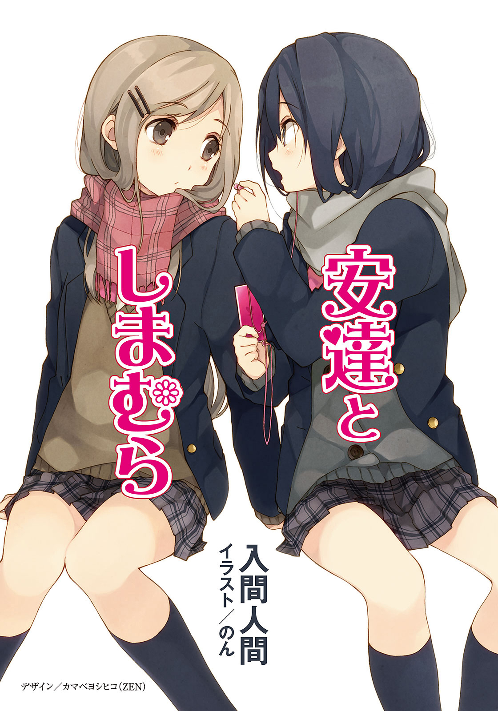
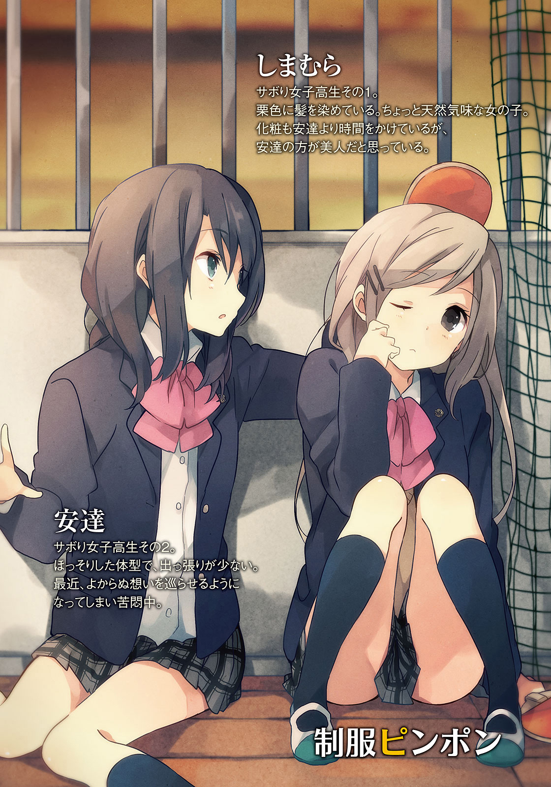
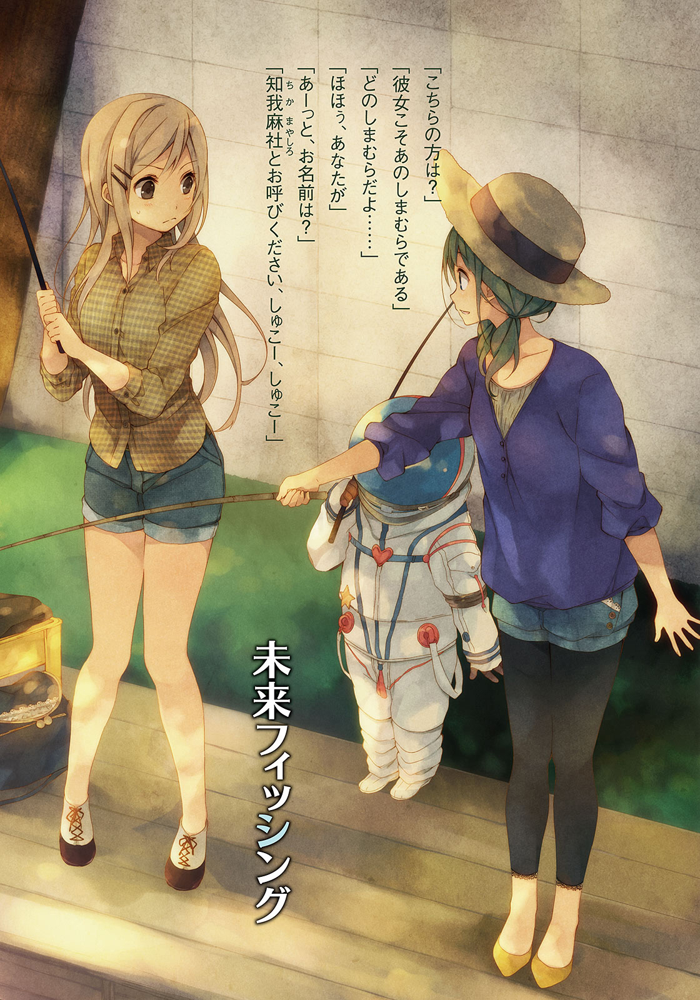
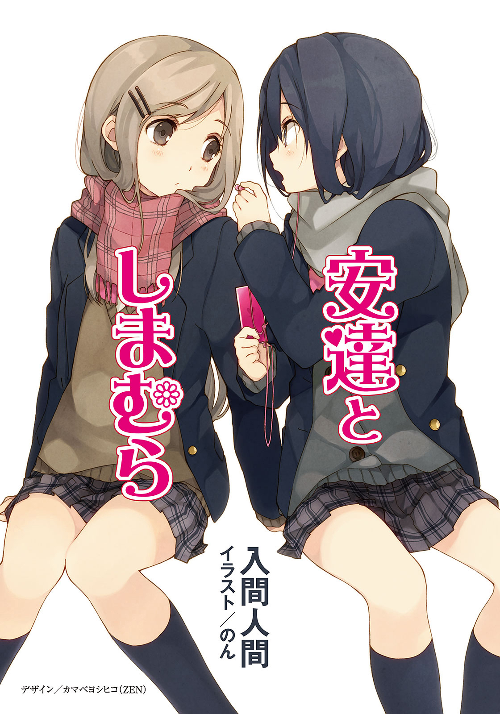
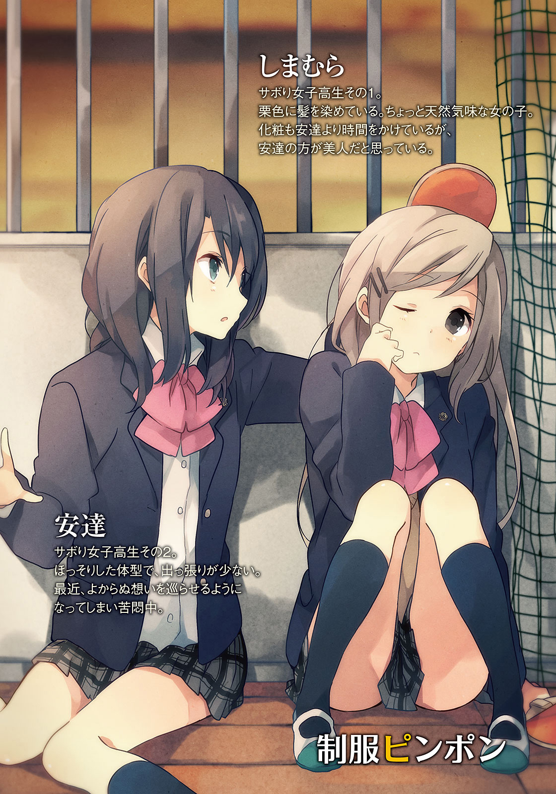
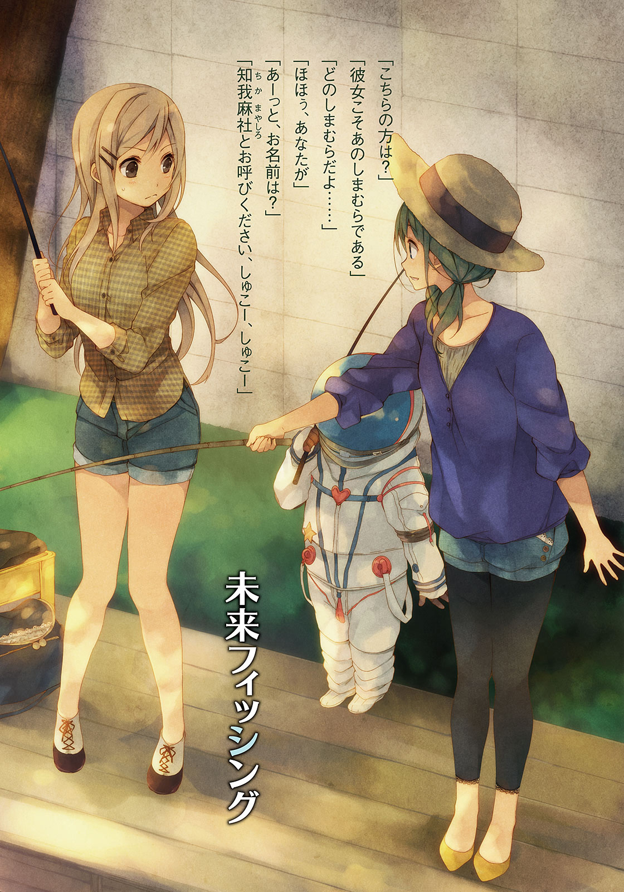


一緒に授業をサボっている安達が「ピンポンしよう」と言い出したことが、わたしたちの間に密やかな卓球ブームを生むことになった。大きな窓を開けるわけにもいかず、少し蒸し暑い体育館の二階には、今はめったに使われていない卓球台と道具一式が置いてあった。
一階を見下ろすことのできる側には、緑色のネットがかかっている。打ち損じたボールが下へ落ちないようにと、卓球部がこの学校にあった頃の名残と思われる。それの端をお尻で踏んづけて、安達とぼそぼそお喋りするのもいささか飽きていたところなので、わたしも賛成した。
十月下旬、衣替えが済んで、でもまだ長袖の制服が少し暑い季節。空は高く、青く澄んでいて体育の授業もグラウンドで行われている。体育館を勝手に利用しているのはわたしたちだけだ。下を覗いてそれを確認してから、安達と卓球台の用意を始めた。
「中学んときさ、部活とかやってた？」
不慣れでネットを台に設置することに苦戦しながら、安達が聞いてきた。安達とは一ヶ月ぐらい一緒にサボっているけど、部活の話はしたことがなかっただろうか。
「バスケやってたよ。ちょっと熱血してた、遅くまで残ってシュート練習もしたし」
意外だねぇ、と安達が言う。わたしの背が自分より低いからそんなことを言うのだろう。
「あ、じゃあバスケやる？」
「素人相手に本気は出せんよ」
言ってろ、と安達が笑った。下のコートでバスケなんかやっていたら音ですぐ教師に見つかってしまう。安達も本気じゃない。それに当然だけどどっちも制服だから、バスケなんかやったらスカートが捲れ上がってお互いにそればかり気になりそうだ。
素人が遊ぶなら卓球ぐらいの動きが丁度いい。
二階でひっそり、この小さな空間で。
安達とわたしは高校の一年生。入学してから、どちらもそれなりにふまじめ。安達とは旧来の友人とかそういうのじゃなくて、高校に入ってからの比較的浅い仲。知ってることはそこそこで、知らないことは山ほどある。それらの大半は、わたしが知る必要のないことだ。
安達の見た目はそこまで冒険していない。髪も目立たない程度の茶色に染めて、まぁそれが少々長いぐらい。地毛で通る程度だった。ほっそりした体型で、出っ張りが少ない。肩がちゃんとあるのかと思うほどの撫で肩だった。強気に映る目つきに加えて唇が薄いから、冷たい表情が多いように見える。実際、落ち着いているというか、おっとりした部分はある。
怒ることも笑うこともあるけれど、声を荒らげたところは見たことがない。
左手首には銀のブレスレットをはめていることが多い。サイズが大きいのか手首に引っかけるような形となって、まるで薄い手錠の輪っかを片方だけつけているようだった。
わたしの方は誰がどう見ても染めていると分かる、濃い栗色の髪。化粧も安達よりは時間をかけている。小さなピアスの一つで不良扱いされてはたまったものじゃないけど、教師ウケは安達の方がずっとマシだ。安達の方が美人だし、反抗的な態度が少ないからだろう。
でも騙されてはいけない。やつはわたしの三倍ぐらい素行不良だ。そういうところは出席日数で判断してほしい。しかし安達の三倍マジメであっても、優等生になれるわけではないのが辛いところ。テストの点数は同じくらいなのも不思議なところ。
安達は制服の上着を脱いで、腰に結びつけてある。卓球台を用意してから、わたしも安達の真似をして上着を脱いだ。派手に身体を振って破れては困るし、なにより暑い。
どうせ汗をかくから化粧を先に落として、ラバーにカビでも生えていそうなラケットを構える。ピンクの斑模様のカラフルなピンポン球を手のひらに載せた。そして向き合う安達が左手にラケットを握るのを見て、左利きだったのかと気づいた。
「卓球最後にやったの、いつ？」
「んー……子供会の六年生んとき、以来？」
サーブを打って、それを打ち返されながら会話する。懐かしい単語が出て、頬が緩む。
「子供会！ うっわー、もう遠い、遠いよ」
こっちは右利きなので、安達の右側を狙いやすい。容赦なくそっち狙いで打ちこむと、安達は正面からほとんど動かず、ラケットの裏面で器用に打ち返してきた。
「あんた器用ね」
「こんなこともできる」
わたしが弱く打った球を、ラケットを瞬時に右手へと持ち替えて、強烈に打ち返してきた。おぉすげぇ、と目を見張る。まぁ球は台に掠ることなくぶっ飛んで、背後のネットを揺らしたけど。
そんな感じに緩く、時々本気で球を追いかけてピンポンして時間を潰す。教室では三時間目の授業が行われている。月曜日の三時間目は数学だったか、日本史だったか。思い出そうにもピンポン球を追う方に忙しくて、頭の中でも授業がそっちのけになってしまう。
わたしと安達は最初から連れだって授業をサボりだしたわけじゃない。安達には安達の場所があって、わたしにはわたしの場所がある。安達はそもそも学校にもあまり来ていなかった。
漫画とかでは学校の屋上でサボっている生徒を見かけるけど、実際は開放されている学校なんてまずない。屋上で昼寝なんかしたら肌が日差しに焼けて大変だろうし。そういうわけで人目につかず、日の当たらない体育館の二階を選んだ結果、偶然、安達もそこにいた日があった。
二学期が始まったばかりで蒸し暑いからか、靴下まで脱いでだらけきっていた。やってきたわたしを最初は教師の見回りとでも思ったのか、慌てて飛び起きたのをよく覚えている。足の指先をぱかぱかと開かせて、その小さくかわいい指のことも印象に残っていた。
それ以来、わたしたちはなんとなく行動を共にすることが多くなった。こうしてサボるときもそのなんとなくで相手が今日、ここへ来ている感覚があって、来てみると本当にいたりする。放課後は、そもそも安達が最後まで残っていることが少ないので、そういうときは他の二人の友人と一緒に行動することが多い。でもその二人は根っからマジメで、授業をサボるどころかノートの板書も一字一句逃したことがないんじゃないかというほどだ。
マジメなのが二人と、ふまじめなのが二人。バランスが取れているような、中途半端なような。そんなことをぼんやりと考える程度の速さで、ピンポン球がわたしたちの間を行き来する。
色んな事に翻弄されない時間ができあがって、居心地よかった。
「もう無理。あっつい」
シャツのボタンを一つ外して、安達が限界を宣言した。ラケットを台に置いてから、「無理ッス」と手を横に振る。わたしの方も汗で張りついたシャツの袖を引っ張り、台から離れた。ピンポン球はそのまま握って持ってきてしまう。投げて台に載せる自信がないので諦めた。
掃除が行き届いていなくて、積もった埃が蝋のように床に張りついている。その上に座るのは少し抵抗があって、落下防止用のネットの上に、ひっそりと二人で座る。
「風が欲しい」
顔が火照って紅潮した安達が呟く。まったく同感で、開けられない窓を恨めしく見上げた。
ここを開けてしまうと、色んな人にこの場所とわたしたちが見つかってしまいそうだった。
「外出る？ 昼休みもうすぐだし」
安達はシャツの袖を捲り、裾もスカートの外に出している。わたしはそこまで制服を崩して着られない。放っておくとスカートまで捲ってしまうのも真似できない。誰も見ていないとしても、なんか恥ずかしい。なんて思っている間にやり始めた。スカートを摘んで振っている。
「まぁはしたない。うちの高校の、えーとなんて言うんだ、えーと」
「品位？」
「そうそれ。下がるザマス」
「で、昼休みかぁ。どうしよ」
なんて言いながらちらりとわたしを見てくる。話が繋がっていないのは気にしないとして。
上着を着れば普通の制服に戻るわたしの方が必然、買い物に出るのが楽である。安達はシャツをスカートに入れて、袖を戻し、ボタンをかけて、上着を着ないといけない。後は乱れた髪も直したがるだろうか。上にふんわり舞い上がっている。
「はいはい、わたしが行けばいいんでしょ」
「次は私が行くから」
「その次は、わたしの考える『次』と全然噛み合わないんだよね」
次の次の次の次の次ぐらいまでもう埋まっているはずなのだ。けど安達は笑うばかり。
「デニッシュパンと、水でいいや。お願いねー」
「分かった。売り切れていたらテキトーね」
安達はミネラルウォーターばかり飲む。そのせいで肌や顔つきに透明感があるのかな、と思うと少し羨ましい。安達の血管は血じゃなくて、水が流れているのかもしれない。
「昼からは授業出るの？」
「多分ね。安達は？ 帰る？」
「うーん。ま、悩んでも授業は受けないけど」
組んだ腕もすぐに解いて、床に手をつく。安達の横顔はもう涼しく整っていた。
安達がどうして授業に出ないか、理由をマジメに聞いたことはない。逆も然り。わたしたちはなんとなくでここに集って、それでも少し退屈を感じてピンポンに興じてみたのだ。
手の中で転がしていたピンポン球を指で弾く。こつ、こっ、こっと軽い音を立てて転がっていったピンポン球が壁に当たって止まる。その音は、人の心を軽く叩くときの音に似ていた。
上履きを脱いで指先で摘みながら、安達が言う。その戯れに神経を遣っているため、表情がムダに険しかった。下唇を反らして突き出し、懸命な顔つきとなっている。
「卓球面白いじゃん」
「ほんと。やっぱり個人競技の方が性にあうかな」
バスケットボールも楽しいけれど、向いてはいないと中学三年のときに悟った。勝負事とかは一人の力でどこまでできるか試したくなる性分で、それが団体競技で足並みを乱す原因となってしまうことはよく理解していた。ボール一人で持ちすぎ、とよく注意されたし。
「でもアレだよね、体育で卓球やるって言っても、多分参加しないと思うんだ」
「あ、それ分かる。そのときは別の場所に逃げてる」
安達が腕を上へ伸ばしながら同意する。右腕がぷるぷる震えた後、べきょっと肘が鳴って「あふ」と息を漏らす。なんでも、肘をぐっと伸ばすとああやって鳴る体質らしい。なにそれ。
「いやー、しまむらとは変なとこで気があうね」
安達がわたしの名前を口にする。意識していないだろうけど、こっちはぐむっとなる。わたしの名字は島村で、それがどうにも苦手だった。島村といえば、しまむらなのである。どうもみんなからひらがなで呼ばれている気がしてならない。島崎とかの方がよかった。
足を伸ばしてぼーっとしていると、体育館にも授業終了のチャイムが響いた。
無人のはずの空間を微細に震わせる放送に、お腹の底がぴりぴりと便乗する。
「チャイム鳴ったね」
「鳴ったね」
「行ってらっしゃい」
手を振られてしまったので不承不承、立ち上がる。脱いでいた上着を着て、上履きを履き直す。財布があることを確認してから階段へ向かう。途中で振り向くと、安達が携帯電話を弄ろうとして手を伸ばしたけれど鞄に届かなくて、諦めて元の姿勢に戻るところだった。あるあると思いつつも、「怠け者ー、カメー」と言ってやった。踵で床を叩く抗議の音が聞こえてきたけど、肩を揺すりながら階段を下りた。
安達の携帯電話に誰が登録されているのかは、山ほど知らないことの一つ。学校ではわたし以外と話しているところを見たことがない。そりゃそうだ。ほとんど学校にいないのだから。
最近はよくここで会うから、もしかするとわたしに会いに来ているのかもしれない。
意識するとちょっとむず痒い。
そしてそれを明確に口にすると、安達は体育館の二階に来なくなりそうだった。
翌日、安達は「卓球やろっか」とまた誘ってきた。昨日より微妙に乗り気に見えて、なんだなんだと思いながら台とネットの用意をする。昨日の経験もあって少し早く準備が終わった。
「私からサーブしていい？」
「いいけど」
昨日と違うオレンジ色のピンポン球を構えて、「ふりゃ」と安達がサーブする。だけどその打ち方がちょっと凝っていた。球の下面を切るように鋭くラケットを振って、変な回転をかけてくる。わたしの目の前で弾んだピンポン球が安達側へと跳ねていく。
球の軌道よりも安達の大げさな動きに惑わされて、ピンポン球を打ち返せなかった。
「むむっ」
訝しむと、珍しく、満面に幼い表情を浮かべる安達が印象的だった。
「昨日ネットで調べてきた。ラケットなんかないからしゃもじで練習したんだけどね」
ラケットをくるくると回しながら、サーブのお披露目に成功して得意がる。安達がそこまで卓球を気に入ることの方が驚きだったけど、そっちには関心ないフリをして悔しがる。
「汚い、素人相手に変化球を使うなんて」
「向上心のないしまむらが悪い。よっと」
また安達が変なポーズからのサーブを放とうとする。でも今回は下を切りすぎたのか、自分の方向にピンポン球が飛んだ。壁に跳ね返る。安達がそれを拾い上げてから、額を掻く。ラケットの上でピンポン球を跳ねさせながら種明かしした。
「まだ十回に一回ぐらいしかまっすぐ前に飛ばないレベルでして」
「新しい技を覚えて弱くなるのか、きみは」
なんにもしなくても勝てるんじゃないの、わたし。あ、次も失敗して明後日に飛んだ。派手に跳ねたピンポン球は別の台や床にぶつかる。ネットを中央としてわたし側に飛んだので、失敗したのは安達だけどわたしが取りに行こうとする。と、それと同時に下の階から声がした。
どきりと心臓に針でも刺さったようだった。身体が急停止して、ピンポン球は遠くへ逃げていく。安達も似たような反応だった。女子の声が聞こえてくる。安達が卓球台を回ってこちらへやってきたので、一緒に下の様子を覗いた。壇上にでも上がって、二階を見上げればわたしたちと目があってしまう。心臓の針はもう溶けてなくなったけど、肌はぴりぴりとしていた。
どうやら、この時間は体育の授業があるらしい。同級生の女子がバレーの準備を始めていた。同級生だとすぐに分かったのは、友達の顔を見つけたからだ。日野と永藤がネットと支柱を運んでいる。以前は座って喋っていただけだから、誰かが体育館に入ってきてもそんなに驚くことはなかった。そのせいで、授業の時間割なんかほとんど学んでいない。
二人で口もとを押さえながら、こそこそとしゃがんで座りこむ。未だ床を小さく跳ねているピンポン球の音に誰か反応しないか、ドキドキした。
『やっばーい。ドキドキしてる』
安達が小声で、楽しそうに話しかけてくる。不謹慎なやつめ、と笑いながら肘で小突く。
『もし上来ちゃったらどうする？』
わたしが尋ねると、安達は口もとを隠したまま笑い、目を上へと向けた。
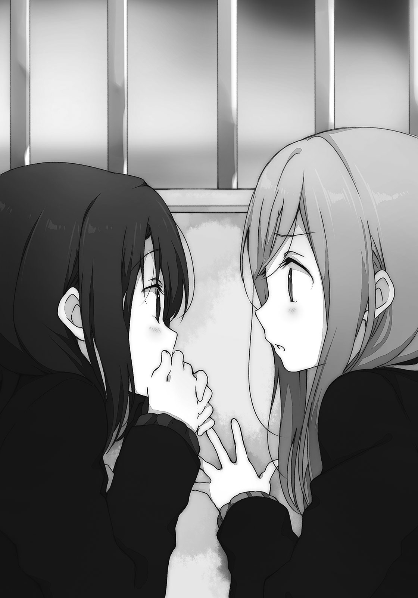『窓開けてさ、飛び降りて逃げようか』
『えぇ、いやここ二階だよ。足折れない？』
安達の提案に難色を示す。この下になにがあるかも覗いたことがないから怖かった。いや、冗談の話になにをマジメになっているんだって感じだけど。安達は、『ふむ』と頷く。
『しまむらはカルシウムが不足していると』
『その解釈、すっげームカッ』
そうやって怒る時点でカルシウムが足りていないのだろうか。
背中を預けている壁越しに、同級生たちの雑談が感じられる。まだ先生も来ていないらしくて、お喋りを遮るものはない。日野と永藤はわたしがどこでサボっているか知らないから、同じ建物の中にいるなんて想像もしていないだろう。そう考えると、ちょっと愉快だった。
二人で隠れるように屈んでいると、悪いことをしている気になる。いや当然悪いことなんだけど、安達とその悪いことを共有するのは、適度に楽しい。相手が安達だからはまったのか、それとも単にいけないことをしている感覚に酔っているのか。
答えはすぐ出るけど、敢えてぼやかす。
オレンジのピンポン球はいつの間にか壁の端まで転がって、大人しくしていた。
『今日の昼ご飯は、偶には牛乳でも飲もうかな。飛び降りても足が折れないように』
本気ともつかない顔のまま、安達がそんな予定を立てた。
勿論、今日が安達の言う『次』であるわけはない。
その日の放課後、例によって安達はいつの間にか帰っていた。家に早く帰ると母親がうるさいとか以前に話していたから、町でもうろついて時間を潰しているのだと思う。
わたしは昨日と同じく午後から授業に出て、その後、日野、永藤と一緒に本屋へ寄っていた。家へ帰る道と正反対に行かないといけないから普段は本屋に付き合うことはないけど、今日は少し見たいものがあった。そんな本があるのか、コーナーを覗いたことないから知らないけど。
「あるもんだ」
スポーツコーナーの棚を眺めて、卓球講座の本を抜き取る。安達がネットならわたしは本だ。ひっくり返して裏面の値段を確認すると、思わず「たっかっ」と本音が飛び出た。
ネットがもてはやされるわけだ、と納得する。検索便利だし、やっすいし。
「なに見てんの？」
日野が並んでわたしの手元を覗こうとしてくる。本屋の入り口で別れたのに、わたしを見かけて近寄ってきたらしい。隠すのも面倒なので表紙を見せると、「しまむら、卓球部入るの？」と首を傾げられてしまった。うちの学校に卓球部などない。
日野は少し地味な見た目を貫く同級生。髪も染めたことがないし、万引きしたこともないし、他校の女子生徒の髪を引っ張ったこともないそうだ。後半二つはわたしも経験がない。
目が丸くて大きいし、愛嬌がある……というか、「ズバヒュン！」とラケットを振る仕草に効果音をつい口走るのは、単純というか。ノリがいいのでおだてるとバク宙ぐらいならその場で始める。あと趣味が釣りで同好の士が校内にいないとよく嘆いているが、それはまた別の話。
「で、なして卓球か？ 『ピンポン』が金曜ロードショーでやってたかな？」
「いやなにかに影響されたわけじゃないから。ただ、なんとなく」
説明が難しくて、いや難しいわけじゃないけど言い渋って、一ページも読まないまま卓球講座を本棚に戻す。やっぱりわたしもネットに頼ろうか。安達に『お、私の真似』とか言われそうで、今からムッとなってしまう。ここまで憤った以上、言ってくれないとむしろ困る。
「おーい、私を置いてかないでくれー」
てっこてっこと棒読み気味に自分の存在を訴えるやつまで、こっちにやってきた。
その永藤は巨乳眼鏡。他に説明いるのって感じだけど、私服のときは左右から垂らした髪の先端が胸の上に乗っていることが多い。直毛の髪は手に取るとサラサラ流れて気持ちがいい。
胸の大きさと比例するように態度も大人びて落ち着いている。ただし、ちょっとバカだ。
「で、なんの話？」
「気にしない」と日野が永藤の胸をぺしんと叩く。「分かった気にしない」と言いながら、永藤が日野の頭を叩き返した。日野と永藤は中学から友達らしい。一方、わたしは高校に入ってから知り合ったわけで、友人といえども微妙に距離感が異なる。ただ、距離っていうのは一概に近ければいいってものでもない。近すぎれば反発して、すれ違うことだってある。
「自然なセクハラに対する言い訳を述べよ」
「永藤が気にしすぎだから、緊張をほぐしてやろうと」
日野はまったく悪びれない。悪びれるところを見たことがない。正義感あるなぁ。違うか。
「そうなの？」
聞いてみると永藤は少し照れたように目を伏せながらも、小さく頷く。
「大きいと、まぁ、男子の視線は集まるねぇ。気になるよ」
永藤が胸を隠すように腕を組む。勿論、まったく隠せていない。
「同じ教室の男子は永藤のおっぱいを想像の中で十回は揉んでいると思う」
「うわぁ……それは気持ち悪いなぁ、うん」
わたしが言うと永藤が引いた。本当はもっと生々しい想像なんだろうけど、こんなところで猥談なんかしたくないのでぼやかした。本棚に戻した卓球本を一瞥して、息を吐く。
「有名税みたいなもんだって」
そう言いながら、肩でも叩くような調子で日野が永藤の胸を叩いた。そして「おっと間違えびゃ」と言い切る前に永藤が頭をぶっ叩いたので、日野は舌を噛むことになった。
どっちも軽薄な音がした。そんな二人と仲間に見られないよう、そろそろと逃げた。
逃げはしたけど、本屋を出たときはまた三人一緒だった。本気で逃げてもなぁ。
「しまむらって、授業結構サボるけどなにしてんの？」
隣を歩く日野が買った雑誌の入った袋を抱えながら聞いてきた。永藤もこちらに目を向ける。マジメ組ではあるが、多少なりとも興味があるみたいだ。とはいえ、取り立てて説明することもない。授業で眠気と闘える友人二人を悪の道に引きずり込めるほど、わたしの居場所に魅力はない。
じゃあ、なんでそんなところにいるんだと思わなくもないけど。
「なにって、ダラダラ。寝たり、ぼーっとしたり、携帯弄ったり」
卓球したりは言わなかった。「自由だなぁ」と日野が言う。羨ましがっている様子はない。
「学校にそんなとこある？ どこいても先生に見つかりそうだけど」
永藤は不思議そうだった。学校の無難な場所しか利用しない優等生には、隠れんぼに向いている場所が想像つかないのだろう。永藤たちはそのままでいるべきだと思う。
「あ、大体どこにいるか分かった」
「へ？」
日野がいきなり察してしまう。真偽のほどは分からないけど狼狽してしまう。
「今度探してみようか？」
それから永藤に楽しそうに提案する。「止めてくれ……」と苦笑い混じりに釘を刺しておいた。本当に見つけられたら、困るのだ。
あそこにわたし一人だったらよかったけど、今は安達の都合というものもある。
「そういえばこの前の日曜、釣り堀で変な子と出会ったんだぜぇー」
なぜか唐突に、そして自慢げな日野に呆れる。こいつのこういう自慢は一体何度目だろう。
「あんたって、いっつも変な人と会ってない？」
実際、日野がそう前置きして紹介するやつは本当に変なやつばかりなのだから驚かされる。そういう星のもとに生まれたのだろうか。そうなるとわたしも変なやつになってしまうが。
「変質者に会うよりマシね」
永藤がフォローするように言う。そりゃそうだけど。それでいいのか、日野。
「こないだ会ったのはさー、なんか宇宙服みたいなの着た子で……」
嬉々とした調子で話しているのだから、それでいいのだろう。なら結構けっこー。
日野の語る変な子の話を適当に聞きながら、学校側まで戻って、それからようやく本来の通学路を歩き出す。日野と永藤はバス通いなので、バス停までは一緒に向かう。わたしはその後、一人で家まで歩いて帰る。自転車は家に一台しかないうえ、母親が足代わりに使っているので、ほとんど乗ることがない。母親は元体育会系でスポーツジムにも通っているので、チャリンコをこぐのが異様に速い。町内の怪談のネタに使われるほどだった。
「あ、あれをみろっ」
ガソリンスタンドの前を通りすぎたあたりで、日野がいきなり前方を指差す。わたしたちの視線がそちらへ向いたことを確認した後、すぐに引っこめた。なんだと目を凝らすと、「あ」
安達だった。
安達が行儀悪く、車道と歩道を分ける柵の上に座りこんでいた。上着も脱いでシャツも出しての、いつも通り着崩した格好だ。前髪の位置が気になるのか、手鏡を覗きこんで弄っていた。
後ろに倒れたら当然、車道に転がることになる。行儀よりそっちが心配だった。
側には安達のものらしき、ブルーフレームの自転車が停めてある。
安達が自転車通学しているのを、初めて知った。
安達もこちらに気づいた。その視線に「わひゃ」と日野が軽く怯える。日野と永藤は安達と話したこともないだろうし、わたしが友達であることも知らない。視線の意味を、メンチ切られていると解釈しても不思議じゃない。それを踏まえて、さて。
安達と体育館の外で会うのは、あまり考えたことがなかった。こういうときどうすればいいんだろう。安達もこっちを見てはいるけど、動こうとはしない。多分、安達も戸惑っている。
いつまでも戸惑って見つめ合っていてもおかしいので、ついと視線を外して。
結局、互いに知らぬ顔をしてしまう。
安達を意識しないようにして通りすぎる。安達もわたしに声をかけることはなかった。無視したと怒っていないだろうか。振り向くと目があって、ほとんど同時に逸らした。
「………………………………………」
なんだこの恥ずかしく、落ち着かない感じは。付き合っていることを周りに秘密にしているカップルじゃないんだから。しかしまぁニュアンスは似たようなものかもしれない。
「さっきの誰だった？ 教室で見たよね、四月ぐらいに」
永藤が垂れる髪を耳にかけながら、わたしに聞く。おいおい、またか。
「あんた、あいつを見かける度に誰だったって聞いてるよ」
日野が指摘すると「そうかな」と永藤が頭を捻る。うぅむ、やっぱり微妙に頭使っていない。
「あいつは……安達。同級生」
「立派な不良だよね、教師公認」
わたしの簡素な説明を日野が補足する。公認されていないやつは不良じゃないだろう。
「へー不良。しまむらの仲間？」
「さぁねぇ」
永藤からすればわたしも不良だ。授業に偶に出てくる不良がわたしで、まったく出て来ないのが安達という差しかない。マジメな不良なんていないということだ。
しかし微妙に違いはある。安達はヤンキーだけど、わたしはぬぼーっとしている印象が拭えない。日向ぼっこして一日を過ごすイグアナみたいだ。ぼーっとサボっている感じ。
そのヤンキー安達はこんなところでなにをやっていたんだろう。
もう一度だけさりげなく振り向くと、安達はもう自転車で走り出していた。
翌日、水曜日。まだまだ続くよ一週間。安達はなかなか現れなかった。
一時間目に知らないクラスの体育が終わった後も、わたしは二階に一人だった。今日は曇り空で、窓から光が入りこんでこない。すごしやすい気候で、ぼーっとするのも苦じゃなかった。
だけどそれが三時間目まで続くと、さすがに暇だった。時計を確かめて三時間目が始まっても体育に誰も来ないことを確認してから、卓球のラケットを握る。転がしっぱなしのオレンジ色のピンポン球を拾い上げて、壁に向けて打った。ワンバウンドして壁に当たったピンポン球が跳ね返り、こちらに戻ってくる。それをまた打つ。壁当てというんだったっけ。
こういう密やかな練習が安達との差を広げるのだ。昨日は変なサーブに固執して安達が勝手に弱くなったけど。ぽこぽこ打ち返しながら、時々、階段と踊り場に目をやる。
安達は来ないのだろうか。ここで会ってからはほとんど毎日来ているので、偶に来ないと落ち着かない。昨日の放課後のこともあってか、多分ムダに、きっとムダに心配してしまう。
もし昨日のすれ違いが原因で安達がここに来なくなったなら、一生……は無理としても、半年ぐらいは後悔すると思う。半年経ったらクラスも替わるし記憶はインクのように薄れていく。
今までにもたくさんの人、友達と別れて、色々忘れて、そして今は安達や日野、永藤と出会った。海面に顔を出して一呼吸した後、深く深く沈んで。様々なものが周りからなくなって息苦しくなった後、また海面を目指す。わたしにとって人付き合いとはそんなイメージだった。
「……おっと」
階段を上がってくる音がした。ピンポン球を打つのを止めて、直立したままその相手が誰か分かるまで留まる。安達かもしれないし、教師かもしれない。緊張の一瞬だ、と思うけれど本当は上履きの独特の音で、学校の生徒が上がってきているのはすぐに分かっていた。
上ってきたのは、やっぱり安達だった。わたしを見つけて、安堵したような表情を浮かべる。
いつもと違うのは鞄も肩にかけていないことだった。
「よ。今日は遅かったね」
「あ、いや。もう帰ろうかと思ったんだけど、一応」
安達が髪を掻きながら言う。もうって、まだ昼前なんだけど。
それに、帰るってことはもっと早く学校に来ていたのだろうか。
「ピンポン球の音も聞こえたし」
いつもの位置に座りながら、安達がわたしの手元に目をやる。
そんな遠くに聞こえるほど、大きな音を立てていただろうか。
ラケットとピンポン球を置いて、座りこむ。それから安達を見て言った。
「いたね、昨日」
「うん、いたね」
簡単に確認するように頷きあって、そこで微妙な空気が生まれる。小学生のとき、家族で外にご飯を食べにいったら同級生の子もその店にいたときのような、奇妙な意識をしてしまう。
この会話と意識の停滞が、安達との間には微妙に多い。安達とどれくらいの友達になるのか決めかねているからかもしれない。一口に友達と言っても、相手によって位置とか距離がある。
「鞄は？」
「自転車の籠の中。面倒だから置いてきた」
見たところ、携帯電話や財布も持ってきていない。すぐに帰るつもりなんだろう。
それでも不用心だけど。そう言ったら母親か、と笑われてしまいそうだ。
「チャリ通なの、初めて知った」
「話したことなかった？ 時々、自転車の鍵回してたけど」
安達が握っていた鍵を、キーホルダーを中心にしてくるくる回す。キーホルダーにしているのは紫色の……犬か牛と見た。四本足なのは分かるけど、種族の区別がつかない。
「あー、あったかも。あんまり気にしてなかった」
わたしがそう言って、どっちも黙る。他に話せることはあるはずなのに、頭を振っても言葉が出てこない。安達も似たようなものだと思う。正面の窓を見上げて、目を細めた。
「じゃ、帰るわ」
安達が立ち上がる。「あ、うん」とその姿を見上げて、のろのろと頷く。安達はスカートの後ろを軽く払った後、自転車の鍵を回しながら階段の方へ歩いていく。なにをしに来たんだろうと思ってしまう。そりゃ勿論、ちょっと顔を出してみただけなんだろうけど。
「あのさ、安達」
座ったまま安達の背中に声をかける。安達は「んー？」と不思議そうに振り向く。
「今日授業を受けようと、今日一緒に帰ろうなら、どっちがいい？」
どうしてそんなことを聞いたか、よく分からない。ただわたしの中にはいくつもの空白があって、それは心の器官として機能している。その中のいくつかが、それを訴えていた。
物足りないと。空腹感に似たそれが、わたしの背を軽く押した。
昼休みが近いから単にお腹が空いていた。そんなのが真相かもしれないけれど。
安達は少し驚いていた。でもその驚きが風のように吹き抜けた後は、大して悩まない。
「……じゃあ、学校終わるまでどっか行って、適当に時間潰すかな」
安達が後者を選ぶ。そりゃあ、授業を受けるわけないかと笑ってしまう。
初めから分かっていたのなら、二択の意味なんかない。
「昨日のとこで待ってるから」
「うん、分かった」
安達が手を振ってきたので、釣られて小さく手を振った。
学校の外で時間を潰してから一緒に帰るって、なんか変だ。
絶対に変だ。けどその提案がなんとなく面白くて、高揚して、笑いながら安達を見送った。
学校が早く終わらないかなぁと思うのはいつものことだったけど、今日は、二割増しだ。
永藤は部活に参加しているので、なんにもしていない日野とわたしが余りものとなって帰る日は結構多い。でも今日はわたしの方にも用があるので、「んじゃ」と日野を置き去りにした。
「あぁ、あたしの中のウサギちゃんが死にそう」
などと日野がのたまっていたけど、下駄箱で別れた。
日野と永藤のいいところは、忠告はしてきても干渉しないところだ。わたしを更生させようとかそういうお節介は働こうとしない。悪いやつは勝手に悪くあれである。
靴を履いて校舎の外に出ると、小雨がぱらぱらと降ってきていた。これはマズイと必然、早足になる。傘なんか持ってきていないので、正門から出る頃には走っていた。
安達はもう待っているだろうか。そう考えると待たせるのが申し訳なくて、もし雨が降っていなくてもわたしは走っていそうだった。別に期待していたわけじゃないけど、礼儀だ。
そうして何人か制服の男子たちを追い抜いてガソリンスタンドを通過した頃、安達の姿が見えて複雑な感情が去来する。待っていたことにホッとしたような、悪かったなぁと思うような。
小雨の中、律儀に傘を差して待っている。安達が傘を持参していることも驚きだった。
「ポーズまで同じじゃなくてもいいんだけど」
昨日と同じ姿勢で柵に乗っている安達に笑ってしまう。息を少し荒らげながら走っていくと、安達がわたしに気づいて柵から降りた。自転車のハンドルを掴みながらわたしを待っている。
わたしは最後まで走り抜けて、まだ家にも帰っていないのにゴールと内心呟いた。
「ごめん、雨降っちゃった」
「いやいや。雨はしまむらのせいじゃないから」
安達がくすぐったそうな顔になる。それから「持ってて」と傘を渡してきた。両手が自由になって、自転車のストッパーを蹴って外してからわたしの方に振り向く。
「しまむらの家ってどっち？」
こっち、と道を真っ直ぐ指差す。
「あぁ、やっぱりか」
安達の顔が曇る。なにか不都合があるのか、と目で尋ねると安達が言った。
「いや、私の家と方角が大分違うなーって」
わたしの家と七十度ぐらい違う方向を指差した。中学校の学区が同じじゃなかったわけだから、当然なのだけど確かに大きく異なる。安達の家へ帰るならこっちへ来る必要がない。
じゃあ、昨日はどうしてここにいたのか。やはり、知らないことは大きな山を作っている。
「どっちの家から帰る？」
「斬新な質問ね。あー、じゃあ、安達の家からでいいんじゃない？」
聞かれて、そう答える。どっちの家へ先に行っても、後のやつが遠回りすることになる。雨の中で待たせたこともあり、安達を優先してみた。安達も特に反対せず、自転車に乗る。
「後ろ乗る？ で、しまむらが傘を差す」
安達が後輪を足で軽く蹴る。悪くない提案だけど、ふざけて注意してみた。
「二人乗りは悪いことなんだぞー」
「いいじゃん、不良なんだし」
「それもそうだ。いやー不良ってお得だね」
「ほんとほんと」
あっさり納得して後ろに乗った。車輪の脇に足をかけて、安達の肩に手を添える。残る手で傘を差して、「いいよ」と言ったらすぐに安達がペダルをこぎ出した。最初は重そうだったけど、自転車の速度が安定することで安達も順調にペダルを回せるようになる。
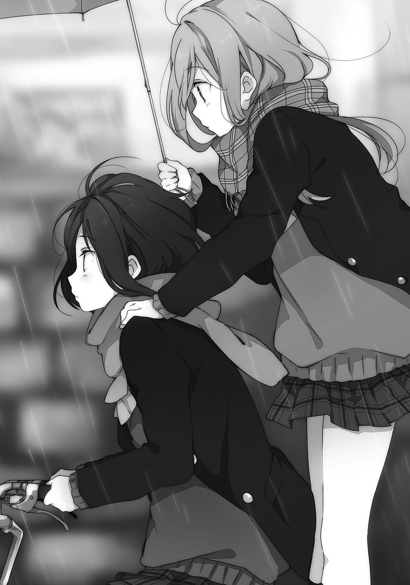安達の頭を見下ろす。顔とセットで見ると綺麗に思えるそれも、単品で目に映るとどことなくシュールだった。毛むくじゃらの生き物に見える。わたしの頭も似たようなものかな。
これでどっちかが優等生で生真面目だったら『いけないよ、こんなの！』とか友情に熱く燃えて正道に立ち返らせるんだろうけど、わたしたちはどちらもふまじめだからなぁ。
むしろ深みにはまっていく感じだった。
それとこの傘、差している位置が高すぎて雨を凌げていない気がする。
「しまむらって友達いたんだね」
わたしの来た道を逆走しながら、安達が前を向いたまま話しかけてくる。
声は穏やかで、でも少し乾いていたと思う。少し低い位置から聞こえるからだろうか。
答え方次第では気まずくなりそうな予感がした。なんでか分かんないんだけどさ。
「他にもユニクロくんと、Ｈ＆Ｍちゃんとか友達かなぁ」
嫌いな名字だけど、自分からネタにしてみた。安達の肩が笑うように、微かに揺れた。
「いないからあんなところにいるのかなって思ってた」
安達が珍しく『わたし』について話をする。それともそうした見解は、安達自身のことを語っているようなものだろうか。わたしもまた安達に、『安達』についてを問う。
「安達は？ 友達いる？」
「んー……しまむらぐらいかなぁ」
「せめー」
などと言いながら、少し嬉しかった。安達からしてみれば喜ばしいことじゃないだろうけど。
自転車が目の前の曲がり角を鋭く曲がる。普段の感覚でそう動いて、でもわたしの分だけ重いからか車体が泳ぐ。少しふらついて、危うく側面を建物の壁で削るところだった。
持ち直してから、安達が上を向く。運転中なのに思いっきりよそ見して、わたしを見上げた。
「な、なに？」
安達はすぐに答えない。身体を反らしたまま真っ直ぐ走る。代わりにわたしが正面を向いて前方を確かめたいところだけど、見つめられていると目を離しづらい。
「さっき、しまむらがこっちに走ってくるのを見て思ったんだけど」
「は、はぁ」
「しまむらって、猫っぽいよね」
カララーッと、安達の下から自転車のタイヤの回る音が聞こえた。
「猫ですか」
「人間じゃない」
ひでぇ。どんな走り方していたんだ、わたしは。それとも顔か、顔が猫なのか。
「どこらへんが猫？」
「人に懐かなそうなところ」
「……そうですかね」
「そうなんじゃないですかね」
自分のことと、相手のことを話そうとしないところが。
安達の目にそう言われている気がした。肩に乗せている指に、少し力が籠もる。
人に心を許さないところはあると思う。でもそれは多かれ少なかれ、誰にでもあるはずだ。当たり前のことなのだ。そういう思い込みが、懐かないなんて評される原因かもしれない。
しかしそれは安達も似たようなものじゃないかなと思う。
そもそも猫を飼ったこともないので、安達の言うことが本当かも分からない。
「懐かないなら、自転車の二人乗りはしないと思うなぁ」
「私が猫かなんかに見えているんじゃないかな」
そう言って、安達がようやく前を向く。安全運転に戻ったけれどホッとすることなく、むしろ不安のようなものがせめぎ合う。『わたし』の話がいっぱいなのは、どうも苦手だ。
目を逸らすように、心もその話題から少しだけ逃げ出す。安達の話へ逃げる。
安達も猫か。体育館の二階にひっそりと、猫二匹。
少し蒸し暑く、だけど日差しの入りこむ窓を前にして寝転んで。
忙しなく動くピンポン球に反応して追いかけ回す様は、確かに猫のようだった。
「帰り道が分からないので、学校までの地図を書いて」
「あ、やっぱりそうなるよね」
考えなしなわたしの要求に安達があっさり納得してくれた。自分の鞄から、埃でも被っていそうな筆記用具とノートを取り出す。むしろ持っていたのかって、感心してしまった。
三十分ぐらいかけて到着した安達の家は、白かった。いや壁の話だけど。建物の左側に駐車場があって、今は屋根の下に一台も止まっていない。壁に隠れてほとんど見えないけど、奥には緑色の物干し竿の端っこが見えた。
玄関から正面にあるのは畑。三面か四面、横に連なっている。その畑を真っ直ぐ越えた先には工場らしき巨大な建物があって、田舎だなぁと感じさせた。うちの周りも似たようなものだ。
昔はもっと畑だらけだった。通りに人家が珍しいほどに、噎せ返る草の匂いがしたものだ。今は家がほとんどで、畑の方が珍しくなってしまった。
小学生のときに畑の側を歩く絵を描いたけど、今、あの景色はどこにもない。
「はいできた。私が自転車で通ってる道だから、多分しまむらも通れる」
「なんだそれは。わたしが自転車より横幅あるってこと？」
「両腕を真っ直ぐ横に伸ばせばあるんじゃない？」
安達が笑いながら、ノートの切れ端に書いた地図を渡してくる。誰がそんな歩き方をするものか。受け取った地図を眺めて、こーでこーでと学校までの道のりを指でなぞる。そうしていて気づいたけれど、この地図があれば一人でも安達の家に来られる。
そんな機会もそうそうないだろうけど。安達がいるかも分からないのに来てどうする。
「濡れてない？」
安達がわたしの肩や髪をぺたぺた触る。
「結構ビショってるじゃん」
「途中から雨足も強くなったし」
安達の方も前髪が濡れて額に張りついている。視線で気づいたのか、安達が前髪を掻き上げた。デコが出て、普段と少し雰囲気が変わる。いつもより大人びていた。
「上がってく？ タオルぐらいなら貸すけど」
「んー、いいわ。濡れ鼠で上がったら安達も迷惑するし。するよね？」
なんか断る理由を安達に押しつけているみたいだった。安達が苦笑する。
「そうやって一歩引くところが、あー、しまむららしい」
ムッとなる。そう決めつけられると反発したくなる。自分でも悪い病気だとは思うけど。
「じゃあ上がってくか」
「じゃあって……えぇい帰れ」
追い返された。その気になるとハシゴを外すなんて、安達も酷いやつだ。
まぁいいかと大して執着せずに帰ろうとすると、安達が声をかけてきた。
「しまむら、傘」
安達がさっきまで使っていた折り畳み傘を差し出してくる。
「傘ないとキツイでしょ」
「借りとく。明日返すから」
「明日、学校行ったらね」
安達らしい台詞だった。受け取った傘を手の代わりに振って、安達邸から離れる。
二人乗りの自転車で三十分。普通に乗って二十分として、歩いたら倍ぐらいかかるから、四十分。それだけ歩いて学校の前まで戻った後、二十分かけて家まで歩く。計一時間なり。
「きっつー」
「しまむら」
頭の上から呼ばれた。顔を上げると、傘の向こうに安達が見えた。家の二階にいた。
大慌てで二階に上がって、部屋の窓から顔を出したらしい。変なの、と笑ってしまう。
「どうしたの？」
「えーっと……まず、タオル」
安達がタオルを放ってきた。濡れた地面に落ちる前に取ろうと傘を放り出して、両手を広げる。意味ねー、という呟きが上から聞こえたけどなんとか無事にタオルを掴み取った。
傘を拾い直して、振って水滴を落としてからタオルで顔を拭く。レモン色のタオルは洗い立てなのか安達の匂いはしなかった。知らんけど、安達の匂いなんて。
「さんきゅー」
「うん」
「………………………………………」
「………………………………………」
まずと言っていたから次があるのかと思って、安達を見上げたままそれを待つ。でも安達は窓枠に頬杖を突いてこちらを見下ろすばかりで、なにも言おうとしない。雨音だけが響く。
借りたタオルで髪を拭いて、これも明日返そうと思ったところで安達が口を開いた。
「ごめん」
「ん、なにが？」
「遠回りさせて、悪かったなぁって思った」
本当にそんなこと思っているのか疑わしい涼しい顔だった。
「送ってこうか？ しまむらの家まで」
「へ？ いやいや、意味ないから」
わたしはなにをしに安達の家まで来たのだ。いや、なんのために来たのか自分でも分からないのが本音だけど。「それもそうだ」と安達が表情を変えないまま頷いて、また黙る。
安達との間にある、この空白の時間が落ち着かない。なにか喋らないといけないような気がするし、すぐに離れたい気もする。そして今回は、なにも思いつかないから後者を選んだ。
「じゃあね。帰る」
「うん。多分、また明日」
安達は最後まで、多分とか、行ったらとか、登校をぼやかしていた。
二階の窓が閉じてから、わたしも歩き出す。タオルは首にかけた。オッサン臭いかな。
「……変な一日だった」
授業にも参加しないのに自転車で二十分かけて学校に来るとき、安達はなにを考えるのかな。
いつもより遠い帰り道をなぞるように歩きながら、少しだけ安達の胸の内が気になる。
今日、友達の話をした。
次は学校の話をするべきなのかもしれない。
「そして翌日もなんてことなく学校に来る安達さんだった」
「ま、優等生だから」
なにを言っているんだこの人は。ピンポン球を打ち返しながら冷ややかな目で応える。
そんなありふれた木曜日の午前中がすぎて、昼休みになったときだった。
この卓球が終わったらまたわたしが安達の分までパンを買いに行こうかと考えていたところで、二人の陽気な声と足音が体育館へと入ってきた。しかも二階を目指してくる。
「ほら二階で音してたじゃん」とか話し声が足音と共に階段を上ってくる。その声に聞き覚えがあって、もしやと考えている間にそいつらが姿を見せた。思わず顔が引きつってしまう。
「うげっ」
「うげとはなんだ。友人に向かって」
日野と永藤がずかずか歩いてくる。手には購買の袋をぶら下げていた。でもその勢いはすぐに、安達がいることを知って萎れる。「ぬぬ」と日野がわたしと安達を交互に見る。
安達も困惑するように、わたしを見つめていた。わたしばっかり注目しないでくれ、と言いたいけどそうもいかない。まずはラケットを静かに置いて、定位置に座った。
「なにを一人、落ち着いているのだ」
そう言いながら日野もわたしの側に座る。永藤はその反対、わたしを挟むように座った。安達だけが立ったまま、横の髪を弄っている。わたしが手招きすると、安達は悩むようにこめかみを掻いた。「安達」と呼ぶと、あまり浮かない顔ではあったけどこちらへやってきて、わたしたちと少し距離を取って座る。いつもの位置は永藤に座られてしまっていた。
「なんでここが？」
「本屋で卓球の本を見ていたから、ここだと思った」
「あらら」
わたしのせいだった。安達に申し訳ない気がして、横目で様子を窺う。安達はいつもの涼しい顔でこちらを見学している。お喋りに加わる様子はまったくなさそうだった。
日野がわたしの服の袖を引っ張り、控えめに尋ねた。
「あちらにいらっしゃるのは安達さん？」
本人がいるのだから直接聞けばいいのに。
「どこからどう見ても安達だね」
「そうそう、安達さん」と永藤が頷いている。こいつ、また忘れたのか。
「友達だったの？」
「ん、まぁ」
今度は見ないフリもできずに認める。すると日野が不思議がった。
「えー、じゃあ火曜日……ま、いっか」
なにか言いたげだったが、日野が言葉を呑みこむ。それを一瞥した後、永藤が安達に向けて自己紹介した。
「永藤です」
「日野です」
日野も続く。それはいいけど相手は同級生なのに、なんでそんなかしこまっているんだ。
安達は二人を順々に指差し、その名前を口にする。
「永藤に、日野。覚えたよ」
まるで後でお礼参りに行くような言い方だった。日野などちょっと引いている。
「よろしく」
短く締めて、安達がネットに寄りかかる。正面の壁を向いて、口を噤んでいた。いかにも孤高という雰囲気の漂う態度と横顔に、日野たちも安易に声をかけられない。
「あ、パン買ってきた。一緒に食べようと思ってさー」
「ここって先生来ないの？ 体育の授業とかあるのによくバレないわね」
で、わたしが二人の相手をする羽目になる。左右挟んでステレオで喋らないでほしい。
どっちにまず対応すればいいのか迷うから。
えーと、まずパンを食べよう。
日野のぶら下げていたビニール袋に手を突っ込む。一番上にあったパンを出して、「どうもどうも」と礼を述べて二口ほど噛んでから、永藤に答えた。
「授業があるときは座って静かにしてたから」
「ふーん。結構みんないい加減というか、目が節穴というか」
永藤が感心したような態度と口調でバカにする。言動と態度が直角なやつだ。
胸は露骨に曲線を描いているというのに。
「安達はなにがいい？」
安達に話を振る。安達は正面を向いたまま、口だけを動かした。
「しまむらの好きなやつでいいよ」
「ん。じゃあ、これで」
卵パンを緩く放った。安達はそれを受け取って、「ありがとう」と誰かにお礼を言った。
永藤たちもそれぞれパンと飲み物を取って、もそもそと食べ出す。日野と永藤はよく喋って、わたしに話を振るものの安達には話しかけようとしない。安達は安達でこっちに歩み寄る姿勢など微塵もなさそうで、わたしは板挟みにあっているような窮屈さの中、乾いたパンを噛む。
消化によくなさそうな昼ご飯だった。
食べ進めて、それが終わった後の退屈に耐えられないのか日野が騒ぐ。
「卓球していい？ というかやろう」
日野が腕を引っ張って誘ってきた。わたしはなんとなく安達を見ながら、言葉が淀む。
「いやまだ食べてるし。食べてからね」
永藤の手もとからもパンは消えている。
わたしと安達が鈍重なのだろうか。
「じゃあ永藤やろっ」
「いいけど、なに賭けるの？」
「え、賭けないといけないんスか……」
とか言いながら二人が、わたしたちの使っていたラケットとピンポン球を手にする。そこに違和感、靄のようなものを感じながらも、二人の遊ぶ姿をぼんやりと眺めた。
卓球しながら、日野がわたしに話しかけてくる。
「しまむら、土曜日空いてるー？」
「今週の？」
「そう、よっ、っと」
腕を伸ばして台の端で跳ねたピンポン球を打った。永藤はそれを力強く打ち返す。
「やることはないけど」
「じゃあさ、こないだ話した宇宙服を着た子。面白いやつだから会ってみない？」
「それって結局、釣りに誘ってるだけじゃあないの？」
「いやいや、そっちはおまけ。しまむらの話したら、会ってみたいって言ってたから」
どんな話をしたんだ。無難にわたしのことを語ったら、変人に気に入られるところなんかないはずである。どこをどう脚色したのか、日野は卓球に忙しいので読み取ることができない。
「永藤を連れていけばいいのに」
「私部活だもの」
暇人と一緒にするなという言い方だった。部活動だって暇つぶしにしか思えないけどね。
「というわけでしまむら、行こうぜー」
「んー……ま、いいか。土曜日ね」
「よっしゃよっしゃ」
そう言いながら日野が思いっきりラケットを振って、派手に空振りした。
話が一区切りついたのを見計らって、安達を一瞥する。安達は、囓りかけのパンを持ったままぼーっとしていた。
わたしも安達も、口数が多い方じゃない。他に話すやつがいれば必然、寡黙になる。
でもそれとはまた別に、安達は遠い目をするように、誰も見ていなかった。
その目つきに不安とある種の予感を覚えて、小さく溜息を吐いた。
翌日、金曜日。休みが控えているから、平日の中で一番好きな曜日。
水曜日と同じく安達はやってこない。昨日から、なんとなくそんな予感がしていた。日野と永藤の存在が安達になんらかの影響を与えて、この場所に寄りつかなくなるという予感だ。
多分、今日は昼休みまで待っても、その後ずっとここにいても安達には会えないだろう。もしかすると、もうずっとここに来ないかもしれない。ここで安達に会えないのなら、出会う機会は激減すると思う。運が悪ければ卒業まで顔をあわさないこともあり得た。
「運が……悪いのか。そうかぁ」
安達と会うのは運がいいこと、つまり、わたしにとっていいことなわけだ。まぁそうだ、安達は友達だし。友達と会うことがマイナスと感じるなんてなにか変だ。なにかを前向きに感じるからこそ、わたしと安達はここに集っていた。それは間違いない。
その感じていたものは、日野と永藤がここに来ると薄れて、煙のように消えてしまっていた。
安達は捻くれている、というか……それに似た、言い得て妙な表現があるはずなんだけどそれがどうしても思い出せなくて、まぁつまりなんかそれが働いて、ここを避けるのだと思う。
わたしはそれを察しながらも、どうしても言葉が思いつかなくてすっきりとしない。
安達について知らないことは山ほどあって、時々それを歯がゆく思う。
多少なりとも分かっていることは、自分のことだけだ。
昨日、日野と永藤が卓球している姿を見てつくづく感じた。
あーいうのは求めてない、と。
きっちりとジャージを着て、誰かに認められて卓球するのはなにかが違う。
ここは四人でわいわいやる場所じゃない。安達とわたしが、制服で緩くピンポンする空気が一番適しているのだと思う。その独特の、二人きりでしか出せない気怠さのようなものに身を置くことが、ここに来ていた意味なんだと思う。思う、思うばかりでちょっと曖昧で。
わたしにも根本を掴めているわけじゃない。
だけど日野と永藤がここへ来るのは、なんか違うなぁと、強く感じたのだけは確かだった。
「明日十時集合ね。遅れたら釣り針に餌つけてあげないんだから、ぷんぷん」
「分かった分かった」
日野に念押しされて、適当にあしらう。変なやつに会うために釣りに行くっていうのもどうなんだろうと思いつつ、教室を後にした。今日は日野と永藤の誘いを断って、一人で帰る。
廊下から階段、下駄箱を通るまでの間、ノートの切れ端の地図と睨めっこして行くかどうするか散々迷い、結局行かないことにした。安達が大人しく家にいるとは思えなかった。
正門から出て、つらつら歩く。ガソリンスタンドを越えた先で安達が座っていないかと少し期待して途中から早歩きになったけど、あの行儀悪い不良は不在だった。大人しく柵が設置されているだけだ。試しに足を乗せて座ってみたけど、危うく車道に転がりそうになった。
ちょっと死にそうになりながらも、歩くペースを落として進む。ガソリンスタンドと隣接して経営しているコンビニを覗くか迷い、止めて、眼鏡屋の一台も客の車が停まっていない駐車場を斜めに横切る。緑色で円柱みたいな形の進学塾が角にあるところを左へ曲がって、そして日野や永藤と別れるバス停のあたりを通過したところで、衝撃が走った。
「どーん」
「のわっ」
背後から軽くぶつかってきたそれに、背中を押されて前へつんのめる。チンピラか不良にでも突っかかられて金銭を要求されるのではと身構えて振り向いた。その予想はほんの少しだけ正解していた。主に不良の部分が。
安達だった。自転車に乗ったまま手を突き出して背中を押してきたらしい。
さすがに自転車ごとぶつかってくる気はなかったようで安心する。
「ごめん、止まるつもりだったけど間に合わなかった」
「どーんって言ってたんですけど」
安達が自転車を降りて、押しながらわたしの横に並ぶ。学校では一度も見かけなかったけれど、制服を着ていた。自転車籠の中に鞄も入っている。あと、なにかビニール袋も一緒だった。
わたしがなんとなくの勢いで前へ進むと、安達も一緒についてきた。
「あれ、いいの？」
「なにが？」
「安達の家、こっちじゃないから」
「そうだけど。……うん、まぁそうなる」
安達が小さく顎を引いて、しかし特に引き返す様子はない。この間は安達の家に行ったから、今度はわたしの家ってことだろうか。安達なりの時間の潰し方かもしれない。
しばらく黙々と歩く。時々、安達の横顔を盗み見る。髪も顔の輪郭も細く、繊細な工芸物のように整っている。ジッと見ているとまばたきをして、あぁ生き物だなぁと安心する。
長く見つめすぎていたから、安達と目があった。
そして籠の中のビニール袋を差し出してきた。
「しまむら、これ」
「はい？ なになに」
袋の中を覗いてみる。パンが入っていた。二つほど、片方は形からクリームパンと分かる。もう一つは真ん中にツナかポテト、白い具材が入った惣菜パンだった。どちらも学校の購買で買えるものだ。あといつから入っていたのか、温くなったミネラルウォーターが底に転がっている。朝ご飯には少し多く、晩ご飯にはちょっと寂しい。昼ご飯の中身だった。
「今日の昼休みに渡そうかと思ったんだけど」
「昼休み？」
安達が賑わう購買に並んでいる姿を想像してみたけど、違和感が酷い。
でも昼休みと聞いて、ピンと来るものはあった。
「あぁ、『次』か」
そこで今日、初めて安達が笑う。キツク取れる目つきが夕暮れの日差しのように和らぐ。
「いくらだった？ 払う」
値段を聞きながら財布を出そうとする。安達は「いいよ、別に」と教えようとしない。それならばと記憶を洗い、値段を推察することにした。ミネラルウォーターは自販機で買ったものだろうからすぐ思い当たる。後は惣菜パンの値段を思い出せばいくらか分かるというものだ。
眉間に指をぐりぐり押しつけて、「ぐぬぬ」と唸る。「なにしてんの」と安達に訝しまれても無視して脳を引き絞るイメージで記憶を漁り、立ち眩みが起きる寸前でようやく思い出す。
財布を出して、硬貨を確かめる。丁度の金額が払えそうなので用意して、安達に突き出した。
「パンと水の代金。ぴったり当たったでしょ」
わたしは自信満々だったけど、受け取った安達の方は首を傾げている。
「いやもう分かんない。忘れたから」
「なんだ。張り合いないな」
がっくりしながらペットボトルの蓋を捻って開ける。生温い水を口に含むと、もう過ぎた季節である夏の残滓めいたものを感じた。今年の夏休みもゴロゴロしていただけだったなぁ。
少し飲んでから、安達にペットボトルを傾けて差し出す。
「飲む？」
安達がペットボトルを受け取って、三分の一ぐらい勢いよく飲む。ペットボトルから口を離して一息吐いた後、前を向いたまま安達が安堵するように言った。
「しまむらが他の友達と帰ってなくてよかったよ。渡しそびれるところだった」
別にいても渡すぐらいできると思うけど。そう言いかけて、安達の横顔に浮かぶものにふと気づく。子供だった。安達の涼しい顔つきは、少し伏せた目もとと、少し尖った下唇という二つの些細な変化で大きく様相を変える。子供が静かにむくれているようだった。
その顔を眺めて、捻くれているに似たなにかを、やっと理解する。
拗ねている、だ。
ほら、ちょっと漢字が似ているし。似てない？ 人によってはそう見えるかな。
安達は友達がわたししかいないと言っていた。……つまり、そういうことなんだろう。
面と向かってそんなこと口にしたら安達は怒るだろうし、認めないだろうし、わたしを置き去りにして帰ってしまうだろう。わたしの方も照れて、安達の顔を見ることが少し難しい。
認めることの難しさを味わい、翻弄されながら、それでもわたしは時々、正面を向く。
一つだけ、はっきりとさせてみよう。
「安達」
呼ばれて、安達がわたしを見る。
その視線から逃げないよう見つめ返しながら、真っ直ぐ、道の向こうを指差した。
「わたしの家まで一緒だよね」
今のわたしが聞けて、今の安達が認められるのはきっと、これぐらい。
わたしたちの間を行き交うピンポン球に変化をつけるのは、まだまだ練習不足だ。
「うん、そのつもり」
安達がそう答えたので、よしよしと笑う。
地図の用意をしないといけないな、とビニール袋を軽く揺らした。
かくしてわたしたち四人は微妙に繋がりを持つことになる。
といっても綺麗な輪など描けない。わたしを中心に、歪な線が引かれただけだ。
安達が日野と一緒に仲良く釣りに行く日が来るかもまったくの未知数で。
まぁまずないだろうと思いつつも、ほんの少し期待してしまう。
微かな高揚感が、わたしに翼を与えた。
「飛行機の真似。ぶーん」
両手を水平に広げて、少し歩いてみる。
恥ずかしがるまで、あと、何歩かかるだろう。
「おー、さすがしまむら。まさにしまむらの国からやってきた女」
「どこにあんのよその素敵な国」
キュロットの端を摘みながら、そんなにしまむらだろうかと自分の服を見る。しまむらで服を買ったことは正直ほとんどないのに、名前だけでしまむらの申し子みたいに扱われている。
そんなわたしは日曜日、日野と一緒に釣り堀へとやってきた。土曜日にと約束したけど昨日は雨が降っていたので延期となった。どっちにしてもやることはないのでいいのだけど。
わたしは釣りの道具なんかなにも持っていない。日野も普通の格好だった。てっきり、釣りのおじさんが着ているようなポケットの多いベストでも着てくるかと思った。
少し目立つのは大きな麦わら帽子ぐらいか。ツバを弄りながら得意げな顔になる。
「釣りキチと呼んでくれていいのよ」
「なにそれ？」
「え、知らんの？ おぉう」
おのれ現代っ子め、と嘆かれる。それから二秒と経たずに、日野がなにか閃いて明朗な顔に戻る。
「日の曜日だけに日野と出かける」
「うるさいよ」
いやに得意顔なちびっ子に是非にと前から誘われていて、やることもないからいいかと小学校の裏手にあるそこへと案内された。わたしの卒業した小学校とは学区が違うから、そんなものがここにあるなんて知らなかった。釣り堀の側には学校指定の制服等を売る小さな商店があって、その建物の作る日陰にわたしと日野が立っている。秋の鱗雲と澄んだ青空が広がって気温は穏やかだけれど、日差しはまだ強い。日差し対策に日傘を持ってきて正解だった。
「永藤は来ないの？ 土曜日は部活でも、今日は暇でしょ」
「魚が嫌いだからやだって断られました」
これで五回目、となぜか嬉しそうに報告してくる。手を大きく広げて五を強調してきた。
永藤はハンバーグとカレーが好きだからなぁ。しかもカレーは甘口しか食べない。魚では釣れないなぁと二重に思う。安達はどうなんだろう、と水を飲んでいるときの透明な横顔を思い出しながら少し気になった。
「フリマで神父さんから買った、三百円の釣り竿をきみに進呈しよう」
「それは由緒ある品をどーも」
二竿の内、黒い方を受け取る。黒く塗った木の枝みたいにシンプルで細い。言われないと竿に見えない気がする。日野の方は竹竿で、わたしのやつより短い。
「ちなみにこっちは一日五百円で貸し出ししている釣り竿」
「貸し出し？ なんで最初からそれ持ってるの？」
「あら不思議」
説明はそれで終わりだった。日野が鞄の中に手を入れてなにかを探し始める。
「ところでしまむらちゃん」
「なに？」
「まさかきみはエサつけられなーい、と触るのを拒否して女の子しちゃうかね？」
担いでいた鞄から、小箱を取り出す。蓋を開けると、中には活きの良いミミズがびっしりうじゅうじゅ「うじゅうじゅ」血の気と共に後退した。
日野がミミズを摘みながら、わたしの反応に困ったような笑顔を浮かべる。
「なんだ、しまむらも虫ダメなの？」
「むり、むり」
むりっす、と何度も手を横に振る。悲鳴を上げなかっただけ耐えた方だ。
「仕方ないなぁ」
日野がミミズ入りの箱をしまって、別のタッパーを取り出す。今度はどんな虫だと身構えていると、黄色い粘土のようなものが入っていた。これも餌の一種なのだろうか。
「練り餌を昨日作っておいたから、分けたげる」
「練り？ うん、分からないけどありがとう」
生き物じゃないならなんでもいい。ミミズに触るよりはマシだ。
「これ、材料なんなの？」
「小麦粉と水と卵と……隠し味を少々。イクラの粒とかも結構いいんだけどね」
「イクラ？ もったいないなぁ」
わたしなら自分で食べちゃうだろう。
「それとしまむらがいっぱい釣っても困らないように、大きいバケツを用意しておいたよ」
いぇーい、と親指を立てて金属製のバケツを渡してくる。
嫌みかこのやろう、いぇーい。
餌をつけてから池の周りに組んである竹の足場に立って、二人で釣り竿を垂らす。
その池は釣り堀というか、大きくて深い水たまりと表現する方が似つかわしい、こぢんまりした場所だ。学校のプールよりも小さいように見える。水質は濁って、底は覗けない。
「これなら飛び込んで手で魚捕まえた方が早そう」
「ヒルにいっぱい食いつかれるけど、やりたいならどーぞ」
冗談で伸ばそうとした足をすぐに引っ込める。手っ取り早いのは諦めて、ぼーっと、水面を見つめた。傘を差している手が早くも飽きたようにぐるぐると動く。
そうして、釣りを始めてから五分くらい経っただろうか。
「安達さんってさー、どんな人？」
日野が急に話しかけてきた。脈絡なく安達の名前が出て、なんだなんだと首を傾げる。
「どんなって、普通？」
「説明になってないよしまむーちゃん」
勝手に変なあだ名をつけるな。でもこっちの方がマシかもしれない。
「なんで安達の話？」
「不良って珍しいから、興味津々」
日野がなははと笑う。安達は別に不良ってほど悪いことしてないけどね。単にサボりが酷いだけで、それ以外は本当にわたしたちと変わらないのだ。武勇伝の一つもない。
ミミズを見たらわたしより派手に飛び跳ねて逃げ出すと思う。
「しまむらが一番仲いいんでしょ？」
「そんなことないと思うけど」
でもこの間、友達がわたしぐらいしかいないって言っていたな、そういえば。
「やっぱそうかも」
「移り気だな、この人。……ほら、しまむらの友達なら仲良くしたいしさ」
「ふむ」
「友達ができるってことは悪い人じゃないと思うし」
「……うん」
日野らしい前向きな考え方に好感を持つ。でも、安達が友達になりたいと思うかなぁ。
安達は性格的に、広い人付き合いを好まない方だと思う。人に心を許すイメージがない。それは以前、なぜかわたしの方が言われてしまったのだけど、そんなことはない……はず。
わたしは虫以外ならけっこう色んなものを愛している。空をぼーっと見るのも好きだし、甘い物は大好きだし、リラックマやミッキーマウスも見ていると心和む。
……あれ、どれも人じゃないや。今の話はなかったことにしよう。
「で、安達さんの話はよぅ」
「んー、どこまで話していいものか……わたしもそこまで詳しくないし」
たとえば今日みたいな日に、安達がなにをして過ごしているかは分からない。
だから好きな食べ物とか、家がどっちの方にあるとか当たり障りのないことを話すに留めた。
「安達は水が好きで、飲み物は大体ミネラルウォーター。銘柄にこだわりはなさそう」
えり好みできるほど種類がないし。高校の自販機で売っているのがクリスタルガイザーしかないので、そればかり飲むことになる。
「なるほど、安達さんはナメック星人だったと」
「腕が生えるのは見たことないけどね。あと家はあっちの……」
安達がなにを秘密にしたいのかも分からないので線引きは曖昧で、こんな情報だけでなんの参考になるのだろうと思ったけど「うむうむ」と日野が調子よく頷いているので、まぁいいかと深く考えないよう努めた。恐らく、安達の好きなものを買って持っていくとかそういう方向だろう。餌付けが効くかなぁ。
そういえば日野は、釣りにわたしを誘った理由として『変なやつが釣り堀によく来るから、そいつと会わせてみたい』と言っていたはずだ。いわば釣りはおまけで、でもその変なやつは見当たらない。わたしたちの他にはおじさんとお爺さんが釣り糸を垂らしているけど、あの人たちは見た目からして普通なので該当しないだろう。となると今日は来ていないのかもしれない。別に会いたくないので、このままのんびり釣りでもしながら過ごせればいいや。
そう思っていた矢先だった。
「釣れますかな」
背後からいきなり釣果を尋ねられた。釣り竿が手から滑って池へ落ちそうになる。慌てて掴み直してから振り返ると、「うわっ」もう一度驚かされた。今度はわたしの方が池に落ちそうになった。なんとか足の後ろに力を入れて踏みとどまり、なんだこれと目を剥く。
宇宙飛行士が背後に立っていた。場違いにもほどがある、真っ白さ。
「お、やっぱり今日も来たんだ。それでこそしまむらを連れてきた甲斐があるってもんよ」
日野の方は気安く宇宙飛行士に話しかける。そこで察したけれど、これが以前に日野の話していた変なやつらしい。そういえば宇宙服がどうとか言っていた気もするが、まじめに聞いていなかったので覚えていなかった。
「しゅこー、しゅこー」
「……うん、変だ」
宇宙服みたいなものを着込んだ子が、妙な呼吸音を立てている。見ると色んなところが簡略化されていて、わたしの持っている釣り竿ぐらいシンプルだ。ヘルメットで顔が隠れているけど、少しくぐもった声は女の子のものだ。不透明なバイザーが水面のように光を反射して眩しい。背丈は低くて小学生くらいだろうか。でもこの中身が小学生だったら将来が心配になる。大人だったら末期だ。
「こちらの方は？」
宇宙服の首から上がくりんくりんと動く。露出の少ない、というか皆無の格好で窮屈そうな印象を受けるけど、動きは滑らかだ。本物の宇宙服みたいに重くないのだろうか。
「彼女こそあのしまむらである」
「どのしまむらだよ……」
「ほほぅ、あなたが」
呆れるわたしをよそに宇宙服の子がまじまじと見上げてくる。いつまでも『宇宙服の子』というのも据わりが悪いので、思い切って名前だけまずはっきりさせようと試みた。
「あーっと、お名前は？」
名前を聞かれただけなのに、バイザーが得意げに鈍く輝いたように見える。
「ふふふ、まぬけなドーホーと違って名前は事前に用意してきました」
なんだか知らないけど、ヘルメットの奥で鼻を高くしていそうな調子だった。
腰に両手をあてて、ふんぞり返るように自己紹介する。
「知我麻社とお呼びください、しゅこー、しゅこー」
ちかまやしろ。変わった名前だ。しゅこーしゅこーよりは変わってないけど。こいつも釣り竿を肩にかけているから、釣り堀の客の一人なのだろう。向こう側にいるおじさんたちも一瞥はするけど大して見向きもしないところから、見慣れていると思われる。
宇宙じゃあまり使う機会のなさそうなバケツも含めて、シュールだった。
「地球にはドーホーを捜しに来ました」
「どーほー？」
ちょっと迷ってから変換する。あ、同胞ね。え、これの仲間？
というか、今、地球って言った？
「ドーホーは任務を受けてこの地に降り立ったのですが、一向に帰ってきません。仕方なくわたしが捜しに来たのですが、降りるところを間違えたよーです、しゅこー、しゅこー」
長く喋るとしゅこしゅこ言い出すみたいだ。そんなもんかぶっているから息苦しくなるのだと思う。同胞というのも、こんな格好をしているのだろうか。それならめだってすぐに見つかりそうだと思う。
微妙な空気に発言を戸惑っていると、日野がわたしの肩を叩いてきた。
「じゃ、そいつとじっくり対話して未知のコミュニケーションを楽しんでくれたまえ」
「はぁ？」
「おっとあっちに魚影を感じる。レーダーがそうささやいている」
とかなんとか一人で言い出して、日野が離れていった。おい、連れて行けと知我麻社の首根っこを掴んで言いたくもなる。そしてそこで日野がなぜわたしを連れてきたか、大体理解した。こいつの相手を押しつけるためだ。思いっきりスケープゴートにされてしまった。
知我麻社もなぜかわたしの隣で準備を始めている。餌は今取ってきたという感じに活きが良いミミズで、手袋のようなもので防護されているとはいえ平然と触ってつけている。
「あなたはしまむらさんというそうですね」
「え？ あぁ、うん。日野から聞いたの」
なにを聞いたと確認してみたかったが、まともな返事があるのか怪しかった。
「地元の人がこぞって通い詰めるほどの人気者とお聞きしました」
「そんなしまむらではないけど」
釣り竿を揺らして否定する。別のしまむらと混同されても困る。
「ご謙遜を。あ、わたしは未来からやってきましたので地元の人間ではありません、念のため」
「……はぁ。わたしは過去からやってきました、どーも」
適当に流した。これ変人どころかおかしな人だよ。これの同胞がいて、大丈夫か地球。
「てんけーてきな地球人のようですね」
「ソーデスネ」
「しゅこー、しゅこー」
「脱いだら、それ」
ヘルメットの着脱を勧める。自称未来人は頭をぶんぶんと横に振った。
「まだ顔ができあがっていないので、しばしお待ちを」
「……ア○パ○マ○の世界から新しい顔でも届くわけ？」
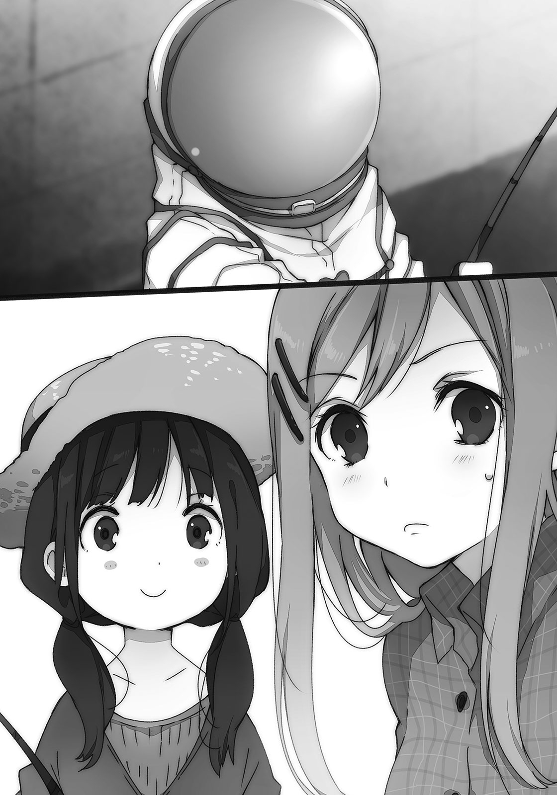疲れる。段々と日野が恨めしく思えてきた。当の日野は涼しい顔でたった今、魚を釣り上げていた。こちらにすっごい得意顔を向けている。あの顎の角度がむかつく。
でも逃げる口実も含まれていたとはいえ、本当に移動して釣り上げるあたりに経験の差を感じた。わたしには濁った池にしか見えないそこに、日野はなにかを見抜いているのだろう。
こっちはどうなんだろうと横目で観察する。
のんびり釣りに興じている姿を眺めて、景色との違和感と疑問を抱く。
「あんた、お友達、というか同胞？ 捜さなくていいの？」
「お腹が空きましたので」
堂々と言われると、哲学的な響きかと錯覚してしまう。
「ドーホーが無事なこと自体は確認済みなので、のんびり行こうと思います」
「連絡とかあったわけ？」
なんの気なく聞いてみると、返事に若干の間があった。
「まぁ、似たようなものです」
どこか思わせぶりだった。いやそもそも。
「連絡取れるなら、すぐ会えそうなものだけど」
「そうもいかない事情がありまして」
早口にそう答えた後は、なにかをうやむやにするように口数が減った。勝手気ままに喋らなくなるのはありがたいけど、急に態度を変えると気になる。といっても深く追及したところで、わたしの望む納得が見つかるとは思えない。見た目からして理解不能だし。
……それはさておき、わたしの釣り竿はうんともすんとも言わない。ちょっと退屈だ。
「なかなか釣れないもんね」
「まずそう思うことが大事なのです」
「はぁ？」
「なかなか釣れない、うまくいかない。それはすなわち、なにかを始めているということ」
そう語りながら知我麻社が釣り竿を持ち上げる。ピシャッと糸が華麗に水を切り、特になにも食いついていなかった。しかもそうやって格好つけた後、いそいそと釣り糸を池に垂らす。
やってみただけかい。
ついでに向こう側の麦わら帽子かぶったやつが「フィーッシュ」とか叫んでいる。
「あとはただよい未来を願って、釣り糸を垂らすだけです」
お腹を鳴らしながら、前向きな意見と共に釣り糸を見つめ続ける。
それまでの多少の電波的な発言に目を瞑れば、一理あった。他のことでもそれは言えるだろう。
他のことでまず思い出したのは、体育館の二階。少し蒸し暑い空気。
「………………………………………」
言ってみなきゃ、始まらないこともあるか。
「とまぁ、そんなことがあった」
「ふーん」
日曜日の話をしても、月曜日の安達はさして興味なさそうに相づちを打つだけだった。
乾いていて。落ち葉を適当に掃いてしまうようだった。
「どうでもよかった？」
ちなみに知我麻社は五、六匹ほど釣って帰って行った。あれ、食べたのかな。
「そうじゃないけど。……そういう聞き方はやめてほしい」
「ごめんごめん」
月曜日の昼休み、いつものように安達と体育館の二階でだらだらしていた。日野と永藤は姿を見せない。その方が安達は嬉しいのだと思う。わたしも色々気を遣わなくていいので楽だ。
日野たちとのつきあいと、安達とこうしていることは混じりづらい。そんな気がする。
その原因がわたしと安達、どちらにあるかはさておき。
安達はわたしが伸ばした足を枕にして寝転んでいる。本人曰く、昨日はバイトが忙しくて疲れているらしい。わたしは安達がバイトしていることも知らなかったので、少し驚いた。
でも休日に安達がなにをしているか、ということを知ったわけだ。
「安達ってどこで働いてるの？」
「教えません」
横向きに寝転んだ安達が拒否する。当たった頬がひんやりしている。
「なんでよ」
「教えたら来そうだから」
「行くけど」
「やだ。恥ずかしい」
安達が顔を伏せる。下りた横の髪で顔の大半が隠れてしまう。その髪を摘んで、手のひらを泳がせる。溶けてなくなるようにさらさらと手のひらをくすぐる髪の毛が気持ちいい。
「恥ずかしくないよ。働いているのって立派じゃん」
えらいえらいと冗談で頭を撫でる。嫌がるかと思ったけど、案外大人しく撫でられている。疲れているので反応が面倒なだけかもしれない。脱いだ上着は放り出すように卓球台に引っかけて、上履きも脱ぎ散らかしていた。そういうのを見るにつれ、自由だなぁと感じる。
安達が横になったまま、わたしの方に寝返りを打つ。安達の横顔がわたしのスカートにかかって、少し身をよじる。髪が足の上を躍ってくすぐったい。安達はそのままぼーっと、わたしのお腹あたりを見つめている。眠いのを紛らわすためか、まばたきが少し多い。
安達の鼻の先が小さく動く。それから、口もとを緩めた。
「こっち向きの方がいいかも」
「そう？」
視界が開けないから閉塞感を覚えそうなんだけど。
安達は少しだけ鼻を高くするように、顔を前へ出した。
「こっち向いて寝ていると、しまむらの匂いがするから」
「え、わたし体臭きつい？」
そんなこと指摘されたことがないので、本当なら思い切りへこんでしまう。
「そういう意味じゃなくて……じゃあしない」
じゃあってなんだ。そしてなぜ、安達はちょっと不機嫌そうに唇を尖らせる。
「しまむらには風情が足りないかも」
「風情？ うーん、風情ねぇ。それも今まで言われたことないなー」
風情なんて言葉、普段使う機会もないし。風雅とは無縁の田舎暮らしだから。
昼休みに入ってから二十分ほど経つ。お昼ご飯は食べていない。買いに行こうにも安達を膝枕しているので動きづらい。安達がこんな風に心を許すのは珍しいんだろうなぁと思うと、そのへんに転がしておくのもしのびなかった。
今見たばかりだけど、もう一度、時計に目をやる。もうすぐ昼休みが終わって、掃除して、その後は。意識は時計の針をほんの少し先取りして、そして。
「ねぇ安達」
「ん？」
寝転んだまま、喉を鳴らすような声をあげて反応してくる。髪を撫でながら、言ってみた。
「午後から一緒に授業受けない？」
安達が頭を上げる。腕で床を押して身体を起こした。髪を弄りつつ、わたしの目を覗く。
「どうしたの？」
「いや授業日数とか……んーつまり、一緒に二年生に進級した方が、楽しいじゃん」
同じクラスになるかは知らないけど、安達が後輩になるよりはぎくしゃくしない。
いや安達が後輩になるのは面白いけど、わたしが先輩になるのは違和感がある。
もっとも、正確に計算しているわけじゃないからもう間に合わないかもしれないけど。
前から一回くらいはこうして提案してみようと考えていた。サボるために教室から離れて、安達と出会って、そしてそんなことを言い出すのは順序が間違っているというかちぐはぐ感が強いけれど、そろそろ留年も視野に入ってきたのでのほほんとしていられない。
自分のお金で学校に行っているわけではないし。留年なんかしたら、うちの親はわたしを家の外に放り出しそうだ。放任主義のようなところはあるけど、それ故に厳しい。
安達は「あー、うん」と頬を掻く。ぐるりと、二階を見回す。
めいっぱいここの空気と景色を吸い込んだ後、こてんと、またわたしの足の上に倒れた。
気に入ったのだろうか。
「たまには、いいかな」
寝転んだままだと説得力に欠けるけど、安達は否定しなかった。たまにと言っているし気まぐれで、明日になったらまた来ないかもしれないけれど、なんとなく安心するものがあった。
熱の留まる体育館の空気を、少し換気できたような気がするのだ。
「じゃあさ。授業終わったら、どっか寄ろう」
そう言って、安達が顔を上げる。こっちは声の調子がやたらいい。
「予定なんかある？ 誰かとどっか行くとか」
「今日はないよ。というか大体いつもない」
「そうかそうか」
安心したようにまた寝転ぶ。足がちょっと痺れてきていたけど、ま、いいか。
でも安達とどこか行くのは、実は珍しい。大抵放課後になる前に帰ってしまうし。
「じゃあ安達のバイト先に行ってみよう」
「だからそれは嫌だって……」
ぐずるように、安達が寝返りを打つ。授業参観に親が来るのを恥ずかしがる子供みたいだ。逆の立場だったらわたしも嫌がるだろうし、気持ちは分かる。学校の中というのは独特な社会として機能していて、その空気を外に持ち出されると困惑してしまう。
だから、学校の中でずっと生きていければ、と思う人も中には出てくるのだろう。
そんなことはさておいて。
いい未来を釣りたい。そのためにはまず、釣り糸を垂らさないと始まらない。
あの釣り好き未来人に感化されたわけじゃないけど、釣り竿を安達に放ってみた。
「……今日のところの釣果は、上々かな」
足の上から一向に動こうとしない安達を見つめて、魚よりも犬を連想する。
気に入ったのだと思う、確実に。
安達と一緒に教室に入ると、クラスの注目を少し浴びた。安達が教室にやってきたことと、その安達とわたしが一緒にいることの両方だろう。一応どっちも扱いは不良だし。
安達はあくび混じりに教室を見渡している。もしかして自分の席がどこかを忘れたのだろうか。安達の席は廊下側の一番前で、わたしは窓側の三番目。正反対だったので、教室に入った後はすぐに分かれて着席した。座った後、次の授業の準備を始めて、そういえば安達は教科書を持ってきているのだろうかと思った。横目で見てみると、ごそっと出していた。
全部置いてあったらしい。教科書だけ用意して、頬杖をつく。それからすぐに窓側、多分わたしを見た。急だったのでそのまま目が合ってしまう。安達も少し驚いたみたいだ。
見つめ合う。目をそらしづらい。なにか用？ とお互いに十回ぐらいは目で尋ねている気がする。わたしが先に見ていたわけだから、それに答えるのはこちらが筋というものだけどそれをどう伝えればいいものか。教室を横断するような大声は出せるはずもなく。
教科書を指差してみる。これで視線の意味が伝わっただろうか。安達は机の上の教科書を見下ろして、少しの間そのまま眺め続ける。それを更に見ていたわたしは、様になる横顔だな、と思った。
顔を上げた安達が口パクで返事してきた。最初は読み取れなかったけど、二回目で理解する。
『教科書忘れたの？』
えぇい、お前と一緒にするな。と言えるほど、わたしもまじめではない。安達や周囲からすれば五十歩百歩の不良なので、そういういらない心配を招くのも原因は自身にあった。
そんなことをしていると先生がやってくる。教室に入ってきた先生はわたしと安達が教室にいることを、物珍しそうに一瞥した。しかしなにか言うことはなく、教卓の前に立つ。
授業が始まる。教室の中、安達と一緒に授業を受けるのはいつ以来だろう。一学期には安達もそこそこ姿を見せていたけど、当時はまったく気にも留めていなかった。けれど今、あのときとは違ってそれを意識していると、奇妙なものがあった。
また目が合ったら、どうしようと困ってしまうので極力、安達の方を見ないよう心がける。そうなると大人しく授業を受けて、先生が黒板に書いたものを目で追うしかない。
手と目が自動的に動き、役目のない頭が退屈を紛らわそうと延々、問いを重ねる。
安達との距離感を掴みきれないのは、わたしと安達のどちらかが安定していないのだろう。
板書を機械的にノートに写しながら、そんなことばかり考えていた。
「久しぶりの授業はどうだった？」
「日本史はいいけど、数学はもう、さっぱり分かんなくなってた」
「はははー、もう安達ったらー」
安達よりは授業を受けている回数が多いはずのわたしもさっぱりなのはどうしてだろう。
……まぁほら、わたしって文系だから。日本語ぺらぺらだし。
放課後、約束したので安達と一緒に学校を出る。安達の鞄は今日も薄い。
「しまむら、なんか注目されてたね」
出てきたばかりの教室を廊下の途中で振り返って、安達が言う。
そんなに意識していなかったけど、多少は見られていたかもしれない。
「いやいや、安達の方じゃない？」
「ううん、しまむらだった」
断言されてしまった。なぜ分かるのだろう。
「やっぱり美人だからかな」
安達が出し抜けにそんな評価を口にする。危うく、曲がるのを忘れて踊り場の壁に頭を打ちそうになった。慌てて仰け反ってそれを避けたら、今度は後ろに転びそうにもなる。
「なに一人で楽しんでるの？」
階段に足をかけたまま、安達が首を傾げる。あんたのせいでしょうが。
「美人なんて言われたの、これが初めてなもので」
綺麗とかなら、親戚にお世辞で言われたことはあるけど。
「そう？ ……彼氏とかは？」
「できたことないよ、そんなの」
ふぅん、と安達が反応に困る反応を見せる。無表情だけど、顔は少し上を向いて。
「みんな見る目がないね」
逆じゃない？ と思ったけど褒められたのだから口にはしなかった。
「ところで、どこ行く？」
話題を変える。階段を下りて下駄箱で靴を履き替えながら、安達が言った。
「ちょっとお腹空いたかも。昼ご飯食べてないし」
「じゃあ、なにか食べに行く？」
安達がお腹を制服の上から撫でる。目を泳がせて、ぐるりと一周した後、
「ドーナツでも簡単に食べたい気分かな」
「ドーナツ、となると駅が近いね。よし行こう」
前方を指差して校舎を出る。駅までは少し歩くけれど、反対はしなかった。
無言ながら並んで歩いて、安達が途中で別れることなく門まで来てしまったので、おかしいぞと聞いてみることにした。
「あれ、自転車は？」
「今日は乗ってきてない。修理に出してあるから」
涼しい顔をして答えているけど、安達の家から学校まではそれなりに距離がある。
「へぇぇ。歩いてでもくるなんて、不良なのに安達は偉いねぇ」
冗談で褒めると、安達は笑いもせずにわたしを見つめてくる。
身を硬くするように肩を縮めながら、
「……しまむら、来てるかなぁと思って」
ぼそぼそと言ってくる。いや、言ってのけた。
「う、うん」
面と向かって言われると少し照れるものがあった。
あなたに会いに学校へ来ています、なんて。告白じみている。
こっちのせいで安達も変に意識してしまったのか、若干赤面しているように見えた。いやわたしの目にそう見えてきただけかも。なんだこの空気は、肌にざらつく。
乾燥肌にでもなったような突っ張りを全身にこそばゆく感じながら、努めて無言で駅までただ歩いた。疲れているわけではないけど足が棒になったように、感覚を失いながら自動的に動く。時折視線を感じて横を向くと、安達がこちらを見ていて、すぐに二人で目を逸らす。
なにこれ。
気まずさとはまた違う窮屈さを維持したまま、駅の方へ流れる。学生服がちらほらと見える中で二階建ての安っぽい駅に入り、入り口の左側にあるミスドに入った。店内の席は駅の外からも、電車で遠くから帰ってきた学生で溢れんばかりにごった返して、わたしたちの座る席は一つも空いていない。その上、レジまでわんさかと人が並んでいる。
大人気だねぇと振り向くと、そこでようやく安達が小さく笑った。
「でも、この砂糖の匂いはいいよね」
安達が店内に充満するその香りを嗅ぐ。濃厚な甘い香りだけでお腹が膨れそうだった。
「虫が花に群がるのも分かる」
「うーん、嬉しくない例え」
わたしの例え話に安達が苦い顔となる。やっぱり、虫は苦手みたいだ。
そうしてお互い、やっと声が出てホッとしている部分があった。
「しまむらはどれ食べるの？」
いつもの空気が戻ってきて、安達の声や動きにも躍動感が生まれる。ここまで石像二つががんばって動いてきたという感じだったので、そうしたものが新鮮にすら思えてしまう。
「いつも悩むけど、エンゼルフレンチかな。あと妹のお土産に二つぐらい買ってくつもり」
目移りしても結局それに落ち着いてしまうことが多い。小さい頃に母親がおやつにドーナツを買ってきてくれるときはそれだったので、刷り込みのようなものがあると思う。
「しまむらもかぁ」
安達が考え込む仕草を取る。安達もエンゼルフレンチを買おうとしていたらしい。
「……ん？ なに悩んでるの？」
「しまむらと一緒になるから」
「べつに同じやつ買えばいいじゃん」
「んー……やっぱり、こっちにする」
安達が選んだのは下の列にあるハニーディップだった。人とかぶるの嫌いなのかな。
列に並んでいる間、ドーナツの載ったトレイを持ちながら安達が話しかけてきた。
「しまむらは明日も授業出るの？」
「三日坊主にならないぐらいはがんばるつもり」
「そっか」
体育館の二階に未練がないわけじゃない。またあそこに集うときもきっとある、けれど。
素っ気ない安達の返事に苦笑しながら、顔を覗き込んで。
「一緒にがんばってみませんか、安達さん」
芝居がかった調子で誘ってみる。安達は一瞬面食らったけど、すぐに笑い返してきた。
「それじゃあ、もうちょっとだけ」
意外なようだけど、安達も授業に抵抗はない。
お互い、理由があってサボっていたわけじゃないのだ。だから復帰するときも強い動機はなく、ただ、なんとなくまた教室で大人しくすることも自然だった。
長々と待ってようやく支払いを済ませて外に出てから、エスカレーター脇の壁に寄りかかって食べることにした。安達が包みを開いて、紙ナプキンで下をくるんでからエンゼルフレンチを渡してくれる。「どーも」とお礼混じりに受け取って、早速、チョコの部分をかじる。
「あめー」
朝ご飯を食べて以来、なにも口にしていないので強烈な刺激だった。酸っぱいものを食べたときとはまた異なる経緯で口もとがすぼむ。でも美味しい。至福の甘さが舌と歯の裏を巡る。
安達はドーナツを一口分ずつちぎって口に運ぶ。パンと同じ感覚で食べているみたいだ。見た目はそっちの方が上品だけど、ドーナツの場合は指が砂糖でべとつくのでそのままかじる方が楽だと思う。あ、でも口の周りは汚れないからどっちでもいいのかもしれない。
「そういえば昨日、日野が安達のことを聞いてきたよ」
食べながら伝え忘れていたことを言う。安達は食べる手を休めて、少し目を泳がせた。
「日野って、あの小さい子？」
「うん小さいの。安達とも仲良くしたいんだってさ」
「へー」
「……やっぱり興味なさそうね」
横を向いてぼそり、独り言。日野が仲良くなるのは前途多難かもしれない。
そんな安達と、わたしはどうしてそれなりに仲がいいんだろう。
自分の個性というものが把握できていないから、気に入られている部分も分からない。
「それより、しまむらって妹いるの？ さっき言ってたけど」
日野のことはすぐに流されてしまう。いいのかなぁと思いつつ返事した。
「うん、いるよ」
「歳いくつ？」
「小四。でもまだわたしの中では園児扱い」
母親の話では家と外で随分態度が違うらしい。学校では大人しい優等生として過ごしているみたいだけど、家の中ではあの歳になっても、実の姉に向けて必殺技を繰り出してくる。
そういう態度の切り替え方はちょっと、安達に似ているのかも。
「しまむら（妹）かぁ。やっぱり妹ってかわいいの？」
「生意気言わないときとか、キックしてこないときはね」
少しぼやかして答えると、「いいなぁ」と安達が顔をほころばせる。
兄妹になにか憧れがあるのかもしれない。となると安達は一人っ子かな。
それと関連しているのか分からないけど、安達がちぎったドーナツをわたしの方に差し出してきた。
「一口食べる？」
「ん、じゃあもらう」
安達の指先にあるのを、首を伸ばしてそのままかじる。蜂蜜でコーティングされた甘い味が口に広がって、歯がうずきそうになる。クリームとはまた違う、重厚な甘さが蜂蜜にはある。
「お返しにこっちも」
食べかけではあるけどこっちのドーナツを差し出す。安達がそのドーナツをじーっと見つめて、でも頭を動かそうとしない。なにか不満かなと思ってドーナツを一瞥し、気づく。
「あぁなるほど」
戻してちょっとかじる。クリームが表に出てきたところで「はい」ともう一回差し出した。
「こういうことでしょ？」
「……じゃあそういうことで」
妙な言い回しを置いて、安達がエンゼルフレンチをかじった。もくもくと咀嚼して、こくんと飲み込む。制服は着崩して着たがるのに、細やかな仕草は一つ一つ丁寧な印象を受ける。
そういうところを見ていると、安達の親は結構厳しいのかもと想像してしまう。
「食べたらどこ行く？」
口についた砂糖を拭きながら、安達に相談してみる。この駅は会社帰りのサラリーマンがお酒を飲むような店は多いけど、わたしたちの行くような店はほとんどない。スーパーとパン屋、それにモスバーガーが一階にあるけど食べ物を扱っている場所ばかりだ。
奥にはマツキヨがあるけど、わざわざ見に行くような用事はない。
「この駅、見るとこ少ないよね」
「ほんと、名古屋とは大違い」
「でも名古屋は人多すぎて疲れるから。私はここで丁度いいかも」
安達が笑いながらそんなことを言う。前半には同意して、残りのドーナツを口に放る。
安達がもそもそ食べ終わるのを待ちながら、ぼぅっとする。小学生の頃、通信簿に『ぼんやりした子です』とか書かれたとおり、わたしは時間が空くとすぐに意識が拡散する。
特定の場所にあることを好まず、五感がそれぞれに手足を伸ばしてだらける。イメージを持ちながら肩の力を抜ける、そういう瞬間が好きだ。
そこを踏まえれば、わたしは一人でいる方が好きなのかもしれない。
誰かと一緒にいれば、感覚は内側を向くことを許されなくなる。
「食べたよ」
安達が手を拭いて、先に立ち上がる。その軽そうな鞄が羨ましい。
「ん。じゃあ、えーと……行こうか」
行き先を決められないまま、歩き出す。足は自然、駅の入り口へ向かっていた。
これが一人で気ままに歩いているなら、なにも気にしないでふらついて、疲れたらそのまま家に帰ればいい。けれど今は安達がいる。安達に不快な思いはさせたくないと考えて、頭を使おうとする。そうしたことが延々続くと作業に思えるときも、稀にある。
だから人といることはほんの少し、苦痛を伴う。
理解できないこと、面倒なこと、関係のこじれに伴う修復、解体への労力。
だけどそうした負の面の隙間に、幸せは転がっている。
子供のときになくした小さなボールを、ふと見つけるように。
安達と出会ったことが、よりよい未来そのものであると信じたい。
なんて考えながら、駅の外に出て少し歩くと。
ぎゅっと。
「………………………………………」
声を出そうとしたけど、動転して出てこない。尻込みして引き返してしまう。
横に並んだ安達が、手を握ってきた。
いきなりだったので、つい立ち止まって振り向いてしまう。安達と目があうと、こっちの反応を窺うようにして落ち着かない。目が泳いでいた。
たとえばこれはわたしがぼーっとしていて、道路についふらふらと出てしまったとか、それを止めるために咄嗟に手を取ったとか。そういうことでは、なさそうだ。
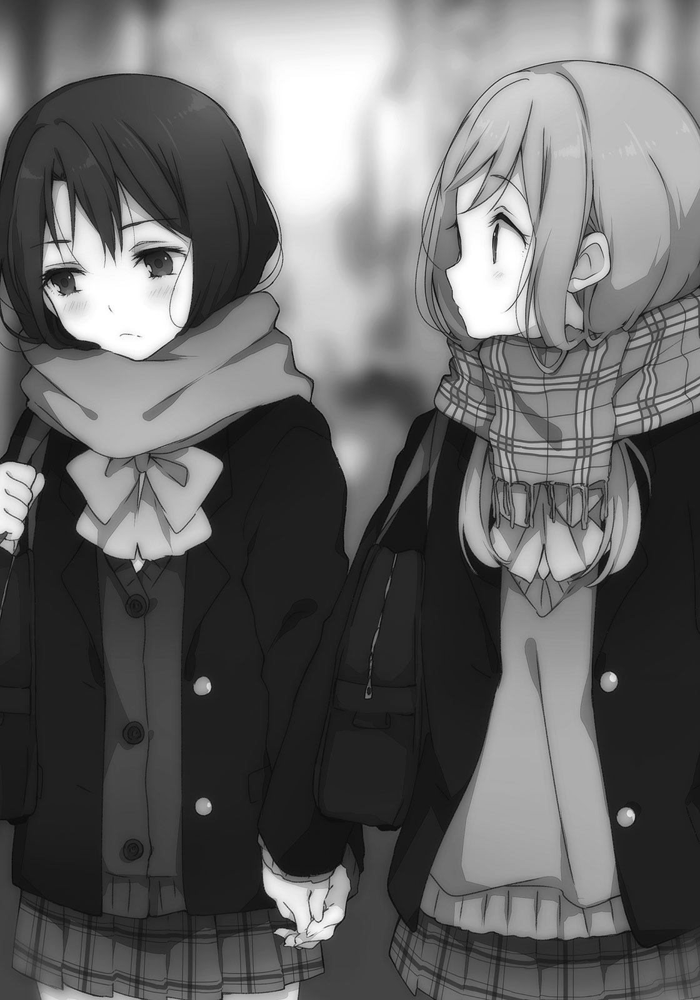「あ、嫌なら離す。すぐ離す」
安達が早口で念を押してくる。そんなに慌てられると、こっちも釣られて目が動いてしまう。
振り向いた駅の外観、脇のフェンス、立体交差に工事中の看板。目が次々に跳ねた。
「嫌というか、びっくりした」
ひったくりが鞄と間違えて、手を掴んでしまったかと思った。
もしくは強引なナンパとか。
知らない人に手を取られたわけじゃないと分かって、ホッとする。でも安達がどうして急に手を握ってきたのか、その諸々に対して、正直に言えば少し抵抗がある。
手を握るというのは、どうも、仲を過剰なほど強調する感じがして足下がぐらつく。
膝枕の方が抵抗ないというのも不思議だけど。
「やめようか？」
「……いや、いいよ。行こう」
振り払うことはできなかった。わたしにも色々、気を遣うことはあるのだ。
こっちからも安達の手を握って、歩き出す。意識して胸を張り、背筋を伸ばす。
気を抜くと周りの視線を避けるように、猫背になりそうだった。
前振りがないので驚いたけれど、こういうのは極端に珍しいってほどでもない。学校の中ではないけれど、町では女子同士で手をつないだり、腕を組んで歩いたりする子も見かける。ただそれは他人事だから流してみているのであって、当事者になると奇妙な感覚だった。
そもそも、だれかと手をつなぐ機会も小学校の運動会ぐらいまで遡らないとないわけで。
安達の手は柔らかくてふわふわしているけど、だからちょっと落ち着かない。
「安達って、意外と甘えたがり？」
「そんなことない、よ」
語尾がちょっと怪しい。本人もあまり自信がなさそうだった。
安達が道路の方を向きながら、わたしの手をきゅっ、きゅっと握ってくる。
その甘えるような仕草に、いたたまれなくなる。
「なんか、意外だ」
さっきも使ったばかりの意外という感想を重ねる。それぐらい不思議だった。
こんな未来、ドーナツを食べていたわたしはまったく予想もつかなかった。
「私にとっては別に、意外でも……ないけど」
そりゃあ、安達から手を握ってきたわけだし。そこが不明だと本当に困り果ててしまう。
そのまま歩いていると、手のことを意識しすぎて他のことに頭が回らない。
安達は、いつもこうやって誰かと手を握って生きてきたのかな。
今まで一緒に歩くことがなかったから、つなぐ機会も必然なかっただけかもしれない。
落ち着くのかな。誰かに触れたがる理由に、そういうものを求めている人もいる。
安達が実は女の子大好き、ってわけじゃないだろう……多分。
多分。安達の顔がなんとなく見られなくて、真っ直ぐ前しか向いていないけど。
でも安達がもし、わたしのことを大好きですと言い出したらどうしよう。
……マジでどうなっちゃうのだろう。
「しまむら、どこ向かってるの？」
「え？ 特に決めてない。安達はどっか希望ある？」
「しまむらの行きたいところでいいけど」
そういうのが一番困る。自主性のないやつが二人揃うと、押しつけあいになる。
わたしより安達の方がしっかりしていそうだから、なんとかしてほしい。これは困ったと、迷子の子供二人で知らない場所をさまよう心境だった。犬のお巡りさんはどこかなぁ。
安達の指が跳ねる。正確には脈のようなものを指先から、触れあう肌に感じる。その脈動する指を意識して、触れている指を動かすと反応が返ってくる。そうするとそれは、底に隠れるように消えてしまう。
釣りみたいだ。軽く警戒しながら、お互いが触れあおうとする。なにかを窺うために。
安達はわたしのなにを覗きたがっているのだろう。
話していないことは色々あるけど、隠していることなど特にないのに。
町の景色とか、他のことがどうでもよくなってくる。認識を破棄しないと、ただでさえ頭がいっぱいなのに情報過多で知恵熱にうなされそうだ。うわーうわーうわーと、叫びたくなった。
どこ行こう。このままお買い物？ うぅん、それはなんかすごい無理。
もういっそのこと、釣り糸に引っかけたままわたしの家まで連れていっちゃおうか。
そんなことを提案しようとしたときだった。
「しゅこー、しゅこー」
「のわっ」
昨日聞き飽きた例の鳴き声？ が背後から聞こえてきた。安達と一緒にくるくる回る。
振り向くと、予想通りに昨日の宇宙服が立っていた。背丈も変わらないし、昨日と中身は一緒だろう。世界から見れば狭くとも個人で歩けば決して小さくないこの町で、昨日に続いて出会うなんて。
鈍く輝くバイザーは青く、揺れ動くと水の星が巡っているようだった。
「こんにちは」
「あぁうん、こんにちは」
丁寧に頭を下げられてしまったので、つい下げ返す。
「見かけたので声をかけてみました、しゅこー、しゅこー」
「こ、声だった？ 今の」
困惑しながらの会話は胃に優しくない。ついでに気づいたけれど、安達がいつの間にか手を離していた。その腕を抱くようにしながら、わたしと少し距離を置いてたたずんでいる。
鼻がうっすら赤く見えるのは、照れているのだろうか。
さっきまで町の中を歩いていたのに、安達の意識がよく分からない。
「駅前を普通に歩いてんのね、それで」
「一張羅ですので」
他に着替えがないのだろうか。
こいつと堂々と話していると、世間の注目をすごく浴びそうだなぁ。ま、いいけどさ。
さっきまで手をつないでいて、その恥ずかしさをごまかすためか変に能動的だった。
ヘルメットに手をかけようとすると、知我麻社が慌ててしゃかしゃか後退した。わきわきと指を動かしている間は近寄ってこなかったけど、引っ込めたらぺったぺったと走って戻ってきた。そこまで拒否すると、是非とも取ってみたくなる。
知我麻社、一々漢字を連想するのが面倒な並びだからこの際、ヤシロと呼ぶことにするけど、そいつがわたしの指に顔を近づけてくる。正確にはヘルメットのバイザーが近寄る。
「あなたの指からは素敵な甘い香りがしますね」
くんくん、と鼻を鳴らしているのか定かじゃないけどヘルメットのバイザーを押しつけてぐるぐる回ってくる。花の蜜に群がる虫が早速やってきた感じだ。虫よりはマシだけどでも、そんなものかぶっていてよく匂いが分かるものだ。中身が犬人間だったらどうしよう。
バイザーにわたしの顔が映る。少し角度を変えると、安達も端に見つけた。
なんか、面白くなさそうな顔をしている。
「これはいいですねー、なんの香りですか？」
「ドーナツの匂いでしょ。さっき食べたから」
「どーなつ？」とヤシロが頭を傾ける。傾いたまま、わたしが持っている紙袋にヘルメットが向く。嫌な予感がして引っ込めると、ヤシロの両手がパンと音を立てた。そのまま放っておいたら紙袋に飛びかかられるところだった。
「なにすんの、なんとなくやると思ったけど」
「わたしのレーダーが反応しました。そこにどーなつがありますね」
「あるけどここ釣り堀じゃないから。取るなよ」
そもそも釣り堀だって無料ではないはずなのに、こいつ、お金支払ったのかな。
ヤシロが指を一本立てる。
「そのどーなつ？ を一ついただければ代わりに宇宙の秘密を一つ教えましょう」
「宇宙の秘密を何％オフにすればその取引が成立するわけ？」
なんでこいつにドーナツを恵んであげないといけないんだ……と最初は考えたけど、気づく。なにか食べるところに居合わせればそのヘルメットを外すだろう。素顔が見られる。
昨日から気になっていたので、それは魅力的な『釣り方』だった。
「……しょうがない、一個だけね」
「わー」
やる気の有無が分かりづらい喝采を上げる。両手を挙げる姿が妙に無気力に映った。
妹は一個あれば十分だろう。あんまりおやつを買っていくと、晩ご飯を食べなくなって母親に怒られるし。どちらを残すか悩んで、ヤシロにカスタードクリームを差し出した。
「これがどーなつですか。おぉ、おぉおおぉう」
感心しているのかな、本人的には。動物の鳴き真似にしか思えないけど。
そしてヤシロがヘルメットを外す、かと思ったら開けたのはほんの少しだ。そのできた隙間からドーナツをねじ込む。そのまま、もっちゃもっちゃと咀嚼する音がし始めた。気味悪がるのと、顔を見られなかったことへの失望が同時に波紋を描く。なんだこいつ。
「これはいいものですねっ。甘い、甘いっ」
対照的にヤシロはご機嫌になる。ぐねぐねと全身が揺れ動いて喜びに浸っている。
「ドーナツを知らんって、変なんてレベルじゃないんだけどね」
しかしここまで手放しに喜ばれると悪い気はしない。
「もっと甘いのありませんかね」
ちらりちらりと、催促の目線をヘルメットの奥から感じる。腰に手を当てて拒否した。
「自分で買え」
「お金などありません」
どこに胸を張る要素があった。
「あんたってどうやって生きて……」
「しまむら」
名前を不意に呼ばれて、びくりとなる。
声が硬質だったから。
安達が鞄を肩にかけ直して、道路の向こう側に目をやる。
「自転車取りに行くから」
「ふぇ？」
いや自転車は乗ってきてないんでしょ、と学校内のことかと混乱してしまう。
冷静に考えれば、修理に出した自転車を取りに行くということなんだろうけど。
「先に、じゃあ、また明日」
小さく手を振って、安達が一人で帰路に就いてしまう。「おーい」と引き留めたけど、もう一度振り向いて、手を振って離れていってしまう。
どこ行こうとか話していたのに、急な心変わり。
「……もしかしてなんか、怒った？」
まさか放っておかれて拗ねたとか？ いやそれこそ、まさかでしょ。
もしくは照れて、ジッとしていられなかったのかもしれない。どっちだろう、どっちかなのかな。えぇい、分からん。さっぱり分かんないぞ、安達。
安達を追いかけようか迷っていると、ヤシロがもちゃもちゃしながら話しかけてくる。
「今起きたことを宇宙の秘密の代わりに教えてあげましょうか？」
「……言ってみ」
「どーなつをもらえなかったから怒ったのですよ」
「帰れ」
シッシと手を振る。こいつをドーナツで釣ったら、また不透明なものが増えてしまった。
安達のことだから明日になったら引きずっていないと思うけど、でも。
はぁーっと。額に手をやって、溜息が漏れる。
「やっぱり人付き合いって、難しいし、面倒かも」
「分かる分かる」
「なにがだよ」
かくして町に天災のように、変なのが一人増えた。
この自称未来人が今後のわたしの人生を大きく変える……かは分からない。
そもそも、人生はなにがあっても変わらない。
未来を誰も知らないのだから、変えようがないのだ。
しまむらとキスをする夢を見た。
起きた後もしばらくは複雑なものが去来し続けて、自己嫌悪に髪を掻き乱す。
うーうー唸って、言い訳めいたものが浮かぶ。
別に私はそういうあれじゃないのだ。しまむらだってきっと違う。だからあんな夢を見て、しまむらに申し訳なかった。知られたら距離を置かれてしまうだろう、固く口を閉ざさないと。
しまむらの唇の感触は存在しなかった。分かるはずがない、触ったこともないのだから。でもその前に指を絡めたところの柔らかさはしっかり再現していて、その生々しさに自分の潜在的な願望を覗いてしまったような居心地の悪さがあり、胸がざわざわと落ち着かない。
入ったこともないしまむらの部屋にいて、一緒にテレビを見ていた。壁に背中をつけて座るしまむらの足の間に私が座って、背中を預けて。しまむらは見たことない穏やかな笑顔を私だけに向けて、そんな顔が間近にある。そしてふと振り向いて、しまむらと。一つ一つ思い出して、ますます頭がわーっとなる。いやな汗が噴き出してきた。
多分、しまむらともう少し仲良くなりたいことの表れなんだろう。他の友達より少しだけ特別な、しまむらとの距離感がほしい。たとえばそれは、他の人がしまむらと呼ぶ中で私だけが下の名前で呼ぶような。そういう、ちょっとした特別がほしいのだと思う。けど今更しまむら以外の呼び方をしたらお互いに違和感が酷いだろうし、そもそも下の名前ってなんだったかなと頭を捻っても思い出せない。
しまむらは、しまむらだった。多分ずっと、私の中ではしまむらなのだ。
意味分からないけどそこに安心感がある。ふと気が抜ける響きがある。よいものだ。
だからそういうあれでは決してない。キスも大した意味はない。
「………………………………………ないない」
絶対にしたくないとまでは言わない。でも、絶対にしたいとも思っていない。
しまむらを中心に半径五キロ以内に誰もいなくて、そのしまむらは深い眠りに就いていて、今から二十四時間は絶対に起きないと全知全能の神が保証してくれたら二十三時間あたりが経過したところで退屈に耐えきれなくなって、一度ぐらいはやってみるかもしれない。
それぐらいだ。それぐらい、こう、興味ないと言いたい。ないってば。
「あれ、どんな状況でも、やってみるという発想の時点でおかしい？ どうかな？」
でも逆にしまむらからキスしたいと言い出したら、私は多分拒まない。
戸惑うし怯えるかもしれないけど、抵抗はないように思う。
やっぱりそれはなにかおかしい気がしてならない。
いくら頭を抱えても、その重さを支える足しになっていない。
でも何度も念を押すようだけど、私はそういうあれじゃない。
私は、しまむらに優先されたいだけだ。
しまむらが友達という言葉を聞いて、私を最初に思い浮かべてほしい。
それぐらいの、多少の独占欲めいたものがあるのは認めている。
実際のところ、しまむらが私をどれくらいの友達だと考えているかはずっと気になっている。他の友達となにも変わらないのか、それとも少しは特別に意識してくれているのか。しまむらは自分を語ることも、人を語ることもあまりないから察することがとても難しい。
しまむらは私のことがよく分からないらしいけど、お互い様だ。
見て分からないのなら尋ねるしかない。
しまむらはどんな感じに、私のことが好き？
そんなこと、面と向かって聞けるものか。好きじゃなかったらどうするんだ。
板書を機械的に写す傍ら、暇な頭が延々とそんなことを考える。主にしまむらとの距離感についてだけど、他に悩むことも今のところはないのだから、偏るのも仕方ない。
三時間目の数学はどうせまじめに授業を聞いても、基礎を怠っている私にはまったく理解できないのでノートに書き写す作業がより退屈になっている。時々横目で一瞬だけ、遠いしまむらの席に目をやるとこちらも少し眠そうな顔でシャープペンを握っている。
授業を受けるようになると分かるのが、しまむらと話す機会の少なさだった。授業中は当然のように無理だし、合間の短い休み時間も距離があるからなんとなく行きづらい。教室内を横断するのは、少し大げさな気がしてならないのが原因だ。
それから掃除時間。私と担当している場所が違うから、ほとんど顔を合わせない。残るのは昼休みと放課後ぐらい。でも昼休みのしまむらは大抵、日野と永藤の二人と一緒に行動する。
あの二人が一緒にいると、私は一歩引いてしまう。遠慮するわけではなくて、どうもそういう空気になじめない。色んな人と柔らかく接して、良い笑顔を向けるという行いが性に合わないのだ。そこまで気を遣わなければいけないなら、人付き合いは必要ない。
しまむらは、私のそういう空気を読んでか強要はしてこない。粘ることなく、さっと離れる。そこで他の友達と別れて私の側にいてほしい。と、思うことも時々だけどあったりする。
昼休みは潰れて、残るのは放課後。しまむらは一人でさっさと帰ってしまうことが多い。最近はサボった分の授業に追いつこうと、家で勉強しているそうだ。しまむらはなんだかんだ、根が真面目なんだと思う。そうなると、私も家に帰って勉強することになってしまう。
今日は変な夢を見てしまったせいか、余計に意識しながらも近づけないでいる。
大体の日はそんな風に、接点なしに過ぎていく。基本的に、しまむらから私をなにかに誘うことはない。授業を受けようと誘ってきたのが例外で、だからあれは本当に驚いた。
しまむらと休日に会ったことはない。しまむらと出会うのは学校で、外に出ても制服を着たときで、そういう友達なのだという感覚がいつも制限をかけていた。
そうなると、なにか言いづらい。私の方から、一方的になってしまいそうだから。
寄りかかったら受け止めてはくれるけど、自分からは誰にも寄っていこうとしない。
それが私の抱いているしまむら像だった。
想作新中華料理とはなにか。
私に聞かれても分からない。そして経営者に聞いても多分、さっぱり分かっていない。
バイト先の看板に書いてあるそれは、謎の一言に尽きる。
私たちの暮らす地域だけらしいけど、台湾系の大衆中華料理屋が町の中に多い。経営者や店員も台湾人ばかりで、なかにはまだ日本語をほとんど喋れない人もいる。店の外観は決まって黄色がふんだんに使われていて、ランチが安く、から揚げが極端に大きい。
そうした店が私のバイト先だった。している理由はなんとなく自分は有意義に過ごしていると思えそうだったから。なにもしていない時間ばかりになるよりはマシだったと思う。
放課後だけでなく、日曜日もなにも予定がなくてこうして働いているのはどうかと思うけど。
各テーブルに置いてあるメニュー表は使い回しらしく、どの店も掲載されている料理の写真が一緒。頼んだものとまったく見た目の異なる料理が出てくるのは日常茶飯事。一致する方がよっぽど希少なぐらい。それとこういう系列の店は漫画の単行本が置いてあるのだけどそれが巻数も、内容もばらばら。天井には安っぽい竜の飾りがあって、微妙な異国情緒を醸している。
そんな店でバイトはいいけど、この格好。なんで私だけ、チャイナドレスを着て働かないと行けないのか。梅笹の刺繍がされた水色のドレスは、ロングにスリットがしっかり入っていて足を隠せていない。制服の方が足出してるじゃない、と言われるとそうなんだけど、また違う気恥ずかしさがある。光沢のせいだろうか。他の女性店員が着ていないのになんで私だけ、とおばちゃん経営者に理由を聞いたら『若いから』だった。うーん、分かりやすい。
夏休みから働いているので大分慣れたけど、ふと冷静に恥ずかしくなるときも多々あった。
表の駐車場には既に車が一台停まっている。でもまだ五時になるまで二分あるから、店の人は誰も動こうとしない。時間きっちりにしか絶対に動こうとしないのはお国柄ってやつだろうか。私もその白い乗用車を店の入り口から眺めて、今日は忙しくないといいなと密かに願う。
五時丁度になって、同僚のおばさん（勿論台湾人）が店の外に出て行く。入り口に置いてある準備中の大きな看板を退かして、ランプを点灯させた。それを見て、白い車の扉が開かれる。
外は既に日が沈みだして薄暗く、街灯なんてしゃれたもののない田舎では人影をはっきりと区別することができない。カタコトの日本語しか喋れないおばさんが戻ってきて、その後に四人家族が店へと入ってきた。相手もほとんど見ないまま、習慣として挨拶する。
「いらっしゃいま……あ」
それが視線の動きと共に止まり、中途半端に終わる。
中年のおじさんおばさんの後ろに続いて入ってきたのは、しまむらだった。
あっちもすぐ、こちらに気づく。「あ」と、同じように口を開けた。
バイト先、教えてないはずなのに。偶然だと思うけどいきなりで、面食らう。
それからすぐ、私の格好も含めてか興味深そうに見つめてくる。だからすぐ、俯いた。
「へー、へぇぇー」
上から下まで眺められている感じ。相手がしまむら以外だったら怒ってしまいそうだ。
おばさんの方が振り向いて、しまむらに話しかける。
「友達？」
「うん、学校の」
しまむらが気持ち早口で短く説明する。親が相手だからか少しぶっきらぼうだ。
そうした些細な変化に気づくと、なぜかほんの少しだけ嬉しくなる。なんでだろう。
一緒にいる二人はしまむらの両親だろう。しまむら（父）は少し丸くて温和そうな雰囲気が漂う。しまむら（母）は足がすらりと細いけど肩幅は広くてごっつい。鍛えている感じだった。
それとしまむらの後ろにくっつくように立っているのが、この間の話にあったしまむら（妹）と見た。目が合う。チャイナ服が物珍しいのか、ちらちらと目が動いている。
「へぇぇ、チャイナ。安達、こういう店でバイトしてたの」
「……四名様、こちらにどうぞ」
他の店員の目もあるから、まずは席に案内する。角のテーブル席に案内すると、しまむらの両親が左側、しまむらとその妹が右側に並んで座る。しまむら妹はしまむらにぴったりくっついていて、早くもメニュー表に手を伸ばしている。仲は良さそうだった。
水を運んで注文を取る前に、こちらを見つめるしまむらにぼそぼそと言う。
「だから恥ずかしいって言った」
いくら引っ張ってもスリットから覗ける足は隠しようがない。
「いいじゃん、似合ってるよ」
悪戯心に満ちた、躍動感のある笑顔を私に向けてくる。しまむらがそうした無邪気な表情を浮かべるのは珍しいけれど、褒められている気がしない。言ってみただけって感じ。
「安達ちゃんっていうの？」
しまむら母に話しかけられる。視界の端でしまむらの口もとが潰れるのが見えた。
「はい」
「ふぅん、友達かぁ。ほら高校生になるとね、あんまり家に遊びに来ないからどういう子がいるとか分かんなくなるのよね」
「はぁ」
「いいよ、気にしないで。聞かないでいいから」
しまむらが迷惑そうに手を振って母親を遮ろうとする。気持ちはよく分かった。
「へぇー、へぇー、同じクラス？」
「いいから」
より鬱陶しそうに、母親に手を振ってやめろとしまむらが訴える。
「なによぅ」と母親は笑って、娘の不満をまともに取り合おうとしない。私の家でも見慣れている気がした。特に中学生の頃、自意識が強くて色々と確執めいたものもあった。
でもそうして慌てるしまむらを前にしていると、こっちは少しだけ冷静になった。
「えっと、今日は、あの」
なんでこの店に来たの、と聞いてみたいけど上手く言葉が出ない。そうしているとしまむらの方が察してくれたらしく、くみ取って返事してくれた。
「あーっと、市の雑誌に割引券がついていたから、一回行ってみようって話になったの」
「あぁ、そう……」
余計なことを。ここの店長を少し恨む。お互いに恥ずかしいじゃないか、こんなの。
今日のしまむらは髪を後ろで纏めている。それだけでいつものしまむらより落ち着いた雰囲気がある。それとも妹と一緒に並んでいるから、姉っぽさを感じてしまうのだろうか。
当たり前だけどしまむら妹の髪は染めていなくて、姉と異なる。黒色で、しまむらも染めなければ同じ色になるのだと思う。こっちも似合うんだろうな、と思った。
「ご注文が決まりましたらお呼びください」
なにはともあれ、逃げる。しまむら母のせいで忘れかけていたけど、今の私の格好はチャイナドレスなのだ。こんな非日常的な格好をしまむらの目に晒し続けるのは耐えがたい。
しまむらなら同級生に話して広めることはないと思うけど、そのしまむらに知られたことが一番恥ずかしい。めいっぱい距離を取って入り口の近くまで離れた。そこで同僚のおばさんに「トモダチ？」とカタコトで話しかけられたので、小さく頷いておいた。
そう、しまむらと私は友達だ。そう名乗って、誰も否定はしないぐらいの間柄だ。
しまむら妹がしまむらの開いているメニュー表を覗いて、「フカヒレたけー！」と目を丸くしてはしゃいでいる。「頼むなよ」と父親が釘を刺しているけどまったくその通り。注文されてもそんなものは出せない。メニュー表が使い回しである故の弊害である。
でも、仲良さそうだなぁ。しまむら一家を眺めていてそう感じる。私の家は関係が淡泊というか希薄で、接点が非常に少ない。家族だから同じ家にいる、というのは一見すると当たり前だけど理由がそれだけだと関係がスカスカになる。しまむらが少し羨ましい気もした。
だからと言っていつまでもこうしてほのぼのしていたくない。むしろ早く帰ってほしい。もしくは私が帰りたい。何度もドレスの裾を引っ張ってしまう。せめて格好が他の人と同じように普段着ならいいのに。うわ、しまむらがこっち見た。思わず目を逸らしてしまう。
しまむらからすれば単に同級生に恥ずかしがっているだけにしか見えないだろうけど、実は他にも理由がある。二日前に見た夢を、こうしてしまむらの顔を見て思いだしてしまっていた。
何回でも自分が納得するために言うけど、あれはやましい気持ちの産物なんかじゃない。しまむらとの距離感を測りかねているだけで、そうした悩みが夢に出た、それだけなのだから。
じゃあ正面向いてしまむらに応えろ、と言われたら今は難しいけれど。
これはちょっと例外すぎるし、不意打ちすぎた。
しまむらと二人だけの秘密を共有する、と前向きに捉えればこの時間もある程度は許せるかもしれない。いやでも、チャイナ服は辛い。やっぱり肌がちりちりする。
注文が決まったのか、しまむら母に「安達ちゃん」と手招きつきでご指名される。
「ホライッテ」とカタコトつきで叩かれる肩は、足と比べて随分軽い。
目を瞑ったまま前を向いて、その重苦しい足を前へ出す。
いらない恥をかきに行く。いやそもそも、恥にいるものなんかないのだけど。
翌日、私は体育館の二階にいた。当然、こんなとこで授業なんかやっていない。
簡単に言えばサボった。しまむらに誘われて一週間ぐらいまじめに教室に通っていたから、週休一日というところかな。壁によりかかるように座ったまま、ぼけーっとする。
目の焦点を合わせないので景色が何重にも見える。そういうのが落ち着かない人もいるらしいけど、私としてはぼーっとしている感があって妙にはまる。そうして身動きしないでいると、呼吸やまばたきも忘れたように色んな部分がそぎ落とされて、身軽になるみたいだった。
今は二時間目の授業の途中だと思う。体育館の一階からもボールの弾む音が聞こえてくる。目を擦ってから壁に張り付き、こっそり下を覗くと男子たちがバスケットボールを追いかけていた。やる気のない組は壁際に集まって座って談笑している。もし私が男子なら、そっちの側にいるのだろう。しまむらも同じく。見つかると騒がれそうなのですぐに首を引っ込めた。
脇に置いた鞄に手を入れる。携帯電話を出してみたけど、特にかけることもなく、メールも来ていなく。適当に弄って、すぐにまた戻す。電話が頻繁に鳴るような性格はしていない。
それでも手持ちぶさたのときについ弄ってしまうのが、現代っ子なんて呼ばれる理由かも。
頭を壁に当てたまま、小さく息を吐く。
嫌なことがあったわけじゃない。ただ昨日のことがあって、お祭り気分とでもいうんだろうか、どこか浮いた感覚があって、そのふわふわに包まれていると教室でジッとしている気になれなかった。思えば最初に授業をサボったのもそんな理由だったかもしれない。
一週間ぶりに吸い込む、体育館の二階の空気はどんよりとしている。吸っているとどんどん身体が重くなって、ここから離れられなくなる。怠惰の味が広がって、噎せそうになる。
禁煙した人がまた煙草を吸うと、こんな気持ちになるのだろうか。吸ったことないけど。
少しの蒸し暑さと体育館シューズと床の擦れ合う音。包まれて、瞼が重くなる。
微かな眠気に頭を揺らされて、ふと口がもごもごと動く。
「……噓かも」
ここにいる理由は朧気だけど一つあった。
教室に姿がなければ、しまむらがそれに気づいてここを覗いてくれるんじゃないかと。拗ねた子供が突飛な行動を始めたり見つからない場所でジッとしたりして、誰かに心配されることを期待する心境。それと似たものがあることを多少は認めていた。
それとしまむらもここに来ていないかなぁと思ったのだ、なんとなく。
いないけどさ。
私だけだろうか、昨日を特別に思っているのは。
私としまむらの温度差を感じる。そりゃあ、そうなんだけど。こうも一方的に盛り上がっていると、自分のことが心配になる。大丈夫なのか、私は。
行動の基準が『しまむら』になってきている自分を危惧する。
これじゃあまるで片想いだよ、と目もとを手で覆いながら呆れた。
外が昼休みを迎えた頃、階段を上ってくる足音が聞こえてきた。
気怠い空気を全部吐き出して、座り直す。入り口を確認したがる顔を無理に前へ突き出す。ぺたぺたと上履きの鳴らす音。階段は何段あったかな、なんて考えていると。
「安達」
びくんと耳が跳ねるようだった。首を引っ込めて恐る恐る、呼ばれた方を見上げる。
そうした驚きを表に出さないよう声と顔を押さえながら、話しかけてきた相手であるしまむらに応える。自分の期待通りにやってきてくれたことへの嬉しさと、後ろめたさを感じながら。
「なに？」
「たまには一緒に学食でもどう？」
しまむらの方は態度もいつも通りで、昨日のことなんかなにも引きずっていない。でもここに来るということは、少しぐらい思うところはあるのかも、と都合よく捉えてしまう。
「うん、いいけど」
鞄を抱えて、床を手で押して立ち上がる。スカートを払ってから、しまむらの方を向いた。
いつも通りのしまむらだ。私服じゃないし、髪も結んでいない。
私が着崩していた制服を直すのを待ってから、体育館の外へと向かう。
歩きながら、そういえば挨拶もしていないと思った。よくあることだけど。しまむらと顔を合わせるときに挨拶した方が少ない。別れるときもいい加減で、あっさりしたものだった。
「ちょっとまじめに来たと思ったら、これだ」
階段を降りながらしまむらが急に言い出す。口調が普段とまったく異なっていた。
「だれかの真似？」
「担任。今日はどうしたって、わたしに聞かれても困るよ」
しまむらが肩をすくめる。しまむらに聞いた、ということは。
つまり、担任はしまむらと私が仲良いと思っているらしい。
しまむらに一番に聞いちゃうぐらいの友達だと。
……ふぅん。
「そんなに面白かった？ あんまり似てないと思ったんだけど」
しまむらが不思議そうに目を丸くする。
「……え？ なにが？」
なにを指摘されているか分からないので困惑すると、「それ」と顔を指差してきた。
そんなに面白がっている顔になっていたのだろうか、私。ぐにぐにと頬をこねる。随分と盛り上がっていた。なんでと原因を考えるまでもなくて、猛烈に恥じた。
「別に恥ずかしがらなくてもいいのに」
「無理言わないで」
私が無防備に笑ったことを恥ずかしがっていると思っているらしい。
しまむらはあんまり分かっていない。いや、分かっていたらもっと困るのだけど。
頬をずっとこねながらしまむらの後ろを歩いて、一階校舎の外側から入れる学食に向かう。
実は学食を利用するのは初めてだった。二年と三年の溜まり場みたいになっていて、一年生は入りづらい空気になっていることもあるし、なにより昼食を毎日取るほど規則正しくもない。
注文のときに慌ててみっともなくならないようにと移動の途中に観察していると、食券制らしい。学食の入り口の脇にある機械の前に人が並んでいる。私たちもその列に続いた。青い柱に隠れるような列の隣側にももう一つの行列があって、先頭に目をやると購買があった。
しまむらはいつもここに買いに行ってたのか。一度も行ったことないから知らなかった。ちゃんとミネラルウォーターの売っている自販機もある。一緒に売っている黄色い炭酸飲料は売り切れのマークが赤く光っていた。
列に並んでいる間、しまむらと私の間に会話はない。周りの学生のうるささに少し気圧されて、息を潜めるようだった。こういうときになにか話したら、話せたらいいのかなと思うけれど、なにも思いつかず。しまむらの細い首筋をじっと見つめていると目があいそうなので、反対側を向くしかなかった。
校舎の窓に跳ね返り、眩しいほどの日差し。吸い込んで輪郭の発光する雲。雲の切れ間に覗ける薄い青色。後ろから私を射抜くような喧噪と活気、そして微かな料理の匂い。
そんなありふれた昼間の景色を眺めて、長い待ち時間を潰すしかなかった。
そのやっかいな時間を延々と耐えてようやく、私たちが食券を買う番が訪れる。先に小銭を用意して握りしめていたしまむらは日替わりの中華丼を選ぶ。昨日も中華飯を食べていたけどと思い出しつつ、私も同じものにした。中のカウンターで食券と引き替えに受け取って、脇の給水器でコップに水を汲む。後は席を探すだけ。青い長机のどこにでも人の姿がある。
しまむらと一緒にぐるぐる中を巡って、端っこに丁度空いている席を見つけた。向き合って座り、汲んできた水を最初に飲む。生温くて、微かな鉄の味が舌に残る。
家の水道水と同じ味だった。これよりはミネラルウォーターの方が落ち着く。
コップを置いた後、箸を持ったところで向かい側から視線を感じる。
顔を上げるとしまむらが「へへっ」とか笑い出したので、「なに？」と手を止めて聞いてみる。
「昨日の安達かわいかったなぁと思って」
それは私を赤面させるのに一番効率的な『かわいい』だった。
しまむらがにーっと、珍しく歯を見せて無邪気に笑っていることも含めて直視できない。
せめてもの反撃にと、言い返す。
「しまむらもかわいいけど」
「え？ いやわたし、なんにもしてないしいつも通りだけど」
だからいつもかわいい。しまむらはそう考えず、冗談の類いと思ったみたいだ。しまむらはなぜか、私の方が美人だと思っているらしい。それは大きな誤解と言える。
私からすればしまむらの方がずっとかわいい。でもそんなことを真剣に訴えていたら変な空気になりそうなので、あまり大まじめに主張することはなく流す。黙って俯き、箸を動かした。
「また今度食べに行こうかなー」
「やめて。やめてください」
手を横に振って本気で拒否する。しまむら家族が常連になるなら、私は別のバイトを探す。
「冗談。わたしも家族と一緒に行くのはちょっとね」
「だと思った。なんか恥ずかしいよね、家族見られるの」
「まったくだ。いただきます」
しまむらが手を合わせたので、私もそれに倣う。こんなこと、最近はほとんどしていない。家で食べるときは大抵一人だから、つい忘れがちになってしまう。
そうして二人で食べ出すと、また会話が途切れる。昨日、店に来たしまむらは食事中も家族と談笑していたけど、そういう空気は私たちの間に生まれそうもない。やっぱり家族は特別だ。
私もそういう特別的な間柄になりたいなぁ、と思うのだけれど。
つまり親友とか、恋人とか？ いや恋人はないけど。ないのかな。ないよねぇ。
もそもそとお箸を舐めるように食べながら、考える。
実際のところ、しまむらと付き合うっていうのはどういうことなんだろう。
私たちの今の歳でだれか男の子と付き合っても、結婚することもないし家庭を作るところまでいかないと思う。それなら別に男女がつがいでくっつく必要なんかなくて、そうなると女同士というのもこの時期に限っては別段、問題がないような気もする。ないのか問題。
いやいや、あるに決まっている。自分が納得できても世間は変な目で見るだろうし、しまむらがそういうものを受け入れるかもまったく別の問題だから。でもそれは世間とか、しまむらとか外側の問題であって、内側、自分自身については問題ないということなのだろうか。
いやぁ、あるだろうと真剣に頭を悩ませてみると、一つ思いついた。
そういう価値観を引きずって大人になることがあり得る。そうなると子孫の繁栄に支障を来すことになる。私だけだから別にいいんじゃないの、ということはあるけど一つの例外が現れれば、じゃあ私もと続いて大きなうねりのようなものが生まれてしまうかもしれない。そんなにいるか分からないけど、あったら世の中は大きく困ってしまう。だから例外というのは怖い。
なるほど。
「………………………………………」
私はそんなにしまむらのことが好きなのかな。
眺めてみる。どんぶりで顔を隠しながら、しまむらを盗み見る。
染めた栗色の髪が動きにあわせて流れる。私より少し念入りな化粧と、気怠そうな目もと。慎ましやかに動く口。目がいくのはしまむらの顔ばかり。特に口もと。
かわいいなぁと感じる。以前はあまり注目していなかったのに。
ふと意識し出すと、どれも別物に思えてくる。
ぽーっと見とれそうになって、いけないと首を振って散らす。
そもそも、そうした背景をなかったことにしてふと考える。
なぜ、しまむらなんだろうと。
「お、しまむらとあだちー」
いきなり変な風に名前を呼ばれて、どんぶりを落としそうになった。慌てて置きながら顔を上げると、同じどんぶりを持つ二人が側にいた。しまむらが「お」と反応した後、二人は当たり前のように隣に座ってきた。小さいのが日野で、大きいのが永藤だったはず。日野の方が私の横に陣取って、「つーか、来てんじゃん」と話しかけてきた。
「え？ あ、うん」
最初は要領を得なかったけど、すぐ合点がいく。私は教室に出ていなかったのだ。担任の出席簿にも欠席扱いされているはずだ。なるほど、と納得したけど自然に食事に加わるこの二人はなんなんだろうと思った。
「えぇと……さん」
斜めに座っている永藤がぼそぼそと話しかけてくる。そんなに内気には見えないのに。
「安達だよ。名前忘れたけどぼそぼそ喋ればごまかせると思ったろ」
日野が箸の先端を向けて指摘する。あぁ、そういうこと。永藤が「ははは」と棒読みに笑う。
「なんでもいいじゃない。で、安達さん」
「なに？」
「おはよう」
永藤が穏やかに口もとを緩める。ここで挨拶か、と思ったけど会ったらまず挨拶、なのだろうか。正しいけど空気を読めている感じがしない。
「……おはよう」
しかしなんだろう。
賢さの溢れ出すような容貌と立ち居振る舞いなのに、妙に抜けている感じがするのは。
「今来たの？」
私が脇に鞄を置いていることに永藤が気づく。私は「いやサボってた」と正直に答えた。
「へぇぇー」と日野も一緒に反応する。それがどういう感想を含んでいるか、よく分からない。
「というか珍しいじゃん。大概お弁当なのに」
しまむらが日野たちに話しかける。日野が箸を振って答える。日野は、なにか反応するときに手元も一緒に動かすのが癖みたいだ。落ち着きがないというか、元気というか。
「今日はママンが寝坊したから」
「私はお弁当のおかずになりそうなものがなかったから」
永藤の方は妙な理由だった。自分でお弁当を作っているのだろうか。
日野が私の方を向きながら説明する。箸は永藤に向いていた。
「こいつの家、精肉店」
「へー」
短く反応する。会話が繋がっている気がしないのだけど。
「この間寄って、胸の肉売ってくださいって言ったら殴られたんだぜー。酷い店だ」
「客じゃないなら殴っていいってパパンに教えられたのよ」
それはそれで極端な教えだ。人を殴ったことのない私よりよっぽど不良っぽい。
「そうだしまむーらさん、一口交換しないかい」
日野がにんじんを箸で摘みながら提案する。日野も私たちと同じく中華丼なのだが。
それにしまむらと交換とか。とか。
「同じの頼んでるんだけど」
「まーいいからいいから」
と言いつつにんじんをしまむらのどんぶりに置く。
「にんじん押しつけたいだけじゃん。こら、永藤も便乗するな」
永藤が黙々としまむらのどんぶりににんじんを運んでいる。私もやった方がいいんだろうか、と一瞬考えてしまう。しまむらがこっちを見て、苦笑いをこぼしてきた。
私も苦笑して、微妙な反応となる。
こういうのも嫌いじゃない。
日野たちの騒々しさに伴う雰囲気は、悪くない。小学校の給食の時間を思い出して、少し懐かしかった。だけど、と反発する心も確かにあって。
しまむらと二人きりは本当に久しぶりだった。そこに割り込まれた、という気持ちも少なからずあって、『これは違う』という違和感めいた思いがあるのも事実だった。
それを隠すことも含めて、私は笑ったのだろう。
「安達が笑うなんて珍しいねぇ」
しまむらが茶化してくる。
「失礼な」
人を鉄面皮みたいに。さっきも笑っていたじゃないか。これでも結構ニコニコ……はしていないと思うけど。しまむらの方があまり心から笑っている感じがしない。周りにあわせてとりあえず、という空気を時々感じる。
しまむらは一体、どんなことに興味を持っているんだろう。
以前に聞いても『あんまり』とか『なんだろ』と本人が首を捻るばかりだった。
そんなことがあって、久しぶりに少し賑やかな昼食の時間となった。
それが済むと、もう昼休みもほとんど残っていなかった。他の学生たちも一気に動き出したので、その一部となってどんぶりを片づける。
「午後からはどうするの？」
どんぶりを回収場所に持っていった後、しまむらに尋ねられた。この流れのまま、また一人体育館へ向かう気にはならない。それに鞄を持ってきてしまったこともあるし。
「授業に出るつもり」
「そっか」
しまむらが少しだけ嬉しそうな顔をした……気がする。それを見て、心が動く。
しまむらの横に並んで、前の二人に聞こえないよう気を遣いながら。
少しだけ、しまむらの『友達』への対抗心を込めて。
「あのさ」
「ん？」
「今日は、しまむらの家行ってみていい？」
少し緊張しながら聞いてみると、しまむらが小さく首を傾げる。
「なんで？」
「暇だから、とか。なんとなく」
暇だったら別に他にもいくらでも出かけるところはあるのに、なんで家？ と言いたいのだろう。しまむらがそういう顔をしている。そういうときのしまむらの顔つきは苦手だ。
私の意識のせいだろうけど、どこか責められているようで。
「来ても別にやることないよ。それに妹が……あーまぁ、いいけど」
なにか言いかけたしまむらだけど、説明が面倒になって放り出した。妹が家にいてうるさいけどとか、そういうことを言いたかったみたいだ。
「マジでなんにもないけど」
「うん、分かってる」
念を押すしまむらの方を向かないまま、頷いた。
私自身、しまむらの家に行ってなにもすることはないと分かっている。
行ったことある、ということが大事なのだと思う。
高校生にもなると、相手の家へ行くという機会もあまりない。
その一歩分、特別でありたいだけ。
断じて、しまむらと二人きりになりたいと素直に言っているわけじゃない。
「………………………………………」
しまむらの家、部屋。盛り上がろうとする夢を、懸命に振り払った。
「あ、自転車直ったんだ」
「うん」
放課後、自転車乗り場までついてきたしまむらに言われて、一週間ほど前のことを思い出す。
思い出すと後悔でいっぱいなので、そこだけ意図して目を逸らすことにしていた。
この間の駅前に現れた宇宙服は一体なんだったのだろう。しまむらの話に出ていたし実際会ったけれど、根本的に謎だらけだ。私が話しかけられたらすぐに逃げるけど、しまむらはそういう相手にもちゃんと対応する。しまむらは良くも悪くも中立的だった。
その中立に自分も含まれているのだと考えて、あのときはつい、態度に出てしまった。
そのときのことをしまむらが引きずっていなくて、ホッとした。
「後ろ乗る？」
自転車の後輪を叩くと、「乗る乗る」としまむらがすぐ賛同した。「置かせて」と鞄を籠に入れてから、私の肩に手をかける。校門を出る前からいいのかなと思ったけど、止めるのもなんだしそのまま走り出す。最初の二回転が一人分重くてきついけど、回り出せば加速はすぐだ。
「今日はバイトないの？」
「うん。明日はある」
校門を素早く通る。教師に見つかったら呼び止められて注意されかねない。
「家そっちじゃないけど」
「あっと、そうだった」
自分の家へ帰るつもりで曲がってしまっていた。すぐにターンして、正門の前に戻る。しまむらが指示した方向へ修正して、
「本当に来るの？」
「行くけど、嫌？」
しまむらがどうしても嫌ならやめる。しまむらはそれに答えなかった。その代わりに、
「安達のチャイナ服って、あれ私服？」
前後のつながりのない質問が飛びだしてきた。しかも、なにそれ。
「そんなわけないでしょ」
「でも他の店員さん着てなかったから」
「それは、アレ」
「アレ？」
「私が一番若いから、だってさ」
「一番似合うから、もあるんじゃない？」
「さぁ、どうかな」
しまむらは、私の格好が気に入ったのかな。
そもそもしまむらがなにかを気に入ることなんて、あるのかな。
自転車を運転中だけど、頭の上のしまむらを見上げる。すぐに目があった。
「いやいやいや、前向いて、前」
しまむらが慌てて前方を指差す。前も似たようなことあったなぁと思い、しばらくそのまましまむらを見つめてしまう。「おいおい」と顔の引きつっているしまむらも新鮮だった。
なんだか最近の私は『しまむら』だらけだ。
「しまむらハウスに着いたぞ」
「なにその独り言。日野っぽい」
しまむらの家の前に自転車を止めながら呟くと、そんなことを言われた。
確かに言いそうだな、と昼間のやり取りを思い出しながら納得する。鍵をかけて、しまむらの家に目をやる。青い屋根の家で、庭はウッドデッキになっている。ただその木は年季が入っていて、所々腐っているのが分かる。干しっぱなしの洗濯物がその上で穏やかに揺れていた。
友達の家に遊びに行くなんて、高校生になってから初めてだ。
もしかするとこれが最後かもしれない。
しまむらが鍵を外して家の戸を開く。玄関に並んだ小さな靴に目をやって、「やっぱりいるか」と言いながらしまむらが靴を脱ぐ。しまむら妹のことだろう。しまむらはその隣に靴を並べた。
私も横に倣うように揃えた。それからしまむらと一緒に廊下を行く。すぐ手前にある二階の階段には上らず、廊下の奥へ進んでいく。
「部屋、一階なの？」
「そうだけど。二階の方が多いのかな、やっぱり」
少なくとも私の部屋は二階だ。小学校のときによく遊びに行っていた家の子も、部屋は二階にあることが多かった。私たちの家を建てたときはそういう時代だったのかもしれない。
廊下の突き当たりまで行って、「ここ」としまむらが扉を指す。そしてドアノブを捻る。
開け放つと途端、中から声をかけられた。
「姉ちゃんおかえ……りー」
途中まで勢いのよかった挨拶が、続く私を見てしぼむ。しまむら妹だった。
ランドセルを床に置いたままのしまむら妹は、ゲームで遊んでいた。リモコンの形をしたコントローラーを振って遊ぶやつで、卓球ゲームみたいだ。画面ではしまむら妹が球を打ち返さなかったので、向こう側の対戦相手が喜んでいた。
「ただいま」
しまむらが短く挨拶する。それから後ろの私を紹介した。
「あ、友達ね。昨日の人」
「うん」
しまむら妹がゲーム機の電源を切る。そそくさと片づけて、そのまま部屋を出て行ってしまった。多分、しまむらが帰ってくるのを待っていたんじゃないだろうか。
一緒にゲームで遊ぶために。逃げ方も含めて自分に重なるところがあって、心が痛んだ。
「なんか、ごめん」
「あーいいの。あいつ人見知りするから」
そっちのことではないのだけれど。おねえちゃんの方は気づいていないみたいだ。
帰るときにもし見かけたら、謝っておこう。
しまむら妹のことはそこで一旦忘れて、部屋の入り口に立っていることを意識する。
ここが、しまむらの部屋。
当たり前に、当たり前に、当たり前だけど私の夢で見た部屋とはまったく異なる。作りも広さも違うし、壁の配色だってまったく別物だ。そして今思ったけど、あれは夢の割に小物類や天井の色合い、窓から覗ける景色を含めてぼやけている部分がなかった。
薄い水色の壁紙、パステルカラーのカーテン。ベッドは壁際で机も一つ。ベッドの向かい側にテレビが置いてあって、二階の窓の外には夕日が広がっていた。ベッドの上で座り込み、しまむらが壁に寄りかかりながら座っている。そしてそのしまむらに重なるように、私が。
ここまでが私の妄想。もとい夢。
で、現実のしまむらルームはというと。
壁は真っ白。ベッドじゃなくて布団が二組。これが一番意外。窓の横にテレビが置いてあって、その下の台にブルーレイのパッケージとゲーム機が一台納められている。本棚は多分しまむら妹の漫画が多い。その端に卓球講座の本が一冊あって、なんとなく嬉しくなった。
学習机は並べて置かれている。昔からそのままって感じ。そしてそもそも、そこが私の想像と違う。しまむらが今も妹と同じ部屋なんてことは考えもしていなかった……んだと思う。
夢が勝手に見ただけなのだから、私とはなんの関係もないけど。ないのだ。
他に想像と離れたものとして、水槽がある。入り口の脇で魚がのんびり回遊していた。
「こういうの好きなの？」
「それ、日野の釣ったやつ。妹が世話するの好きだから任せてる」
学校でもいきもの係なんだってさ、としまむらが笑った。懐かしい響きだ、と私も笑う。
「まだそういうのあったんだ」
「あるんだねぇ。さて、さて」
鞄を机に置いてから、しまむらが布団の上に座り込む。先程までしまむら妹の使っていた黄色いクッションを「はい」とこっちに投げてきた。受け取って絵柄を見ると、宅急便のイメージキャラクターの黒猫と白猫が手を繋いでいた。その場に置いて、まずは座る。
「で、どうしようね」
足を伸ばして座るしまむらが私に意見を求めてくる。なにして時間を潰そうと。
手持ちぶさたなのか、しまむらがテレビの電源を入れる。ビデオ画面を普通のチャンネルに変えると、ドラマが映った。少し古くさい画質で見覚えがある。小学生の頃から何度も見たことのあるドラマの再放送だ。またやっているのか、と色黒の主役俳優を見て苦笑いする。一年半に一回は見かける印象だ。その前にアニメの再放送があってそれを観ていたついでに観賞していたから、内容をすっかり覚えてしまっていた。
「またやってる」
しまむらも似たような感想を呟く。しまむらとの些細な共通点を見つけてちょっと和んだ。
でも。
「………………………………………」
ジッとクッションの上に座って、側頭部を軽く叩く。
残像を追いかけているように目が落ち着かない。
夢と現実を混同するのはどうかしているけど、違和感がある。
私としまむらの位置が、ちょっと、遠い。
「あの、しまむら」
「んー？」
しまむらはテレビに向いたままだ。そしてソックスを脱いでいる。
ソックスがぽーんと、布団の外に投げ出されるのを見守ってから、言ってみた。
胃を引き締めながら。言うな言うな、と思いながら。
「あの、座ってもいいかなーって。しまむらの、足の、間とか」
なにを言っているんだ私は。これじゃあ完全に変なやつがぼそぼそ変なこと言っている、
「え？ いいけど」
いいのかよ。……あれ？ あれ、あれ？ これは私の見ている夢だろうか。
こっちが驚くほどあっさりと受け入れてしまう。足を開いても、しまむらは特に表情を変えない。いいのか、いいのかと思いながら、そろそろと足の間に収まって座り込んだ。
俯くとしまむらの両足が見える。うわぁ、うわぁと目が回り出した。
すぐに寄りかかることはできなくて、体育座りで固まったまま微妙な隙間を作る。腰で上半身を支える形になって負荷がかかり、すぐに痛くなってくる。身体が小刻みに震えだしたあたりで、しまむらから声がかかった。
「なにしてんの？」
「いやだって」
私の言葉にならない困惑を受けて、しまむらが怪訝な顔をする。
「ん？ 妹がこういう座り方してくるし、これって普通じゃないの？」
しまむらの中では、妹と私は同じくらいの扱われ方なんだろうか。
それが良いのか悪いのか、判断がつかない。とにかく熱いものがこみ上げている。
「ふ、普通だけどさ」
そう言わないとお尻でも蹴っ飛ばされて部屋の端まで転がりそうだったので、噓をついた。
無知につけこんでいる、のだろうか。実は結構普通？ そうなの？ 分からない。
振り向いたらしまむらの顔が側にある。想像するだけで耳が熱くなるのを感じた。いやそれはおかしい。変に意識しすぎている。テレビの音がまったく耳に入らない。というか耳が熱すぎる。段々と痛く感じられてくるぐらい。後ろのしまむらも気づいているのだろうか。
「おりゃ」
「わっ」
しまむらが私の肩を掴んで引き寄せてきた。かくんと身体がずれて、しまむらに傾く。窮屈な姿勢が不自然と感じたからだろう。しかしそれは不意打ちすぎて、溺れるようだった。腕を振り回しながらしまむらに寄りかかる。しまむらの方が小柄なはずなのに、すっぽりと収まってしまう。本当に、しまむらの妹になったみたいだった。すぐ後ろどころか頭の上にしまむらがいる。しまむらは特に思うところもなさそうに、平坦な顔つきで私を見下ろしていた。
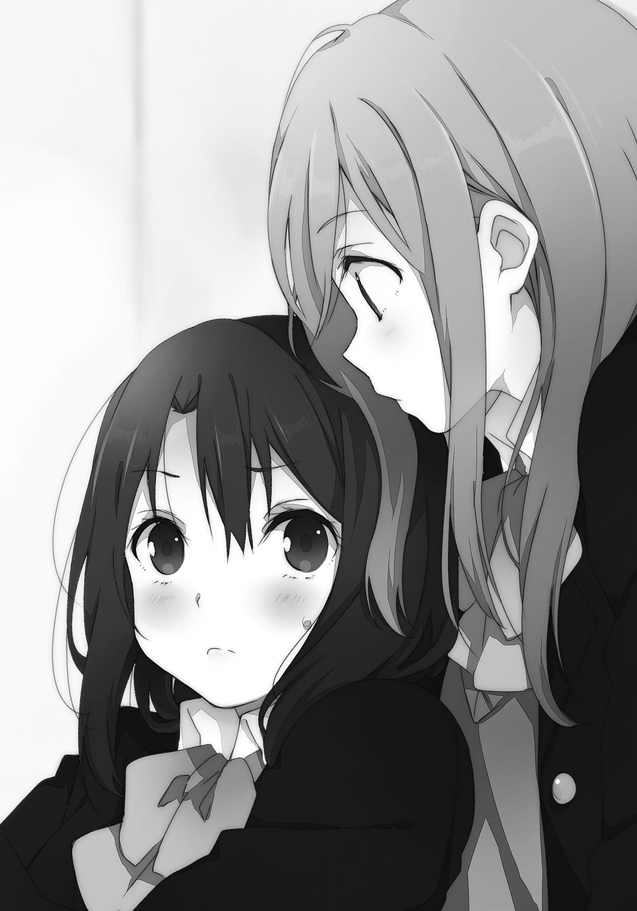背筋を少し伸ばすと、しまむらはまた後ろに隠れた。「む」としまむらが背の高さに憤っている声が聞こえる。こっちは背中を寄り添わせている事実に、手足の力が抜けた。
足を布団の上に伸ばして、息を吐く。夢と現実の輪郭が重なっていることに、目眩がした。立てた膝を抱えながら、背中でしまむらの存在を感じる。しまむらは、薄い壁の向こうにいた。
その壁は背中といって、取り除くことはどうしてもできない。
「彼氏とか、いる？」
自然と口がついばむように動く。聞かずにはいられないって感じだった。
振り返ればこのあたりから、自分が自動的な人間になってきていたと思う。
「いると思う？」
意地悪な返し方だった。しまむらに他意がなくても、唸りそうになってしまう。
「いない」
「うん正解。ていうかこの間いないって言ったけど」
「……そうだった？」
そんなことを思い出せるほど頭が働いていない。
「安達こそいないの？」
「いない」
同じ言葉で否定する。「そうなんだ」としまむらは特に気のない反応だった。
聞かれたから、聞き返してみた。それだけなんだろう、きっと。しまむらは大抵そうだ。急になんでそんなことを聞いたんだろう、と疑問に思ったとしても自分なりに答えを出してしまい、私と深く話し込むことはない。しまむらは無理に私と話そうとしないのだ。
バランスの悪い定規が間にあって、センチメートルの測り方もバラバラで、私たちはどちらがどう動いてもその距離が埋まらないような、そんな関係がずっと続くのだろうと思った。
思うと途端、少しだけ振り向く。そうすると、しまむらが目の前に出てきた。
夢と同じ距離だった。しまむらと間近で、ジッと、目が合う。
「なに？」
さすがにしまむらも、ちょっと変だなぁと感じたみたいだ。変だ。そう、凄く変だ。
鎖骨が痛い。普通、胸が痛いとかありそうなのに私の場合は骨が痛くなる。剥き出しにでもなるように、ぴきぴきと骨の軋む音がした。その理由は恐らく、過剰に力の入った首への負担からくるものと思われる。首が痛い。頭取れちゃうんじゃって不安になるほど、頭だけ辛い。
楽になりたいと思った。そのためになにをすればいいか、すぐに分かった。
え？
『好き！ っていうか』
えぇ？
あら？
あらら？
私は、なにを言おうとしたんだ？
いや言った？ 言ってない？ 言ったら、伝わっていたらどうなる？ どうなる？
「ん？」
しまむらが首を傾げる。やっぱり、声は出ていなかったらしい。
喉が潰れている感覚。
目の端がびりびりした。
『し、しまむらのこと、好きみたいな』
ひゅーひゅーと、寒々しい空気の通る音が喉から聞こえた。やっぱり、声が出ない。
心臓が骨に張り付いて一緒にずきずきと響くように、身体の内側が私を自制する。
まばたきができなくなって、目玉が顔の奥に張り付いてしまうように窮屈だった。その目で見つめるしまむらは、不審がっている。こっちの身体が少し揺れると、びくりと動いた。
『す、好きなのかな。多分さ、ひょっとしたらのっ話。す、好き？ のようなさ』
私は何回言おうとしているんだ。あわわわ、と下唇と顎が震えているのが分かる。
こりゃあだめだ。いけない。アホか。罵倒と嘲笑が頭の中を駆け巡る。記憶と意識はミミズみたいにぐねぐね糸を引き、不安定に横断するのがやっとだ。これは、これは、これは。
大ばかの、やることだ。
呆気にとられていたしまむらの口が、借り物のように不確かに動く。
「えぇと、大丈夫？ 呼吸してる？ 顔、真っ赤だけど」
その一言と、しまむらの手が私の口もとに触れたことが引き金となった。
目の前が真っ白な光の洪水に呑まれて。
気づけば立ち上がった私が走り出していた。なぜか客観的に、そう捉えてしまう。
腕の軋みも頭痛の悲鳴も、全部自分のものなのに。
「ま、待てよぅ」とか言いながらまったく追ってくる気配のないしまむらを残し、逃げ去る。
自転車がちゃんとこげるか不安なほど、下半身が崩れそうだった。
どふどふと枕に頭を埋める。ぐねぐねと身体が動いて、頭を押さえずにいられない。
自分の家までワープして帰ったんじゃないかと思うほど、道中の記憶がなかった。でも足がもの凄く痛いので、必死にペダルをこいでここまで走ってきたのは確かだった。
鞄はしまむらの部屋に忘れてきたけど、取りに行けるはずもない。
「うぅうううう、うううぅうううう」
枕に突っ伏したまま唸り声をあげてしまう。なにしてんの私。ナニシテンノー。頭皮からぽつぽつと湧く汗がそんな風に語りかけているように聞こえる。あぅうううあと情けない悲鳴のようなものを漏らしながら、制服の上着を脱ぐ。それからまた、うううあああの繰り返し。
「なんだばしゃぁぁぁぁ、なんだばしゃーあああああ」
感情由来の新しい日本語は、自分でもなにを言っているのかさっぱり分からなかった。
なにを自分で言ったか思い出そうとするだけで悲鳴があがる。かくーん、かくーんと髪の毛の分かれ目が陥没しているような感覚があった。何度か噎せて、涙の粒が目の端に滲んだ。
顔を上げると日はまだ遠くに残っていた。
なぜ沈んでいないんだ、と絶望が目の下をえぐり取る心境だった。
「うぅうぅううう、くびが、いたい。いた、いたた、いたい」
熱くて暗くて、とても飲み込めないものが胸の内をばたばたと巡る。
終わりたくない思いと、終わってほしい気持ちが滝のように流れ落ちていく。
日が沈んで、上ってきても私に明日はくるだろうか。
あそこまで見事な逃げ足を披露されたのは初めてだった。
安達が走って出て行ってからも、テレビは点きっぱなしでわたしはそれとなんとなく向き合う。開いたままの足の間では布団が軽く沈み、安達の座っていた跡が残っている。金魚よりも明確に赤くなっていく安達が最後に青くなっていく様子までを振り返り、なんだったんだと首を傾げる。なにか言おうとして、喉に詰まっている感じだった。そんなに言いづらいことだったのだろうか。安達の言いづらそうなこと、それはたとえば。
「んー……」
いや、まさかね。
「しゃばだばー」
妹が部屋に入ってきた。小学四年生の妹とは未だに『子供部屋』でひとくくりにされて同じ部屋にいる。わたしが男だったら分けたのだろうけど、姉妹だからそのまんまでいいじゃんと親に思われている節がある。夜遅くまで勉強するときのために隣の物置にストーブと扇風機だけは用意してくれたけど、埃っぽい空気だけはどうにもならない。
「いないなー、うん」
部屋を見回して、恐らく安達がいないことを確認してから、妹が部屋の隅にあるテレビの前に滑り込む。それから、繋いだまま放ってあるゲームのコントローラーを持ち上げた。また遊ぶのか、と突っ伏したまま眺めているとこっちを向いた。
「姉ちゃん、ゲームしよ」
「えー」
妹は弱いのに遊びたがる。しかも対戦して負けるとすぐ不機嫌になって無口になるから、適当に手を抜いて接待しないといけないので実はちょっと面倒だったりする。今は尚更だ。
「さぁがんばろう」
こっちの返事を待たずに妹がテレビの電源を入れる。ビデオ画面に設定して、ゲーム機のスイッチを押した。やる気満々らしい。しょうがないなぁとコントローラーを掴む。
すると妹はすぐに私の足の間にやってきて座り、寄りかかってくる。いつもならなんてことのないそれに、ぐわっと内心呻いた。さっきの安達を思い出してしまったからだ。
これ、ひょっとして変なのではないだろうか。挙動不審な安達から、そんな疑惑を覚える。
「さっきの人帰るの早かったね」
「そーね」
妹の頭に顎を乗せながら適当に返事する。確かに、なにしに来たと思うほど短かった。
「仲間割れかー？」
「うーん、わたしにも分からん」
妹が用意したのはパズルで対戦するやつだった。カラフルな玉みたいなのが画面の上からすとんすとんと落ちてくる。その玉を同じ色同士で繋げると消えるから、それを積み上げてうまく連鎖して消えるようにしていく。適当に積んでは消してを繰り返しても、二連鎖、三連鎖ぐらいなら勝手に起きる。妹も似たようなものだ。
安達とこういうので遊べばよかったのかな、と今更になって思いつく。
こういう後悔めいたものを昔から経験してばかりで、そしてまったく活かせていない。
もしもう一度同じような状況になったとしてもわたしが思いつくことはないんだろう。自身の関心の希薄さには薄々だけど自覚があった。
わたしは一人だとゲームでまったく遊ばない。本もあまり読まないし、映画も観に行かない。買い物も季節の移り変わりにあわせて服を買いに行くぐらい。休日はどう過ごしているの、と安達に聞かれたことがあったけど答えることに少し困った。ぼーっとしていることが多い。
そんなやつだから、選択の幅が狭い。いやそもそも、選択できるほどの答えが生まれない。時々、自分の指先が細く、薄っぺらいものに見える。そういうときは決まって気分が悪い。
今は、どうなんだろう。先細って、どこにも辿り着けない行き止まりみたいな指だろうか。
安達のことで不透明で、確かめる気にはとてもなれなかった。
そんなことを考えながらいい加減に指を動かしていたら、珍しく妹が接待抜きで勝った。ご機嫌な態度を顎の下で感じて、これならいけると思った。
一旦、顔を離す。身体を少し引く。
それから「ねぇ」と呼ぶと妹が素直に振り向く。すると事前に構えていた人差し指が、ぷにっとその頬を突く。実はさっき安達にやってみようと思ったところで先に振り向かれてしまったので、不完全燃焼だった。その名残を晴らそうと試したら、いやぁ簡単に引っかかる。
いいぞ妹。
「必殺へっどっ」
「がうぁ」
妹が後頭部を傾けて頭突きしてきた。顎の先が強く痺れて、こめかみまで痛みが走る。
勿論その後、必殺技を使った妹を裏表のすみずみまでおしおきしておいた。
昨日のことを踏まえて、今日の安達ならここに来るだろうと予想して先回りしたまま、一時間目の授業が始まるチャイムを聞く。体育館の二階に一人座るわたしは、「あれ」と時計を見た。
九時前後を指す時計をしばらく見つめて、朝早くからは来ないかなと結論を出して座り直す。来ると約束したわけではないのに、なんで意外に感じてしまうのだろうと、つま先を掴んで引き寄せて、ダルマみたいに丸まって転がりながら不思議がる。そうしていると安達の来ない方が自然な流れに思えてきた。でもなにかしたわけでもないのに、大げさなやつ。
起き上がって鞄を引き寄せる。携帯電話を出して、安達にメールを送ってみることにした。
知り合ったときに挨拶代わりに交換したけど、これまでほとんど利用したことがなかった。平日は学校で顔を合わせて、しかもそのときも話す内容に困って無言の時間が多いというのにわざわざ電話することも、メールで送る言葉もない。でもこんなときぐらいは役に立っていいんじゃないかと思う。どんな内容を送ろう、と考え出して指が止まる。
『昨日はなんで帰ったの？』
直接的すぎるかも。これだとまるで怒っているみたいにも受け取れてしまう。もう少し、安達が返事してくれるような、柔らかい文面にしないといけない。
「んー……」
とにかく返事を貰えたらなんとなくこの微妙な話は終わる気がする。だから。
『げんきぃー？ みたいな？』
散々考えた末にできた内容がこれだった。とりあえず、わたしは元気そうだ。送信。
鞄の上に電話を置いて待機。「あ」気づいて、慌ててマナーモードにする。今のわたしは授業をサボっているのだった。失念していたそれに気づいて、身を潜める。
髪を摘んで指の間で擦るように弄んでいると、口もとが渋く引き締まる。
これで安達が学校に来なくなったら、わたしのせいだろうか？ いやわたしはなんかしたのかな？ 安達が勝手に盛り上がって上り詰めて、木の上から降りてこられなくなった猫のようなものに思えてならない。そうなると全部安達が原因かもしれない。でも原因とか理由がどうであろうとも、木から降りてこないという事実は変わらない。それを変えたければ、誰のせいとかそういうことを細かいことにしてしまって、動いて働きかけるしかないのだ。
とにかくなにが言いたいかというと、これくらいで引きこもるなと言いたい。
どれくらいなのかもさっぱり分からないけど。
「軟弱だぞ、安達」
結局、昼休みになるまで軟弱者からの返信はなかった。
昼休みの途中、ふらふらと教室に入っていくと少し注目された。腰に手を当ててふんぞり返りながら歩いているわけでもないのに、目があうとみんなすぐに逸らした。わたしを怖がるなんて見る目がない。じゃあわたしを舐めきっている妹に慧眼があるかというと、また別の問題だけど。
わたしを怖がらない二人組を発見したので近寄ると、「おぅおぅおぅ」と日野が反応した。
「なんだいるんじゃん……って、昨日も似たようなこと言った気がするぞ」
日野がタマネギを摘みながら首を捻る。「言ったけどさ」と相づちを打ちながら側の空いていた椅子に勝手に座る。今日は二人とも机の上に弁当箱を広げていた。
日野のお弁当の中身はほとんどが肉じゃがとご飯だった。いかにも、昨日の夕飯の余りものをそのまま全部入れたという感じだ。永藤の方は卵焼きが多めに詰められている。見ていておいしそうだったので「一つちょうだい」とねだったら、「聞こえない」と真顔ですっとぼけてきた。ひどい、昨日はにんじんを食べてあげたのに。永藤のことだからそんなこと、もう忘れているかもしれないけれど。毎晩、お風呂で頭を洗いすぎているんじゃないかと思う。
それはさておき、教室の入り口の方に目をやる。安達の席の空白が、周りと比べてめだった。
「安達は、来てないよね」
「うん。今日休みだって」
日野が答えると「そうだった？」と永藤が首を傾げる、のはいつものこととして。
その後、欠席の理由が続いた。
「風邪とか言ってた」
「あ、仮病だ」
ホッとした。いつもの安達が少し深くなっただけみたいだ。もしかしたら慌てて帰る途中で事故にでも遭ったんじゃないかと、そういう心配も少しあった。それが解消される。
「二人ともいないから、また体育館でサボってるかと思ったよ」
日野に言われて、「今日は一人」と人差し指を立てる。
「いつも一緒なわけじゃないから」
「そう？ 大抵くっついていると思うけど」
永藤が誤解を招きそうな言い方で反論する。「いや別に」と否定しながらも、周りからはそう見えているのかと客観的な意見に狼狽する。手を握ったり、一緒に座ったり。くっついているといえば、接着はしているかな。でもそれは安達が望んだことであり……まぁ、受け入れたのはわたしだから、なにか否定めいたことを言うのもおかしな話かと思った。
「しまーちゃんはなんか食べたの？」
「もう誰だよそれ……そういえば、食べてないかも」
わたしには母親からのお弁当などない。頼んでも、学業に不真面目なことを知られているので作ってはくれないだろうと思う。全面的にわたしが悪いので、あまり語ることもなく。
安達もお弁当を持ってきたことはない。両親とあまり仲がよくないとは聞いているので、つまりそういうことなのだ。確かに安達には屈折した、というかひねたような部分が見え隠れする。最初にあったときはもっと愛想のない性格で、淡泊なものだって印象を持っていた。
「そうかぁ、お腹が空くねぇ。はいあーんしてー」
昨日に引き続いて、またにんじんだった。嫌いなら入れるなって言っておけばいいのに。
多分、無視されているんだろうけど。
一方、永藤の箸は弁当箱の上をさまよっていた。
「嫌いなものが特にないっ」
「あんた、わたしを歩く生ゴミ箱とか思ってないか？」
「いやいや。これでもしまむらを結構愛してるから。はい卵焼き」
「わー」
楽しい友人たちに囲まれて休み時間を過ごした。そういうことにしておいた。
その後は掃除の時間になって、廊下で箒を握ったままぼんやりと過ごした。合間に誰も見ていないときを見計らって携帯電話を確認したけど、安達からの返事はない。
ないまま、こちらから続けてもう一通送ってみた。
このまま放っておくのも、つまらないと感じたからだ。
『今日、安達の家に行ってみようと思うんだけど。いい？』
メールの返事はなかった。でも安達はいいやつなので行ったら入れてくれるだろう。
多分。
安達がメールの返信をしない理由はなんだろうと、午後の授業の間に色々考えていた。
まず一つ。普通に無視している。
二つ。未だに返信内容に悩んでいる。
そしてその三。そもそもメールに気づいていない。これが一番あり得そうだった。
というか一だといくらわたしだってそれなりに落ち込んでしまう。でも三日ぐらいでそれも受け入れて、けろりとしているんだろうなぁと思う。それを口にすることで反感ないし嫌な気分を生むことは分かっているので、誰にも語るつもりはないけれど。
この間、安達邸の前まで行ってからの帰りに書いてもらった地図は鞄の中にしまってある。探せば二つ折りのメモがすぐに見つかった。歩いて行くとけっこう遠いのだけれど、電話に出ないのなら直接会うしかない。会ってちょっと話せば、きっと色々解決するだろう。
人付き合いというのは自然に生まれるもので、労力を割くのはなんだか間違っている気がしてならない。そうしたことに億劫さを覚えてしまうのだけど、放課後、学校から出てまったく違う帰り道を歩き出す。どうせしばらく歩いていれば、やることもないしいいかと思うはず。
自分を客観的に予想しながら、曇り空を見上げる。今日は晴れ間を見ていない。気温も昨日より低くて、十月後半ということもあってかそろそろ秋が深まっているのかなぁと感じてしまう。今年は残暑が長かった。体育館の二階はまだ暑い。いずれ寒くなる頃、わたしと安達はあの場所を忘れるのだろうか。それは雛鳥が最初に住んでいた巣を忘れるような感覚だった。
小学生の集団と、住宅街の間の道ですれ違う。わーきゃーと甲高い声を遠慮なくあげて騒がしい。中にはテストでも控えているのか、歩きながらリコーダーを吹いている子までいる。自由だなぁと、大して羨ましくもないけど目がいってしまう。わたしはほら、いい子だったから。
「こんにちは」
「へぇ？」
急に挨拶されたので、声がした方に振り向く。そして、ギョッと後ずさった。
側にいたのは小柄な女の子だった。でもおかしい、なにがおかしいって、髪がおかしい。
髪の毛が水色だった。度肝を抜かれて、動きが完全に止まってしまう。
水色だ。目の錯覚でも、光の加減が奇跡を演出しているわけでもない。それが地の色なのだ。大して風もないのにふわふわと舞うようなそれからは、細かい粒子が溢れ出すようだった。
そんなのがわたしの側に立って挨拶してきた。心当たりは、まったくない。
「ど、どちらさま？」
「おや、分かりませんか」

女の子が首をぐりんぐりんと傾げる。それからどっか走っていった。遠くの家の角で消えて、しばらくしてから戻ってくるとその頭に変化が訪れていた。表面が光を反射して眩しい。でもかぶってきたそのヘルメットで理解する。宇宙服は着ていないけど、ヤシロだった。
「中身だったの」
「しゅこー、しゅこ、しゅこー」
そんなものかぶって走ってきたせいで呼吸の乱れがいつもより激しくなっている。本人もさすがに我慢しきれなかったのか、ヘルメットを外す。そうすると再びあの水色の髪が現れる。
また圧倒されてしまう。その髪自体が異空間のように、他と明確な線を引いて存在している。そんな目立ち具合だ。そして見れば顔立ちも随分とかわいらしい。睫毛や目玉まで水色に統一されて、鮮明に彩られている。途切れない水色の粒子がその体内を循環し、余剰なそれを放出しているようにも見えた。表面の色はそれの表れ。粒子が動力源のような、力強さと儚さを感じた。
「これがなくても声で分かってほしいものですね」
脇に抱えたヘルメットをぽんぽんと叩く。声が籠もっていないから別物に聞こえる。
宇宙服の下に着ていたのはワンピースだった。肩は出して、その細さと白さが強調されている。足は見たことのないメーカーロゴの運動靴で、素足。あと、腰に手を当てている。
ランドセルを背負っていても問題なさそうな幼さだけど、そういうのは見当たらない。
「顔ができたので一度お目にかけておこうと思いまして。どうです」
「どうですって……き、聞かないでほしいなぁ」
コメントに窮してしまう。よく見ると唇もほんのりと水色に輝いている。化粧と言い張るには無理のある色合いだ。試しに「ぬ？」指で拭ってみたけど、なにも取れなかった。触れたわたしの指先にはかすかな粒子めいたものが舞い、すぐに消え去る。なんなんだこれ、と改めて目を丸くしてしまった。思わず、なんだそれはと髪を掴んで質問したくなるほどに。
「地球人の顔に似せて作りました」
「地球バカにしてんのか。それで、えぇと……宇宙服はやめたの？」
どこからヘルメット持ってきたか知らないけど。ヤシロが「うーむ」とこめかみを指で押す。
「そうなのですよ。地球のみなさんはこういう格好をしていると思っていたのですが、あまり見かけませんね」
「あまりというか、まったくだと思う」
テレビの中では時々見るけどね、宇宙飛行士。
「ですから、おっと」
ヤシロが急に口もとを手で押さえた。そうして口をつぐんだ後、その場でびょーん、びょーんと飛び跳ねる。伸ばした手はわたしの顔の側をばしばし叩いた。
「なにしてるの？」
「聞かれてはまずいので耳をお貸しください」
「はぁ」
どうもわたしの耳を狙っていたらしい。掴んで引っ張るつもりだったのだろうか、なんてやつだ。その前に膝を曲げて目線の高さを合わせると、ヤシロが顔を近づけてきた。ふわりと、匂いを可視したような粒子がわたしの鼻先を包む。間近になったヤシロは顔の各部位が発光しているように、その輪郭が眩い。見ていると光に取り込まれそうな不安と、同時に引きつけられるものがあった。
わたしの耳もとに口を添えて、「ひそひそ」と喋り出す。いるかそんな前置き。
「実はわたし、宇宙人で未来人なのですよ」
「その設定はこの前聞いた」
そして確かに聞かれるとまずいかも知れない。主に頭の具合とかを疑われそうだから。
でもこんな見た目だと、そうした言葉もあり得るかもと思わせる説得力を発揮していた。
「わたしが宇宙人だと知られると、かいぼーされてしまいます」
「かいぼ？ 解剖……あんたちょっと地球人に偏見持ちすぎじゃないですかー」
わたしが本当に小さい頃、アメリカが宇宙人の解剖フィルムを公開したとかそんな番組を見ていた気がする。一緒に見ていた母親はお腹を抱えて笑っていた。今ならあの笑いの意味が分かるけど、当時のわたしは解剖という行為自体が気持ち悪いなぁと感じていた。
「だから目立たぬよう、あの服を脱いで行動することにしてみました」
そこまで説明してヤシロが顔を離す。うん、なるほど。その得意顔をやめて。
「こっちはこっちで思いっきり目立つんだけど」
近くを通っている小学生のほとんどがヤシロに注目している。当然だと思う。一人だけ町並みから浮きすぎて、出来の悪い合成画像みたいになっている。そしてよく見ると変わった髪型だ。後ろの髪を蝶結びにしている。飾りじゃなく、直接。
遠くの国の青いチョウチョを思い出すほど美しい。流水が蝶の形をかたどっているかのよう、はいいけど、ちょっと待て。こんな風に髪を結んじゃって平気なのか。結びが緩くない。
「これ痛くないの？」
「きつく結びすぎて外せなくなりました」
結び目の近くを引っ張って、「ぎゃー」と悲鳴を上げる。見た目は奇跡的だけど、中身はうちの妹ぐらい酷いようだ。背丈も同じくらいだし、会ったら良い友達になるかもしれない。
いや無理かな。この髪の色を見たら萎縮して逃げ回りそうだ。
「あなたはガッコーの帰りですね。今日はあまり素敵な匂いがしない」
制服の袖を引っ張りながら、指先に鼻を近づけてくる。素敵な匂いというのはドーナツの甘い香りのことだろう。ぐいぐいと袖を引っ張ってくるので、ブレザーが肩からずれそうになる。「えぇい離せ」と時代劇みたいな調子で引っぺがしたら、「あーれー」とヤシロが回転した。
意外とノリがいいというか、どう見ても宇宙人じゃないというか。
「しかし、ほぅほぅ」
戻ってきたヤシロがじろじろとわたしを眺め回してくる。背伸びしたり、後ろに回ったり。その間にも通りかかる小学生に、わたし含めて注目される。やっぱりどっちみち目立つ。
動き回る度に粒子をばらまいて、星々の川を描くようだったヤシロがわたしの正面で止まる。
そして、にかーっと無邪気に歯を剥き出しにして笑いかけてきた。
「あなたとはうんめーてきなものを感じますね」
「そうですかねぇ」
唐突にそんなことを言い出したヤシロに、適当に返事する。
ヤシロの方は見た目からして壮大な運命の一つや二つ背負っていそうだけど、わたしの方はごくごく普通の女子高生をやっているつもりだ。妹からは『ふりょーふりょー』と髪を染めたことに不評を食らい、『ギャルめ！』と母親に罵倒？ されるけれど、他はおおむね普通だ。
「多分、あなたはわたしと会うために生まれてきたのだと思いますよ」
いきなり運命的なことを言われてしまった。
面食らいながらもその言葉を呑み込んで、反芻して、ん、となる。
「え、わたしの方が？ こういうときって、あんたの方が、じゃないの？」
それはそれでおかしいけど。かわいい女の子がわたしにそんなこと言うのは、なんか変だ。
「いえ、わたしには他に色々と使命がありますので」
引き締まった顔つきになって手をぶんぶん横に振ってきた。まるでわたしが他にやることもない暇人と言われているみたいで、なんか腹が立った。頬を摘んで、きゅーっと引っ張る。
「ふぉふぉふぉ、むふぁふぇす」
引っ張られながらもヤシロが不敵に笑う。柔らかい頬はいくら引っ張られ、こねくり回されても辛くないようだ。モモンガみたいな顔になったけど平気そうにしている。だから代わりに、正面から見ると∞の切れ端が覗けるような髪の結びを引っ張ると、「ぎゃー」効果があった。さすがに髪は柔らかくできないみたいだ。しばらく遊んでから解放した。
離れたわたしの手のひらの上で、光が舞踏していた。
今度は、なんだこれと思う前に、綺麗だなって見とれた。
「おっと。晩ご飯の調達の途中でした」
髪を撫でていたヤシロが空模様を見上げつつそんなことを言う。雲しかないのに時間を確認するような仕草だった。そして調達って。どういう生活しているんだろう。
野外で生活しているとは思えない清潔さだし、そういうのではないんだろうけど。
「恐らくまた会うことになるでしょう。では次回もしくしーくー、よろしーくー」
そう言って手を振りながら、ヤシロが駆け出す。
走り去る後ろ姿は、チョウチョを模した髪が羽ばたくようだった。
舞い散る粒子が描く軌跡に、つい目が釘付けになる。なんとかベルという妖精を連想してしまう。妖精にしては俗っぽいというか、食い意地がすごいけど。
その奔放さも含めて謎なやつ。同じご町内にいるというのが信じがたい。
「……さて、と」
安達の家に行こうか。なんとなく一つ終わった気がしたけど、なにも始まっていなかった。
道にはほとんど迷わないで安達の家に到着した後、最後にもう一回だけ携帯電話を確かめる。よし、返信なし。ぴんぽーんと。
インターホンでなんて名乗ろうかなと色々考えていたら、先に鍵を開ける音がした。
「はーいー」
愛想のない寝起きの声で安達が扉を押し開ける。確認もせずに不用心だなぁ。
「よ」
小さく手をあげて、短く挨拶する。目を擦りかけていた安達が固まった。
鼻のない象のプリントされたよれよれのＴシャツと、寝癖だらけの頭の怠け具合に笑ってしまう。惰眠をむさぼっていたのが見て取れて羨ましい。その安達の目が次第に大きく開く。
そして安達が無言で扉を閉めた。巻き戻し再生したように正確な動きだった。
「あ、ちょっと」
「十五分待ってて！」
「え、けっこう長い」
廊下を走るような音が建物の中から聞こえてくる。どうやら本当に待たされるみたいだ。十五分も家の外で突っ立っていたら、近所の人に不審に思われないだろうか、と左右を見渡す。
「たすけてー、あけてー」と冗談で扉を叩いても反応が貰えないので、諦めて扉に背中をつけながら屈む。しゃがんで携帯電話を操作して、時刻が四時過ぎであることを知る。やっぱり歩きだと結構時間がかかった。それに加えて、変な光っているやつにも会ったし。
手のひらにはもうあの光の粒子が残っていない。奇跡は伝搬するようなものじゃないみたいだ。あのきらきらがわたしにもあったら化粧の必要もないのかなぁと思ったけど、似合うかは別問題かと思い直す。元から綺麗なものが光り輝くと映えるけど、破かれた袋から散乱したゴミが輝いても面白みがないのと一緒だ。いや、わたしがゴミということはないのだけれど。
そもそも安達は十五分、なにをするつもりなんだろう。着替えと、寝癖の撤去？ 別にわたしと話すだけなのに大げさだ。でも友達にだらしない姿を見られるのが嫌という気持ちも分かる。学校の教室のイメージを崩すのも、崩されるのも落ち着かない。
屈んだまま一人じゃんけんと、一人しりとりを交互に繰り返して時間を潰した。
そんなとても有意義な時間を過ごして、背中側の扉に力がかかるのを感じたので離れながら立ち上がる。最初のいい加減な開け方と異なり、扉の隙間からそろそろと安達が顔を出す。
本当に大急ぎで支度をしたのか、息が上がっている。これなら十五分待たないか、もしくは三十分待たせることにした方が醜態をさらさないで済んだ気もする。寝癖のなくなった髪だけど走り回ったせいで崩れてしまっている。それと不可解なことが一つ増えた。
「なんで制服着たの？」
「つい、勢いで」
安達が髪を手で梳かしながら恥じる。頬が赤く、昨日のことを思い出しそうになる。
「今から学校行く？」
「やめてよ」
そこでようやく、安達が少し笑った。そして扉も大きく開かれた。
扉に寄りかかっていた手を下ろして、安達が苦笑いめいたものを浮かべる。
「でも急に来ておどかさないでよ」
「急じゃないじゃん。メールした」
「メール？」
「やっぱり見てなかったのかー」
こいつめ、と冗談めかして頭をこづく。安達は少し目を泳がせた後、「あぁ」と頷く。
「だって鞄、しまむらの部屋に忘れていったから」
「あ、そういうこと」
安達の携帯電話はわたしの部屋で虚しく鳴っていたわけだ。
「電話、あんまりかかってこないから放っておいても気にならないかなって」
そこまでは淡泊な反応だった。でも、急になにかに気づいたように、目をハッと見開く。
扉を膝で蹴り飛ばすようにして一歩乗り出して、わたしに尋ねてきた。
「私の電話。中身見た？」
「鞄があるのも今まで忘れてた」
「なら、いいけど」
安達がホッと息を吐く。どんな閲覧厳禁な情報がいっぱいなのだろう。ちょっと気になる。
「あれ、でもそっか。学校来なかったのはそのせい？ 鞄ないからいけなーいって」
「眠かっただけ。しまむらのせい……も、ちょっとあるけど」
あるのか。なにかを思い出したように安達が目を伏せる。微かに耳が赤くなった気もした。
「鞄、持ってくればよかったね」
「あ、うん。明日は行くから、そのとき」
「分かった。持ってくる。携帯電話を弄ったりはしないから安心しなさい」
はははと面白くもない冗談を口にする。安達はまったく笑わなかった。
ただ口が切れ味鋭く「見るなよ」と動いたので、真顔の安達に「はい」と頷いた。
「どんなメール送ったの？」
「げんきー？ とか」
「じゃあ、げんきー」
安達が腕を曲げて、筋肉隆々のポーズを取る。
恥ずかしくなったのか一瞬でやめた。
「もう一回やって」
「やだ」
携帯電話のカメラを構えながらねだったら即答で拒否された。惜しかった。
「で、そろそろ上がっていい？ 立ち話もあれじゃん」
「あ……今日はバイトある、んだけど」
安達が申し訳なさそうに言う。学校はサボるのにバイトはサボらないのか。エライ、のかな。
「ん、そっか。じゃあ帰る」
安達の顔は見たし、話もした。メールの謎も解けて、もう十分だろう。用は済んだ。
「え、もう帰るの？」
背中を向けた途端、引き留められる。バイトがあるんじゃなかったのか。そういう目で見ると、安達が慌てたように言う。
「ちょっとぐらい話す時間はあるし」
「んー……話すことあるかなぁ」
いつもこういう空気のとき、わたしと安達に言葉はなかった。趣味が合うわけでもない、というよりわたしが無趣味で安達に合わせられない。授業や学校への愚痴も、ろくに学校を経験しようとしないわたしたちの間では話題とならなかった。
「安達、話なんか振って」
引き留めたのだからそれが自然だろう、ということで安達に場を繋げと求める。安達は顔の上半分が引きつるような、露骨に困り顔になった。半笑いのようにも見える。
「げ、げんきー？」
「げんきー」
筋肉のポーズは取らなかった。はぅどぅゆーがあいむふぁいんでせんきゅーは終わった。
「………………………………………」
「………………………………………」
結局、わたしから話しかけてしまう。
「よく寝てたみたいじゃん」
今はなくなった寝癖を指摘するように頭を指すと、安達が目を逸らす。
「つい」
「つい。うーん、羨ましい。こっちは授業中眠くて仕方なかった」
英語の授業でもないのに、何語を喋っているんだと思ってしまうほどだ。少々勉強したぐらいではなかなか追いつけなくなっているほどの溝があった。早く埋めないとなぁ。
「ところで風邪治った？」
意地悪に尋ねると、安達がわざとらしく咳き込んだ。
「聞かれると急に悪化する、悪性の風邪のようだ」
「うつると安達も心苦しいだろうし早く帰ろう」
「あ、噓。治ったよ」
そもそも風邪自体が噓でしょうが。そうして笑いあうと、また会話が途切れる。
普段ならそういう空気もありだけど、今日は許さない。理由は特にない。
「ほら安達、次の話題」
催促する。手招きするような仕草をしていると、安達が口を開いた。
目が少し落ち着かず、くるくる動いているのが印象的だった。
「あのさ、しまむら」
「ん？」
本当に話があるとは思わなかった。なんだろうと期待して待つと、安達は言いづらそうに、
「でぇー……一緒に遊びに行かない？ 土曜日とか、どっか適当に」
「遊び？ どこに？」
若干気になる点はあったものの尋ね返す。安達は「どこでも」と、ごにょごにょ返事する。
「土曜日はバイトないの？」
「夜からだから。昼は平気」
「じゃぁー、まぁ……いいけど。どこ行くかはそっちで決めてくれれば」
面倒な部分は丸投げするぞと言っても、安達は「うん」と嬉しそうに頷いた。
「うん……じゃ、そろそろ帰るかな。バイトがんばってね」
さっき帰ろうとしてからあまり時間は経っていないけど、これ以上話すこともなさそうだった。安達も満足したのか、今度は引き留めようとしない。下ろしていた手がいつの間にか扉に寄りかかるようになっている。
土曜日かぁ。安達と休日に出かけるのはこれが初めてになる。
まぁある意味、今日も安達にとっては休みだったのだけど。あはは。
「あとさっきの象のシャツってどこで売ってるの？」
「聞かないで」
そんな話をしながら、安達邸の前から離れて歩き出した。
帰路を一人で歩いて、五分ぐらい経ってから問いかける。
「さっき、安達さぁ」
デートって言いかけなかった？
まさかねぇ。
待ち合わせ場所は巨大モールの中。ベンチと巨大ツリーを目印に、という約束だった。いっそのこと、しまむらの前でという自虐的な提案もあったけどあまり面白くないのでやめた。
ツリーの側のベンチにはお爺さんたちが座っている。紙コップのコーヒーをすすりながら、散歩の途中みたいにのんびりしている。それが六人ぐらいいて、どういう集団なのだろうと最初は思ったけど話を側で聞いているとこれからモール内のボーリング場に向かうみたいだ。
ビリヤードとダーツでも遊べるそこには、できた当時に妹と一緒に行ったことがあった。
……そんなことを思い出しながら、ちらりと横に目をやる。当然のように、まだいた。
「なんであんたいるの？」
「おぉ、うんめー」
ヤシロの発音だと運命じゃなくて、ご飯が『うんめー』に聞こえた。
宇宙服とヘルメットを着ていないヤシロが、なぜか待ち合わせ場所にいた。正確にはベンチに座っていて、わたしを見つけて隣に並んできた。なぜか腕組みしている。
「お互いここに来るのを知らないのに出会う。やはり、うんめーがあるみたいですね」
ふっしっし、と頬を膨らますような妙な笑いをこぼす。また運命かぁ。軽々しい。
「あんたの喋り方、というか台詞ってなにか参考にしているものない？」
「『どらま』なるものでこの国の基本を勉強してきました」
「やっぱり。運命とか、芝居がかっていると思った」
つまり言葉の意味もあまり分かっていないと見た。幼い顔立ちを見ていると尚更感じる。
髪型はこの間と同じく蝶結びだった。でも今日の蝶は余裕があるのか、少し緩い。学習能力はあるみたいだ。服もこの間と違い、青色のスカートと、『尻毛』と胸に書かれたシャツを着ている。
「外人か」
「いえ、宇宙人にして未来人です」
ヤシロが胸を張る。張ると尻毛が強調される。改めて見るとすごいな、尻毛。しりげではなくしっけ。これ、近所の地名なんですよ。地元の人は平気でしっけと呼んで住所を書いて贈り物をしているけど、慣れって面白いものだなぁ。わたしもまったく抵抗がない。
「ところで、こんなところでなにをしているのですか？」
「それはあんたに聞きたいけど……待ち合わせ。友達と」
「ほーほー」
とりあえず頷いてみたという感じだった。話を聞いているのかも怪しい。
「あんたは？」
「なんとなく来ただけです。そうしたらあなたがいました」
「ふぅん」
「うんめーですね」
「はいはい」
適当に返事していると、安達もやってきた。
モールまで安達の家からは結構遠い。バスで来たのかと考えたけど、息が切れているのでここまで自転車で走ってきたのかもしれない。立ち止まって膝に手をやりながらも、顔を上げて微笑もうとした。
でもわたしの隣にいるヤシロがてこてこと動き出して、その笑顔が凍りつく。
「あなたはこの間見かけた人ですね。こんにちは」
礼儀正しく、ぺこーっと頭を下げる。それはいいけど、粒子を振りまかないように。
「え、え？ だれ？」
安達が困惑している。そりゃそうなる。色んな意味で混乱してしまうだろう。
「あれの用意を」
「はっ、少々お待ちください」
意外と察しがいいらしく、物陰へとてってこ走っていく。そして前回同様、ヘルメットをかぶった状態で戻ってきた。どういう手品なんだろう。真剣に考えると頭が痒くなるか爆発しそうなので、流した。
「というわけでこの間の宇宙人ちゃん」
「どーもー」
ヘルメットをかぶったまま、無邪気に両手を振る。不気味なのでわたしが外した。
質感がある。重さもある。急に出てきたけど、確かに幻ではなかった。
「……ふむ」
かぶってみた。途端、側面が真っ暗になる。ついでに息苦しく、頭が重い。
安達の方を向くと、一歩引かれた。
「どう？」
「しまむらのよさがまったく出てない」
安達にヘルメットを外される。そんな風に巡って手元に来たけど、安達はかぶるつもりはないみたいだ。どうすればいいのこれと扱いに困るように、わたしに目線を送ってくる。
渡しちゃえばいいんじゃない、とヤシロに目を向ける。安達は困惑を残したまま、おずおずとヘルメットを差し出す。ヤシロはそれを受け取って、脇に抱えるように持った。
「あなたの名前はなんですか？」
ヤシロが安達に尋ねる。安達の口がごにょごにょと、動きづらそうにうごめく。
「安達、だけど。あなた、きみ？ は？」
わたしとヤシロを交互に見比べる。どういう関係だとその目が質問していた。
知り合いではあるのだけど、友達かは微妙なところだ。
「一言で言えば未来人にして宇宙人なのですが」
「……しまむら、翻訳して」
「近所のちょっと変わった子、とか思っておけばいいんじゃないかな」
わたしだってこいつの正体が掴めていないのだ。その言い分を丸ごと受け入れられるほど頭の中がお花畑じゃないし、かといって目を瞑って違うと断じられるほど、その粒子は軽くない。今日も髪から、目もとから燐みたいに水色の粒子がふわふわと漂っている。
この妖精もどきみたいなやつで分かっていることは甘いものが好きなことともう一つ、なんだか分からないけど、わたしが気に入られているのは理解していた。
なにかした覚えもないし大して話していないのに。ドーナツをあげたからだろうか。
運命的にびびーんとくるものは、生憎とわたしの方からはない。
最初見たときは宇宙服だったし、中は妖精だし。衝撃があって、他のことに気など回るはずもなかった。
「待っていた友達とはこの方ですか？」
ヤシロが安達を指差す。「そうだけど」と答えると、ヤシロが動いた。
「では行きましょうか」
「え？」
ヤシロが先導するように歩き出したので、疑問の声を発する。ヤシロが振り向く。
「この間、どーなつを頂いたお礼をしましょう。おごります」
「いや、ついてくるの？」
安達がそう言いたそうな目で見ていたので、先にヤシロに尋ねる。ヤシロは当然のように「あちらから良い匂いがします」と無視してきた。わたしの妹を彷彿とさせる自己中心ぶりだ。
安達は「どういうこと？」と眉をひそめている。展開についていけていないようだ。それはわたしも一緒なので、聞かれても困る。分かるのは安達が不満そうだということぐらいだ。
一人歩いていたヤシロが振り返り、「ついてこないと迷子になりますよー」と手を振ってくる。むしろあんたが迷子みたいだよと言いたくなるけど、まぁ仕方ない。ついていくか。
「あっ」そこで気づいた。手首を掴むと、電流でも走ったように安達が跳ねた。
唐突に手を掴まれて驚いたらしく、目が白黒している。
「な、なに？」
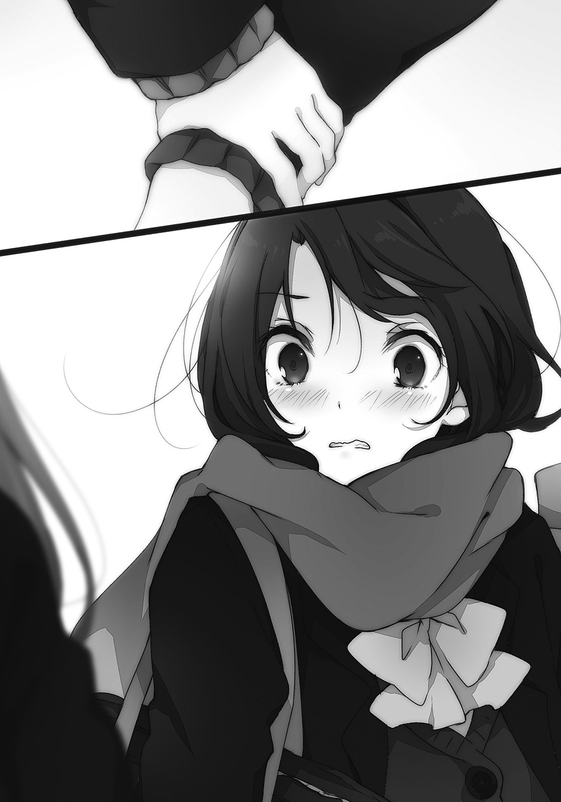「逃げるかなーと思って」
「えっ？ ……あ」
以前、駅前でのことを指していると察したらしい。組み合わせはあのときと一緒だ。安達がばつの悪そうな顔をしたので、こちらはそれらをまったく無視して笑う。
「せっかく来たんだし、すぐ逃げ帰られても面白くないでしょ」
このまま家に帰ったら、午後からなにをして過ごせばいいというのか。
安達は浮かない顔のまま、頬を指で擦る。痒みを払うような仕草だった。
「逃げない、けど」
「色々疑問はあるだろうけど。わたしもあるけど、ま、とりあえず行ってみようか」
安達の手を引っ張って、ヤシロの方へ早歩きで向かう。おごってくれるというなら拒否する理由も特にない。お金を持っていたのかとむしろそこに関心があった。
「あ、それとおはよう」
歩きながら安達に挨拶する。状況に翻弄されっぱなしの安達だったけど、まばたきを二回繰り返した後に曖昧な笑顔で「おはよう」と挨拶を返してきた。そして、自分の足でも歩き出す。
何百メートル離れても見失いそうにない輝きを誇るヤシロの、小さな背中を二人で追う。手首を掴んだまま光の妖精を追って、そのままおとぎ話の世界に迷い込んでしまいそうだった。
ヤシロが案内したのはモール内のスーパーの手前にある店だった。表の看板によるとピザとパスタ、それにオムスフレを売りにしている。店のチョイスがまともで安心した。ヤシロに入り口の側にドーナツ屋があることを教えたら、そっちへ走っていっただろう。
「よきかなよきかな」
ふらふらと匂いに釣られるようにヤシロが入っていく。妖精もどきの入店に店員が一瞬びくついたけど、一応は笑顔で出迎える。「三名様です」となぜかヤシロから先に指を立てた。
店内にはおばさん客が多い。その間のテーブルに案内されて、ヤシロが真っ先に滑り込むように座る。その向かい側に目がいき、そちらに座ろうとすると、
「ささ、こちらにどーぞ」
「え？ うん、はぁ」
手招きされたのでそのままヤシロの隣に座る。ヤシロが無垢な笑顔を向けてくるとまるで妹みたいで、ついその頭を軽く撫でてしまう。髪と手の間から、粒子が無数にこぼれた。
座ったことで角度が大きくなり、手のひらが安達の手首と擦れる。そこでさっきからずっと安達の手を掴みっぱなしであることを思い出した。このままでは安達が座れない。
「あっと。ごめん」
安達の手首を離す。さすがにここからは逃げないだろう、本人もそう言っていたし。
けど、安達はすぐに動かない。なんかムッとしたような顔で、ヤシロを見つめている。拗ねた子供みたいな表情のまま、わたしの側に立っている。そして、わたしの肩を軽く押してきた。
「しまむら、もうちょっと奥、行って」
「え？ うん、はぁ」
さっきとまったく同じ反応になってしまった。奥に詰めると、安達が隣に座ってきた。
「……いやいやいや」
おかしいから。なんでみんな同じ側の席に座っちゃうのだろう。向かい側に誰か後から来るわけでもないのに、不自然すぎる。店員さんも困惑気味にお水を置いているじゃないか。
両隣に座られてしまったから、わたしが向こう側へ行くのも地味に面倒なことになっている。そして安達は動く気配がない。気まずそうな顔ながら、こっちをちらちらと見ている。
気まずいのはこっちである。ヤシロは水をごくごく飲んでいるだけだし。
「あーっと、注文決まりましたらお呼びください」
メニュー表を置いて、そそくさと店員が離れていく。わたしたちの妙な空気を感じ取っているみたいだ。人は見えないものを感知する力が確かにあるわけで、それが拡大化していけば幽霊も絵空事じゃないのかもなぁなんて、この場に似つかわしくないことをふと考えてしまう。
「わたしはもう決まってますよ。このふわふわオムスフレです」
水を飲み終えたヤシロがメニュー表の先頭にある写真を指差す。こんがり焼き目のついた卵焼きが小さい鉄板の上に盛り上がっていて、見た目にもおいしそうだ。わたしも同じやつにしようかなと思ったけど、周りの席を彩っているピザを見ていると、そちらも悪くない気がしてくる。後はパスタもいい。ようするになんでもいいのか、と言われるとそうなんだけど。
「安達はなににする？」
「好きなのでいいですよ」
ヤシロが得意げな顔を覗かせて言う。安達はわたしたちを一瞥して、手を伸ばす。
「見づらいから、ちょっと貸して」
「あいよ」
メニュー表を渡す。安達が抱えるように広げたので、わたしはともかくヤシロは覗くことができない。もう決まっているからいいんだろうけど。ヤシロの方もテーブルの下で足をばたばたさせているだけだ。落ち着きのない子供そのものだった。
「しまむらはどれにするの？」
服の袖を摘まれる。一緒にメニュー表を覗きながら、「どれにしようねぇ」と迷う。
近くのテーブルに運ばれたピザを一瞥すると、一人で食べるには多すぎる量だった。
「ピザとパスタ一つずつ頼んで分けない？」
提案すると、安達が「いいよ」と快く頷いた。その直後、「ぐぁ」
いきなり脇腹を突かれた。振り向くと、ヤシロの人差し指がぐりぐりとわたしをいじめていた。「こら」と頬を引っ張ってなんだそれはと問うと、ヤシロがふゅほほと笑う。
「暇でしたので」
「あんたは暇だと人の急所を指でつっつくの、へぇー」
顔のマヌケさに似合わず危ないやつじゃないの。たてたてよこよこ、と頬を伸ばして遊んでいると「ぎゅぇ」今度は安達が脇腹を掴んできた。そんなにわたしの脇腹は魅力的なのか。ぜんっぜん嬉しくないんだけど、それ。ヤシロを引っ張ったまま振り返ると、安達が涼しい顔でメニューを見ていた。こちらはこちらで、意図を口に出してはっきり言ってほしい。
「しまむらがピザ決めてよ。私がパスタ決めるから」
なにごともないように安達が話しかけてくる。ちなみに、脇はまだ摘まれている。ヤシロも「ふぅひぇ」まだ摘まれている。もうなにがなんだか分からないまま、「じゃこれ」と選んだ。
選んだピザはベーコンとズッキーニだった。安達も「それなら私はこれ」と完熟トマトのパスタを頼む。注文が決まったので店員に目配せすると、すぐにこっちへ近寄ってきた。
今度はなぜか笑いを堪えるように、微笑ましそうな顔でやってくる。わたしがヤシロの頬を引っ張ってじゃれているからみたいだ。まさかわたしとヤシロが姉妹には見えていないだろうけど。店員に一番近い安達が、わたしたちと異なって冷めたような声で淡々と注文した。
そういう空気に当てられて、ヤシロの顔から手を離す。ヤシロは「ふぃー」と頬を撫でた後、「もっと頼んでもいいのですよ」とまた鼻を高くしたけど、応えは愛想笑いぐらいだった。
注文してからしばしの間、沈黙が訪れる。ヤシロは紙ナプキンを折り紙みたいに折って黙々と遊んでいるし、わたしと安達はいつも通り。むしろ安達はいつもより機嫌悪い気がする。
ヤシロが気に入らないのだろうか。だとするならどこが？ ヤシロを一瞥する。
こうしてただ座っているだけでも、存在感は別格だ。背景の白い壁に収まっていない。その髪の特異な色と整った顔立ちは世界の命運を握っているとか、すごい超能力ででっかいロボットを操縦するとかそういうことができそうなのに実際は「ふふふどーです、バッタ」適当にナプキンを折って自称バッタを得意げに見せつけてくるではないか。バッタというより箸置きに見える。
そんなのならわたしでも作れる。ナプキンを取って、真似して折った。
「お、箸置きですな」
「あんたのバッタと瓜二つなんだけど」
「どこがですか？」
真剣に不思議そうな顔で首を傾げてくる。うわ、なんか腹立つ。
「わたしのやつの方がバッタっぽいよね？」
安達に同意を求める。頬杖をついていた安達は面倒そうにこちらを一瞥して、「どっちもバッタに見えないけど」とつれない返事だった。むぅ。「おー、地球人の見る目はもう、ぜんっぜんですね」と嘆いているやつは一旦置いておいて、だ。
「安達」
肩に手をかけてこちらを向かせたのとほぼ同時に、その頬を摘む。不意打ちだったので簡単に摘むことができた。安達は最初、表情に変化がなく固まっていたけど次第に血が通うように、頬に赤みが差す。
「どうしましたー？」
両頬を摘んで正面向かせながら尋ねる。安達からさっきまでの不機嫌さがなりを潜めて、狼狽しているのが指越しに伝わってきた。ぐにぐにと頬を揉む。目もと含めて更に軟化した。
「な、なんでもない……ふえふ」
「じゃああれやって。笑顔で」
「あれ？ あれって？」
「こないだの。はい聞くよ、げんきー？」
その聞き方で安達も思い出したらしい。「えぇっ」と嫌がり、目を逸らしながらも最後は諦めたのか、頬を摘まれたままふにゃっと顔の輪郭が緩む。目は必死に逃げていたけど。
「げ、げんきー」
ちゃんと腕を曲げてむきむきポーズも取ってくれた。そして今回も一瞬でやめた。
そういう点も含めて満足したので、こっちとしてはよし。
ヤシロはまた黙ったなぁと思っていたら二匹目のバッタを作成中だった。テーブルの上をバッタ王国にでもするつもりなのか。わたしの作ったバッタもちゃっかり飾られている。
まぁ遊ばせておこうと放っておき、ついでに安達の頬を離した。
安達が恥ずかしさからか頭を抱えている途中だけど、ちょっと語ってみる。
「まぁ人の心は分からんけどね。不満とか、望むこととか。でもどうせ会ったなら楽しくやりたいじゃん。わたしもそうでありたいし、安達もそうであってほしいよ」
抱えた頭と指の隙間から、安達の視線を感じる。そして明確な返事はなかったけれど、安達が小さく頷いたように見えたので、わたしは微妙な満足感を感じながら料理が来るのを待てた。
「お、きたきたきましたよ」
へいへーい、と恥ずかしい子が手を振って店員にアピールする。見た目が超常的だから文句を言うことも、その幼さをあざけることもできない。ヤシロの前に料理が置かれる。
鉄板に収まるオムスフレは写真と異なり、あまり膨らみがなかった。
「だばー」
ヤシロが持ってきたメープルシロップをいっぺんにかけてしまう。一緒に用意されたトマトソースの方には見向きもしないまま、オムスフレにフォークを突っ込む。ふわふわに焼いた卵焼きの中に、フランスパンの切れ端が入っているみたいだ。ちょっと食べてみたいかも。
「じゅわーっとして、じゅわーっと、おぉうー、じゅわー」
ヤシロがフォークで切れ込みを入れながら、じゅわじゅわうるさい。言葉通りにシロップがじゅわじゅわしているけど。その染み具合には思わずわたしも引きつけられてしまう。
ヤシロが大口を開けてそのスフレを噛みしめる。その幸せそうかつ躍動感溢れる味わい方に、興味が煽られる。飲み込むのを見計らって、ヤシロに頼んでみた。
「それ一口頂戴」
「いいですよ」
ヤシロが先程と同じように卵を切る。それをフォークですくった。
「はいどーぞ」
「えっ」
わたしより先に安達の方が反応した。振り向くと、傍目からでも分かる程度に狼狽していた。
「どうかした？ 安達も食べたいとか？」
「そうじゃないけど」
なにか言いたげに目が泳ぐ。その合間、合間にヤシロが差し出しているフォークに目がいっている。やっぱり食べたいのだろうか。でもそれにしては声を出すタイミングが変だったかも。
「ハ ヤ ク シ テ ク ダ サ イ」
「はいはい。ていうかなに、その喋り方」
エセ宇宙人ごっこしているヤシロの方に向き直る。ついでに注文をつける。
「そこじゃなくて、フランスパン入っているとこがいい」
「けっこーわがままですね、しまむらさん」
「時々言われる」
ヤシロがすくった分を食べた後、もう一度要望通りの場所をすくい上げる。口もとに差し出してくれたので、そのまま食べた。歯を少し入れただけで、じゅわぁと過剰な甘さが歯茎まで垂れ落ちる。歯の根っこが浮いてしまいそうな甘味は、おいしいとまずいでは判別できない大味だった。
「あまっ。シロップかけすぎな気もする」
「そうでしょうか」
かなりの甘党らしく、まだ足りないという顔つきだった。やれやれ、と笑いかけたところでまた脇腹に異変を感じる。くいくいと服ごと引っ張られた。失礼な、引っ張る肉などないのに。
「あのね、安達。脇腹を摘まないで」
「あ、うん。私も一口あげる」
会話が成立していないぞ、安達。振り向くと、安達のパスタも来ていた。
「え、元々半分こじゃなかった？」
「そうだけど、その、余分に一口」
安達が慌てたようにパスタをフォークに巻き付けて、口もとに差し出してくる。余分に一口って、わたしを太らせたいのか安達は。少々不安になりながらもせっかくの好意だからと受け取り、そのまま口に含む。トマトとオリーブオイルの味が口いっぱいに広がる。
甘く膨らむ味がヤシロで、トマトの引き締まった味が安達。なんとなく、らしさを感じた。
で、わたしがパスタをもちゃもちゃ食べている間、安達はヤシロを見つめている。そのヤシロは口もとに卵焼きが張り付いていて迫力がない。食べるのに夢中で、安達の視線などまったく気づいていないようだ。
安達が向けているのは敵意というほど大げさではないけれど、対抗心、かな。
そういうものがヤシロにあるのを感じる。安達って、案外子供っぽいところ多いよねぇ。
わたしがパスタを食べ終えた後も安達は忙しい。フォークをジッと眺めたり、頭を振ったり。
そしてヤシロへの意味ありげな視線も忘れない。
ヤシロに向ける視線の間にはわたしもいて、そちらにも気を遣っているとどうにも気疲れする。そんな食事が胃に優しいはずもなく。この後どこ行く？ と聞かれたなら『薬局』と答えたくなる程度には、身が縮こまる。なんでこうなった、と考えて心当たりがあるような、ないようなと言及を避けるために曖昧にごまかしながら、ピザはまだかとカウンターの奥に目をやる。窯からは少し焦げたような香ばしい匂いが漂っていた。
わたしと、安達と、ヤシロ。
今日これだけでは終わらない。
そんな『うんめー』を、根拠もなく感じた。
ボーリングの玉と人の頭は同じくらいの重さだと聞いたことがある。
本当か知らないけど、それなら肩がこるのも納得だなぁと思った。
「重いです」
両手でボーリング玉を抱え持つヤシロがよろめく。こっちによろけてきて、そのまま私の足にでも落とされたらたまらないので距離を取る。するとなぜか、こっちにわざわざ寄ってくる。
「おぉ、これもうんめーのなせるわざですね」
なんでも運命のせいにしないように。
昼ご飯を食べた後は、モール内の遊技場に来ていた。食べてすぐ帰るのも面白くないので、中をうろついて買い物でもしようかなと安達と話していたところに、ここが楽しそうですとはしゃぐお子様が一人。自主性に乏しいわたしと安達は流されるままに、遊技場に案内された。
そこはボーリングだけに留まらない総合施設で、他にはカラオケ、ビリヤード、ダーツ、卓球の施設もある。縁もあるし卓球なんてどうだろうとは提案したけど、三人だと遊びづらいのでボーリングとなった。ダーツは怖いおにいさん方が占拠していたので敬遠して、ビリヤードはヤシロの背丈が不足しているので却下。そんな消去法による選択だった。
１ゲームで６９０円。こっちはおごってくれなかったので、割り勘。
安達は反対もせずに払ったけど、無言が続いている。時々、視線を感じて「んー？」と目線を振るのだけど、「なんでもない」と首を振って話そうとはしない。なんだかなぁ。
……でも正直、ヤシロに引っ張られて助かったかもしれない。他に目的もなかったから。
「ところでこれはなにをするのですか？」
青いボーリング玉を抱えたままのヤシロがわたしに質問してくる。
「あんた、知らないでやろうやろう言ったの？」
「知らないのにおもしろさが分かるわたしはすごいっ」
と、思いませんかと同意を求められたので思いませんと答えながら、頭を掴む。
「ああやって、転がしてピン倒すの」
ヤシロの顔を捻って、レーンの方に向けさせる。
ピンの上には各レーンの映像が大画面に映されている。今は丁度、隣の家族連れのお父さんがボールを放るところだったのでヤシロの顔をそちらに修正した。専用のグローブらしきものを装着しているお父さんだけどボールの軌道は素人そのもので、真ん中から逸れて脇へゴロゴロ。でもガターへ落ちるはずだったボールはファミリー用に設置されたバンパーに弾かれて真ん中へ復帰し、ピンをなぎ倒していく。
結果、ピンを倒す音はイマイチだけどストライクとなった。お父さんおおはしゃぎ。
「とまぁあんな風にやるの。分かった？」
「実はしってましたっ。ははは引っかかりましたねわたしのニンポーに」
とりあえず、頭をぺちーんと軽く叩いておいた。そうしたらふわぁっと粒子が飛びだしてきて、それがわたしの手を追うように迫ってくるものだからこっちが驚いて転びそうになった。
この粒子、一つ一つに意思があるような動きだった。改めて、異質さを実感する。
そんな粒子はともかく、本人もわたしの側から離れない。
この子はすっかり、わたしの方に懐いてしまったみたいだ。わたしにばかり話しかけて、安達とは話そうとしない。安達の方もわたしに注目はするけれど、ヤシロと和気藹々やろうという気はとても感じられない。反りが合わないのかもしれないけど、挟まれるわたしのことも考えた人付き合いをお願いしたい。さっきからわたしは二人の話し相手ばかりしている。
わたし自身、話し好きでもお喋り上手でもないのに。喉が渇いて仕方ない。
隣のレーンを観察していたヤシロが、「しまむらさん」と嬉しそうに名前を呼んでくる。
「わたしからやってもいいですかっ」
ボーリング玉を掲げようとしてよろめく。大丈夫なのか、この子は。
「いいけど」
「ふふふ、いいことを思いつきました」
などと目を輝かせて言っているけど、きっとろくでもないことなんだろうなと確信しつつ次は安達の側に移動する。なんだか微妙にわざとらしく明後日の方向を向いている安達の隣に座って、釘を刺した。勿論きつい調子ではなく、笑いかける形の上で。
「逃げるなよ」
「逃げないってば」
子供が拗ねるように、安達の下唇が小さく尖る。だけど表情は少し柔らかくなった。
「しまむらって、面倒見いいよね」
「ああいうちょこまかするのは妹の相手で慣れているからかなぁ。それの延長かも」
「私もしまむらの妹？」
「おねえちゃんって呼んでもいいよ」
調子に乗ってそんな冗談を振る。鼻で笑ってくれるか、『やだよ』と適当に拒否してくれることを期待したのだけれど、安達の返事はすぐやってこない。おや、と思ったところで、
「……おねえちゃん」
本当に呼ぶのか。しかもその神妙な表情と、照れたような間はなんなのだ。
「な、なんだい妹」
妹はもういらないと思いつつあわせると、安達が顔を上げた。
「しまむら、あれ」
安達が血相を変えてレーンの方を指差す。なんだろうと目をやると、ヤシロがボーリング玉を抱えたままピンの方に歩いていくところだった。玉を転がさないで平然とレーンを歩くその姿に、周囲がざわつく。しかもいつの間にかシューズを脱いで裸足だった。
自由すぎるヤシロを放っておくわけにもいかないので、走って止めに行く。なんでわたしが面倒みないといけないんだ、と愚痴りながらヤシロの首根っこを掴む。「おぉ？」と不思議そうに振り向くそいつに、説明を求めた。
「こらこらこら！ なにしてんの」
「見ていて分かりましたが、遠いから難しいのです」
「はぁ？」
「近くに行けば簡単に当たるではないですか」
どうです、とヤシロが得意げな顔でわたしを見上げてくる。脱力しそうになった。
「……はぁ。賢いねー」
「でしょう！」
「でもここはボーリング場だからねー、ボーリングしようねー」
似たようなゲームは自宅にレーン作ってから遊びましょう。引きずってピンから離す。
「ぬぉぉー、ズルはいけませんよ」
「ズルしてるのはあんた。大人しく外から投げるように」
レーンの外まで移動させてから、改めて、首を傾げてしまう。
「あんた本当にボーリング知らなかったの」
「宇宙にこういう遊びはありませんので」
当然のようにそんなことを言う。しかも、知らないというのは演技でないみたいだし。
ボーリングが行われていない外国の諸地域とかで育ったのならあり得ないことではないだろうけど、でもそれにしてはえらく日本語が堪能だ。そのちぐはぐさが真偽をはぐらかす。
「そもそもさぁ……その髪、なんなの？ 染めてないんでしょ？」
遂に聞いてみた。ヤシロが自分の髪をつまみ上げて、「これですか？」と尋ねてくる。
「そうそれ。あり得ない色のそれ」
「おしゃれでしょう」
「シャレになってない」
「実はドーホーの頭を参考にしたはずなのですが、手違いで側の人と間違えてしまって」
なにがなにやら、と言いたい。妄言をある程度省いて考えるなら、兄妹か親戚の髪を真似しようと思ったら、いつの間にかその知り合いの髪の影響を受けてこんな風に整えていた、ということらしい。それでも側にこんな水色の髪の子がいるというのも十分におかしい。いたらそいつは宇宙人だ。そうなると目の前のこいつはなんなの、という話になっちゃうけど。
「ま、深く考えないでいいか。ほら、今度は普通に投げてきて」
さぁ行けと背中を押す。「仕方ないですねぇ」とヤシロがてこてこと走る。
やっと投げたと思ったら、その投げ方もおかしかった。
頭から滑り込むようにして倒れながらボーリングの玉を押し出す。投げる直前に転んだのとは似て非なる、見たことがない斬新な投げ方である。玉が転がっていくのを、寝転がったまま眺めるのも新鮮だろう。ボーリング玉がバンパーに強く弾かれながらもピンに吸い寄せられていく。そしてボーリング玉がそのピンを派手に蹂躙していった。見事、ストライクである。
変則的な投げ方もあって周りから酷く注目されている。でも当の本人はいつまで経っても起きないので、わたしが起こした。脇の下に手を入れて抱き上げると、ヤシロが振り向く。
「よい感じですか？」
「まぁ、一応。でもなに、今の投げ方」
「少しでも近い方が有利かと思いまして」
「……頭とかの問題じゃなくて、常識外れなのかな」
あんな投げ方を永藤がやったらさぞ痛いだろう。主に胸が。
滑り込んだせいで服の前面が汚れていたので、払ってあげた。……確かに、面倒見いいかも。
でもこれくらいは普通じゃないだろうか。抱きかかえたまま安達の方に戻る。動く度に足がぶらんぶらんと揺れて、おい自分で歩けよと言いたくもなりそうだけど、異様に軽くて簡単に運べてしまうので不満の一つも出てこない。身体がメレンゲかなにかで膨らんでいるのか、それとも髪から発している粒子の集合体がヤシロなのかもしれない。ばかばかしくも想像した。
まぁ宇宙的な神秘はさておき、なんとなくそうなんじゃないかなぁと予感していたけど、安達は実に不満そうだった。やれやれ、年の同じ妹を持つと苦労するよと苦笑いをこぼした。
ペットみたいに抱きかかえていたヤシロはそのままわたしの膝の上に座った。しかも離れる気配はなく落ち着いてしまう。軽いから苦にはならないけど、髪から溢れた粒子に噎せそう。
「次は安達やる？」
「いい」
「やってください」
押しつけた。側に用意してあったボールを安達に渡す。少し駄々っ子の入った安達には強引に出ると効果的だ。というのを最近学んだ。今回も戸惑いながらもボールを受け取って、頑なな態度がなりを潜める。押しに弱い性格なのだろう。わたしも似たようなものだろうけど。
「ところでこれは、勝つとなにかいいことあるのですか？」
投げたボールが機械を通して戻ってくるのを眺めながら、ヤシロが尋ねてくる。その質問は平坦そのもので、ストライクを取ったから嬉しいとか、そういう喜びと無縁のようだ。勝ち負けという概念の存在しないような無垢な目がわたしを捉えて、返事に大変困った。
「相手に勝ってやったぜやっほーい、とかそういう気分にならない？」
「わたしはしまむらさんのことが好きなので、勝っても楽しくないですよ」
ギョッとする。いきなり好きとか言われると、つい身構えてしまった。
ついでになぜか安達がボールを落として、鈍い音がする。そのまま転がっていくボールを、慌てて拾いに動いた。その後ろ姿に目をやりながら、子供っていうのはさぁ、と言いたくなる。
「あ、そ……どうもしちゃおうか」
目を逸らす。面と向かって好きなんて言われてしまうと、さすがに直視しづらい。わたしは子供の頃も、そういうことを素直に口に出せない性格だったから余計かもしれない。
落としたボールを慌てて拾った安達がこっちに戻ってくる。そして、わたしたちの正面に立った。視線はわたしでなく、ヤシロの方に向いている。剣呑な雰囲気を感じざるを得ない。
「じゃあ、私と勝負しようか」
安達がボールを構えながら、ヤシロに勝負を申し出た。無表情で掴みづらいが、面白くない感情を抱いていることは間違いない。
どうして張り合うの安達ちゃん。
「ほほぅ。ぷろぼうりんぐらーのわたしに勝つつもりですか」
ヤシロが言いたいのはプロボウラーのことみたいだ。どちらにしても大噓である。
「もちろん勝つつもりだけど」
そう言いながら、安達がボーリング玉の表面を軽く撫でる。おぉ、貫禄のある手つきだ。
「私が勝ったら……」
そこで安達が言葉をくぎって、わたしを見る。勝ったらなぜか、わたしになにかしろと言うつもりだろうか。わたしはヤシロの保護者でもないのに、賭けの対象に巻き込まないでほしい。
「ちょっと耳貸して」
安達がヤシロの手を引っ張る。わたしの膝の上から降りたヤシロと一緒に、ボーリング場の隅に移動する。そうして手を繋いでいると仲の良い姉妹、よりは誘拐犯に見えた。安達の髪が黒くてヤシロの明るさと相容れないのが原因かな。
屈んだ安達がヤシロになにごとかを耳打ちする。ヤシロは顎に手を当てて「ほーほー」と適当に頷いていたけど、安達の話が終わった途端に「うーむ。いやですっ」と言っているみたいだった。なんて正直に否定するやつ。びょんびょん飛び跳ねて、こっちに戻ってきた。
元気だなぁと、跳ね具合を上から下まで眺めてその快活さに感心する。それと比較して安達は話がまったく通じなかったこともあってか、肩を落としている。とぼとぼと足取りも重い。そのまま戻ってきて安達がボールを、こちらは普通に放る。無難に転がって、六つのピンを倒した。ヤシロの奇行ばかりを目の当たりにした後だと安心すると同時に、反応に困る。
こういう場合、褒めればいいのか、励ませばいいのか。安達が無言で第二投を手がける。
その二投の結果、ピンは二つ余った。安達が頭を掻きながら、わたしの隣に座る。
勝負の結果として現在は負けているわけだから、今回は慰めるべきだろう。
「惜しかった」
「ボーリング、あんまりやったことないから」
安達が言い訳を漏らす。でも家族と仲が悪いらしいから、一緒に出かける機会もそうなかったというのも本当のことなんだろう。友達と積極的にボーリングという性格にも思えないし。
「それより次、しまむら」
「……あー、わたしかぁ」
ヤシロを膝の上から隣の椅子に置いた後、迷いつつも立ち上がる。
二人の白熱する勝負の合間に、これわたしが投げていいんですかね。料金も払ったけど、辞退した方が空気読めているような気もする。どうですかねぇと二人の顔を窺うと、
「しまむら、早く投げて」
「え、うん。そーね」
催促されたので、適当に放ってしまうことにした。ごろごろー。よし、終わった。
結果すら語る必要もない。わたしがストライクを取ろうとガターだろうとなにも変わらない。
人間は、大事な部分だけ理解していればいい。
椅子に座ると、ヤシロがすぐに膝の上に乗ってくる。まるで犬みたい。
しかも乗ったまま動こうとしない。人を椅子にすることがすっかりお気に入りだ。
「いやいや、あんたの番だから」
「おぉ、そーでした」
ヤシロが足の上から飛び降りる。そういえばいつの間にか宇宙服のヘルメットを持ち運んでいないけれど、いつどこにやってしまったのだろう。深く考えると目が回りそうだった。
「ではぷろぼうりんぐらーが二回目行きますよ」
そのスプリンクラーの類似品みたいな呼び方は間違っているから。
ヤシロがてってこと助走をつけてレーンに向かう。その軌道に粒子が拡散して軌跡を描くと、周りの家族連れや男子高校生グループからの視線が一気に集まる。そりゃそうだろう。
そしてこの注目からの、あの投げ方である。ずざーっと、また滑り込む。
首を痛めるんじゃないかと心配するほど仰け反りながらボールを突き出す。線からはみ出していないので、多分ファールではない。そしてボールは偏屈な軌道を取り、曲がり、弾かれながらも本業を見失わない。目の前のピンを倒すことだけは欠かさず、見事に達成した。
「わーぉ」
あんな投げ方で、いくらバンパーがあってもストライクを連続で取れるなんて。見た目同様、なにかしらの超常的な力を発揮しているのではと疑ってしまう。超能力とか使っていても、いささかも不思議ではない。もっとも、超能力があるならこんな投げ方する必要ないけど。
「いい感じ二度目でーす」
ヤシロが両手を前に突き出した、変な走り方でこっちに戻ってくる。それはいいけれど膝が赤くなっていたので、めんどいなぁと感じつつも心配する。
「足、擦りむいてない？」
実際に触って確かめたけど、擦り傷ができるほどではないみたいだ。ヤシロ本人も痛がる様子はない。でもそうして膝に触れると、本当に小さいのだなぁと実感する。
こんな小さな子にご飯をおごって貰ったことを考えると、少し申し訳なくなった。
一方、勝負相手である安達は渋い顔になっている。それはそうだ。ヤシロの雰囲気だとこのまま最後までストライクを取り続けることも容易に想像できた。それに勝つことは無理である。
「なにも賭けなくてよかったね」
わたしが取り繕うとするなら、そう言うのがせいいっぱいだった。安達がむぅ、と呻く。
「ふふふ、わたしの真似をしてもよいのですよ」
ヤシロが得意げに安達に助言する。助言になっていないけど。安達は目を向けるだけだ。
「普通に投げても変わらないと思うけど」
でも実際に結果を出していると否定しづらい。しかもファールラインを踏み越えてはいないので、素人のわたしにはルール違反かどうか分からないのだ。まー、本人もよく分からないの塊だし、今更それが一つ増えても一々首を傾げていられない。
安達がボーリング玉を取る。まだ続けるのか、ガッツあるなぁと他人事に感心していたら、わたしの正面にやってきた。ボールで口もとを隠すようにしながら、目を逸らしつつ、
「しまむら的には、どっちを応援してるの？」
「えぇー……」
面倒くさい質問がきたなぁ、と内心思った。
「どっちですかー？」とヤシロも便乗して暢気に尋ねてくる。
どっちか、なんて聞かないでほしい。
どっちも選びたくないと言いたいのに。
面倒見はいいかもしれないけど、それは表面的なもので。わたしの芯は基本、面倒くさがり。
努力や経験だけで本質を覆すことはできない。だから実のところ、誰かに懐かれたり頼られたり好かれたりすることに否定的なものが混じる。背を丸めて、地面を這って、逃げたい。
きっとみんな、物珍しがっている。逃げようとするわたしの背中をつついて追いかけ回して、そうやって遊ぶのが楽しいのだ。逃げるから、追いかけられる。ただそれだけなのだと思う。
わたしが開き直って周りを求めても、そこには追いかけ回されていた頃のわたしの面影はなくて、誰も相手にしてくれない。思い込みかはともかく、わたしにはそういう自覚があった。
そういう精神の在り方を踏まえれば、本当は、一人で生きるべき人間なのだと分かっている。
それでも、わたしはここにいて。
「しまむらさん」と呼ばれる。
「しまむら」と呼ばれる。
「はいはい」と忙しなく、どちらにも応える。
まるで恋愛漫画の主人公になったみたいで、ただただ、疲れ果てた。
なかなか波のある休日を過ごして家に帰っても、時計はまだ三時を過ぎたところだった。あの後なし崩しに解散となって、いい加減に安達と別れてそのまま帰ってきた。勝敗については語るまでもないし、それでなにが変わって誰が悔しい思いをしたかも、割愛。
意外に早く終わったのだなぁと思いつつ、部屋まで来たところで膝が崩れる。
「つかれた」
それ以外、口から出る感想はなかった。布団の上に倒れ込む。そのまま埋もれて布団と床に融合して六時間ぐらい眠りたいと願ったけど、不思議と眠気はなかった。だから十分も寝転がっていると、ジッとしていることに飽きて目を開けてしまう。目を開けると、漫画があった。
昨日妹が寝る前に読んでいたであろう漫画を適当に開くと、ページの中で主人公が言い訳がましいことをのたまう。へっへっへと変に笑いながら漫画を閉じて、寝返りを打つ。
「平日より疲れてどーすんのさ……」
人と出会って、話して、自分なりにめいっぱい気を遣って。
こういうのも傷ついたって言っていいのかな？
いやちょっと違うかも、摩耗。わたしが少しだけ削れて消えたって方が正しいかな。
お互いの傷を避けて、無理に触れあわないように変な姿勢で風に吹かれて。
疲れないはずがない。やめようか隠れようか、逃げようかと時々思ってしまう。でもそうして隠れた先で、わたしは安達と出会った。それはいいことだろうと、肯定できる。
一人は退屈だ。それは孤独よりずっと辛い、耐えがたい病気だ。わたしを変成していく悪性の病気に対抗する薬は、人との間に生まれる見えないものしかないんだろう。
だから、わたしはこれからも摩耗していく。
自分を保つために、少しずつ失っていくのだ。
さっきの漫画の台詞を、舌の上で舐めるように呟く。
『うまくいかなくて、
たくさん傷つけても、
うらまないで』
『カラオケとなにか食べに行くのと川、どれがいい？』
初めてかかってきたしまむらからの電話は、質問が最初だった。学校から帰って、バイトも終わって部屋で寝転がった直後に電話が鳴って、出てみれば相手がしまむらだった。
しかも、どこに行きたいと聞かれてしまう。
これはもしかして、デートの誘い？ いや、多分、それはないけど。
「その選択肢はなに？」
『カラオケはわたし。食べに行くのは永藤。川は日野が提案した』
そこまで的外れでもなかったのか、出かける提案だったみたいだ。
ただし、しまむら以外の名前も混じっている。どれも知っている名前ばかりだ。
『今度の日曜どうよって日野に誘われたから、安達も誘ってみようかなと』
「あーうん、そうなんだ。……私行くと、空気悪くならないかな」
『え、そんなこと気にする性格だったの？』
しまむらが大げさに驚く。こらこらと思いつつも軽く笑ってしまう。
「私をどんなやつと思っていたの」
『むし……んー、調和とかそういうものは大事にしない方かと』
今、無神経って言おうとしたな。人に無神経って言える方が無神経じゃないだろうか。
「そんなことないよ。私は案外、周りを気にしている方だから」
最近は特にしまむらのことを意識している、とは続けられなかった。『そうかなー』と納得しかねるような調子のしまむらが、『とりあえず一緒に来るってことで』と勝手に締めてしまう。
少し迷ったけれど、「まぁ、いいけど」と認める。休日にしまむらと会う機会なのだから。
ここで断ったら、しまむらが他の二人と遊びに行く間、私はこの部屋にいるだけだと思う。
『それで、どこ行きたい？ 安達も好きな場所を提案していいけど』
「というか、それって私がそこ、って言ったらそこに決まるの？」
『多分ね』
「いいのかな、それ。私は最初に誘われてもないのに」
『そりゃあ、日野が安達の電話番号知らないから。知っていたら誘ったと思うよ』
「そうかな」
話しながら、しまむらが何気なく語ることに口もとが緩んでいた。
しまむらだけが私の番号を知っている、というのは優越感とまた異なる、安定感があった。
その感情の正体を、私は覗くことができない。
「川って、行ってなにするの？」
『釣りだと思うよ。日野の趣味だから』
「釣り……ねぇ」
ピンと来ない。川辺に四人並んで釣り竿を垂らすのだろうか。十一月の涼しい時期とはいえじりじりと日差しに焼ける背中、川の冷たい水に晒される足首。家族で動物園に出かけたこともない私には、自然と触れあうという感覚に面倒とか、きつそうという先入観がつきまとう。
なにか食べるというのは多分、ファミレスかマックあたりで適当に食べながら雑談に明け暮れるのだと思うけどそのとき、私の居場所はそこにあるのだろうかと疑問だった。趣味の話も学校の話題も、私が参加できる余地を感じない。口を開けず退屈な時間が延々、と想像するのは容易かった。私は、この際だからしまむらを含めるけど三人との積み重ねがなかった。
「じゃあ、カラオケで」
三つの中では一番無難に思えた。歌についてという話題もあるから、時間の潰し方に困るということもなさそうだし。それになにより、しまむらの意見だから賛同したというのもある。
しまむらは特に歌うことが好きなのではなく、聞かれて一応提案したというだけだろうけど。
『分かった。じゃあ日野たちにも伝えとくから』
そう言って、しまむらの息づかいが遠のく気がした。
すぐにも電話を切りそうな雰囲気だったので、前のめりになりながら話しかける。
「あの、しまむら」
『ん？』
声が少し遠い。やっぱりもう、電話から顔を離していたみたいだ。
ここで言い淀んでいるとそのまますぐ切りそうだから、胸を叩いて鼓舞した。
「一緒に、なにか歌わない？」
『いいけど。でもなに歌うって、そういえば安達の歌の趣味って知らないね』
こっちとしては緊張して聞いたのに、しまむらの返事は軽い。
でもそういう話をしたことはなかっただろうかと今までを振り返ってみる。
……あった気がする。でもしまむらはそれを忘れているんだろう。
「普通だと思う」
『普通の歌ってなにさ』
「えっと……しまむらの好きな歌でいいよ」
具体例が思いつかなかったので丸投げする。私はこんなのばっかりな気がする。
『いやいやわたしはいやいや。古い歌とか多いし』
「古いってどれくらい？ 私たちが生まれる前？」
『うん。ス○○○のロ○○○○とか』
「あ、それなら多分歌える」
あれはそんなに古い歌だったのか。有線のラジオとかで時々流れるけど古くささがないから気づかなかった。でも歌詞は覚えていないので、調べて勉強する必要があった。
『何時に集合とかはまた日野が決めてから連絡するから』
「うん」
日野に電話番号を教えていたら、しまむらから電話がかかることはなかった。
だから、教えていないという状況は正しい。少なくとも私にとって。
『それじゃ日曜日にまたー』
「いやいや、明日も学校あるんだけど」
『あ、そっか。じゃあまた明日』
少し気の早いしまむらが電話を切る。こういうとき、私は電話を切るタイミングが掴めなくて相手と一緒に無言の気まずい時間を過ごしてしまうことが多いけど、しまむらはあっさりと切ってしまう。
性格、出ているよねぇと感じた。
電話を置く。置いてからベッドの上に座り直して、壁にかかったカレンダーに目をやる。
十一月上旬、第一週。本日は水曜日。日曜日まではまだ何日もある。最近の私は毎日授業に参加して、三日に一度くらいはしまむらと一緒にお昼ご飯を食べて、後は特筆することもなく。
バイト先で、しまむら一家がまた来たらどうしようと駐車場に目をやる機会が増えたぐらいだろうか。あの後は一度も来ていない。しまむらの方も母親が色々聞こうとするから嫌がっているのだろう。そういう思春期的な感覚は誰もが通るはずなのに、人は歳を重ねるとそれを忘れていくみたいだ。それは成長なんだろうか。
「はぁ……」
最近、溜息が増えたように感じる。退屈ばかりしていた頃よりは少しマシかもしれない。
誘って貰うことは嬉しいけれど、他の人も一緒であることに息を吐く。納得できる面もあって、けれど少しもどかしさもあって。しまむらが私を誘ったのは多分、日野に『安達さん誘ってみて』とか言われたからであって、そうでなければ声をかけなかったと思う。
そこにはしまむらなりの気遣いがあって、それもありがたいのだけれど。
距離を上手く置くことについてだけ気を遣われても、複雑なものになってしまうのだ。
その夜はベッドの中で、しまむらと初めて会ったときのことを思い返した。
体育館の二階にいたのはしまむらが先だった。確か、体育座りしていた。
そのときはまだ夏服で、薄い日焼けの跡が腕にあった。
こっちに気づいて顔を向けて、目が合う。雰囲気が中学生みたいで、多分同じように一年生だろうなとは予想できた。私の方は名前を知らなかったけど、相手は知っていたみたいで首を傾げながらも口を開いた。
「安達、だった？」
「そう、だけど」
「同じクラス」
そう言って、ひらひらと手を振ってくる。まったく見覚えがなかった。当たり前だけど。
その日は二学期が始まったばかりで、十月よりもずっと蒸し暑かった。一歩入った途端に外の日に焼ける熱さとは異なる、包まれて息苦しくなる感覚にうわぁとなった。いいところを見つけたとは到底思わなかったし、なにより先客がいるのなら遠慮したいという気持ちもあった。
だけど名前を呼ばれて同じクラスだと言われて、『そう。じゃあさようなら』と引き返すことは難しかった。お互い、授業中なのにこんなところにいるという立場は共通している。なんでこいつはサボっているんだろうという微かな関心も、次第にほんの少しだけど芽生えた。
他に逃げる場所もなかったので、卓球台の端っこに腰かけた。そうすると緑のネットを敷くような形で床に座っていたしまむらが自分の名前を名乗る。その後に「あだ名はひらがなでしまむら」と冗談っぽく付け足したせいで、下の名前はまったく印象に残らなかった。それどころかしまむらのことを考えるときも完全にひらがなの『しまむら』で固定されてしまって、漢字もすぐ思い出せない。
「ここの常連なの？」
「今日はたまたま」
いつもサボっている場所に行こうとしたら先生が通りかかろうとしていたので、人目を避けながら逃げてきてここに行き着いた。下のコートで体育をやっていなかったことが幸いした。
「そっちは？」
「似たようなもの」
後になって知るけれど、しまむらはこの日、初めて授業をサボった。その心境を『休みが続くのに慣れて授業が面倒になった』と説明したけれど、本心かは分からない。他にもっと大きな不満があったのかもしれない。夏休みになにかあったのもあり得る。でもそのときはしまむらに対してもあまり興味がなくて、軽く流してしまった。
しまむらとそれなりの距離を取って座って、会話は続かない。無言でいる間、浮かぶのは汗ばかり。しまむらがハンカチで額の汗を拭く。私はハンドタオルで取れかけの化粧ごと拭った。
手持ちぶさたで携帯電話を出して弄ってみるけれど、特にやることもなく。時計の表示を見て、昼休みまでまだこんなにあるのかとげんなりしてしまう。しまむらを一瞥すると、ぼんやりと窓を見上げて、なにを考えているのか窺えない。後に、なにも考えていないことを知る。
一人だと辛くない無言の退屈も、周りに人がいると気を遣ってしまって疲れる。用事がある、もしくはできたフリでもしてここから離れようかと考えていると、じじじじという声が聞こえた。なんだなんだと慌てて顔を上げると、蝉が窓の外に止まったみたいで、シルエットが映る。
そして鳴き出した。
八月も終わったのに元気いっぱいの鳴き声で、五匹分はカバーしているんじゃないかというほど騒々しい。しまむらと思わず顔を見合わせる。困ったように笑顔を浮かべた。
「うるさいねぇ」
「ほんと」
しまむらが床を押して立ち上がる。蝉の張り付いている窓の下まで歩いていって、その影を指で軽く突く。すると窓への振動を受けてか、蝉が落下してしまった。羽がばたばた暴れるのが見えたけど、どうも地面へ落ちていくような勢いだった。しまむらも指を引っ込めて、『まずいことをしたぞ』という困惑顔で私を見た。見ないでほしいとそのときは贅沢に思った。
蝉の鳴き声が途切れる。しまむらは、しばらく窓を見つめて動かなくなる。
やがてしまむらが階段の方を、突き出したままの人差し指で示す。
「見に行ってみる？」
自分のせいで蝉が死んだら後味が悪いからだろうか。見に行こうと誘われて、「いいけど」と暇な私が受ける。外に出た流れでそのまま、ここを離れるのも悪くないと思ったからだ。
階段を降りて、グラウンドの方でだらだらと走る男子たちの目を避けるように足早に体育館の裏側へ回る。体育館と部活の道場の間にある日陰には、忘れられたようにそびえる一本の大きな木がある。二階の窓からも見えていたそれの下に、さっきの蝉らしきものがいた。
蝉は地面に仰向けに転がっていた。元々弱っていた蝉らしく、羽を動かしてはいるけど起き上がることができない。木の側で頭の上から蝉の鳴き声が聞こえるけど、地面の仲間には無関心みたいだった。授業をサボっている私も、今にこういう立場になるんだろうなぁという漠然とした親近感を抱いた。
しまむらが蝉の側に屈んで、手を伸ばそうとする。
「触れるの？」
「蝉ならなんとか。ミミズとダンゴムシは無理」
触れる基準が分からない。土の上を動くやつはダメなんだろうか。
少し考えて、確かにそうかもと共感する。私もテントウムシは触れるけど、ムカデは無理だ。
ちょっと腰が引けながらも、しまむらが蝉を掴む。掴まれた蝉が暴れて「おひょひょ」としまむらも踊る。距離を取りたいみたいだけど、自分で掴んでいるのだからそれは無理。そして私の方に蝉を近づけないでほしい。しばらく暴れていたしまむらと蝉が、疲れたように落ち着く。立ち上がったしまむらは少し迷ったように首を振った後、木の幹に近寄った。
「止まれるかな」
しまむらが疑問を抱きながらも、蝉を木に添える。蝉の足が忙しそうに動いた。そっと手を離すと木に張り付いてまた鳴き出したので、私たちは満足して二階に戻った。そのまま離れようという考えもいつの間にか忘れていて、まぁいいかとその流れに反感を抱かなかった。
階段を上る途中、しまむらが私に質問してくる。
「あの蝉、あと何日ぐらい生きるのかな」
「分かんない」と正直に答えると「だよね」としまむらが頷いた。
間を置いて、階段を上りきってから今度は私が尋ねた。
「何日ぐらい生きてほしい？」
少し考えて、しまむらが言った。
「十五日。なんとなく」
それから十五日が経った日、二階にやってきたしまむらの手は土で汚れていた。
きっと、蝉の墓を作ったんだと思う。
そうして私はしまむらと出会った。
まだ、しまむらを友達とも思っていなかったときの話だ。
色々あるけどそれなりに緊張していた。私にとってしまむらとはそういうものなのだ。
和菓子屋と自転車の修理屋以外、まったく機能していない商店街と廃線になった踏切を越えて左に曲がったところで、待ち合わせ場所の郵便局が見えてきた。左手側の銀行とバス停の前を通過すると、郵便局の看板に寄りかかるようにして待っていたしまむらが手を振ってきた。
しまむらは変にまじめなところがあって、待ち合わせだと一番乗りになっていることが多いのに気づく。小さく手を振り返しながら、しまむらの前で自転車を停めた。
「授業は遅れてくるのに、遊ぶときはちゃんと時間通りじゃん」
「しまむらさんにそれを言われるのはどうなんですかね」
話しながらもしまむらの隣に、あの光り輝く小さいのが見当たらなくて内心ホッとする。今日も途中で一緒になって、とか言って同行してくるんじゃないかと心配していた。そもそもアレはなんなのだろう。しまむらは良い意味で鷹揚としているところがあって受け入れてしまっているみたいだけど、あの髪と目の色は異質にも程がある。生物の持つ輝きには到底思えない。
「その服はしまむらで買ったの？ ちょー似合う」
「みんな同じ冗談を口にするなよ」
白いニットの端を摘みながら、しまむらが渋い顔になる。みんな、ってことは日野たちも同じことを言うんだろうか。それはいけない、と反省する。私はそうした友達でいたくない。
「安達こそチャイナドレス着てきたらウケたと思うよ」
「勘弁して」
しまむらの側に自転車はない。学校へ来るときと同じく、歩いてきたみたいだ。しまむらが郵便局の駐車場をぐるぐると、暇そうに歩いて回る。私はそれを目で追って、なにか話した方がいいのかな、でも話題が思いつかないなと悩む。出会ったばかりのときは無関心だったのに、いつの間に私はしまむらの動き一つに目を引かれるようになったのだろう。
しまむらの見た目を意識して、かわいいなぁと感じるようになったのもつい最近だ。
「あ、あのさ」
「んー？」
８の字を描くように動き回っているしまむらがこちらを向く。
「歌詞、覚えてきたから」
「かし？ 菓子……歌詞。あ、歌詞ね。一緒に歌うってやつ」
しまむらの理解は遅かった。でもその後に続く言葉で、私は安堵する。
「他に歌えそうなのがあったら、そっちも歌おうか」
「うん」
まだ他の二人は来ていない。
このまましまむらと一緒にどこか出かけてしまえないか、とちょっと思った。
でも私がそんなことを考えているのを察したように、日野と永藤が揃ってやってきた。自転車に二人乗りして、右側の橋を越えてくる。背の小さい日野の方がこいで、後ろの永藤は肩に手を置いたまま澄ました顔をしている。なんとなく立場が反対に思えて、アンバランスだった。
「お、来た来た」
しまむらが道路に身を乗り出すようにして、手を振る。それに日野と永藤が揃って両手をあげて応えて、いやまずいだろう。手放し運転のまま橋から続く緩い下り坂を駆けて、自転車が私たちの前に滑り込んできた。手を上げたままなので、二人で地面に靴の裏を擦らせてブレーキをかける。変な連中だ、と見ていたら日野に心境を見透かされるように微笑まれた。
自転車から飛ぶように降りた永藤に、しまむらが声をかける。
「まだ自転車乗れないの？」
「うん勿論」
永藤は涼しい顔のままそう答えた。そして気づいたけど、今日は眼鏡をかけていない。かけていないと切れ長の目がより強調されて、知的な印象も増す。眼鏡によって元の顔の輪郭がぼやけるとは、珍しい。その永藤と日野が、私の側にやってくる。
「よぅあだっちー」
日野が気安く呼んでくる。縮めれば『あだっち』で、小学生のときのあだ名を想起する。
今思えば普通に呼ぶより長くなるあだ名ってどうなんだろう。
「お、あだっちじゃん」
便乗するように永藤までなれなれしく呼ぶ。ついでにしまむらまで面白がって「あだっちー」とか呼ぶので、思わず顔を逸らした。カーディガンにくっついているフードで顔を隠したくなる。他はともかく、にこやかな笑顔でしまむらにあだ名を呼ばれると、抵抗があった。
むしろ抵抗というよりは、自意識に働きかけるものが……つまり、照れるってことだ。
照れたのをごまかすように自転車にまたがる。風に吹かれれば頬もすぐ冷えるだろう。
「カラオケ屋はどっち？」
「そこ」
私の来た道を少し引き返して、向かい側にある建物を日野が指し示した。
そこはナントカ村という名前が表に書かれて、奥は託児所と焼き肉屋と食堂とカラオケがセットになっている。節操という言葉を忘れたような並び方だけど、駐車場は車でいっぱいだ。
もの凄く近い。歩いて十秒かからない距離だ。これなら郵便局を待ち合わせの場所にする必要を感じない。颯爽と乗った自転車から降りて、押して歩くことにした。実にかっこわるい。
「でも来るとは思わなかったなー」
「あ、わたしも」としまむらが日野の意見に賛同する。二人の目は私に向いていた。話の流れから私のこととは分かっていたけど、それについての見解を求められているようで戸惑う。
理由を赤裸々に語ったら変な目で見られる、というか引かれるのは目に見えているのに。
「やることもなかったし」
無難に噓をつく。こういう噓を素っ気ない態度で口にするから、愛想がなくて付き合いが悪いなんて印象を持たれるのだろうか。確かに、集団に溶け込むのが苦手なことは自覚している。
経験が足りないのだろう、色々と。そして今これが、経験を積むということだ。
「うむ、退屈だったから。高校生か死神っぽい動機で大変よろしい」
日野が一人で盛り上がって納得してしまう。なんでそこで死神なんて出てくるのだろう。
カラオケ屋の内装はカボチャとマントだった。薄暗い店内の壁に橙色のカボチャと、暗色でラメ入りのマントがカーテン風にかけられている。どうもハロウィンの飾りをそのまま放ってあるらしい。右側の待合用のソファに座っているのはお爺さん二人で、のんびりとオセロで遊んでいる。見ると他の場所も老人の団体客ばかりが目につく。そういう客層の集う店で私たち四人は少し浮いている。若さからか悪くは見られていないみたいだけど、人に注目されるのは良い気分じゃない。
料金は休日だと三十分で百八十円と書いてある。一時間で三百六十円。駅前のカラオケより値段が安い。九時間のお得コースというのもあったけど、それは遠慮したかった。
今から九時間も歌っていたら夜になってしまう。夜からはバイトがあるのだ。
「とりあえず四時間ぐらいでいい？」
日野が振り向いて私たちを見回す。それでも長すぎないかと思ったけど、「いいんじゃない」と永藤が返事したので、そんなものかなと思い直す。しまむらはなにも言わないで、髪の毛の端を摘んでいた。日野がそのまま四時間の契約をして、そこで気づいたけど店員もお爺さんだった。この店を選んだのは日野らしいけど、一体どういう基準で選んだのだろう。
奥の通路を進んで、日野が先頭で部屋に入っていく。他のみんなは思うところがないかもしれないけれど、私にとって緊張を伴う瞬間だった。部屋の中でどこに座るかは、重要な問題なのだ。
白い壁に囲われた狭い個室には、黒いソファが二つある。しまむらが右側へ向かったのを見て、私もその後に続く。さりげなく、まぁ足がちょっとぎこちなく四角を描くように動いていた気もするけど、しまむらの隣に座ることができた。向かい側のソファに日野と永藤が収まって、自然に放っておいてもこんな形になったかもしれないけど、しかし最善は尽くすべきだ。
「鞄こっち置こうか？」
台の側に座るしまむらが、私に聞いてくる。私はしまむらの隣に座ったことで満足感を覚えて、笑みがこぼれそうになるのを自制しながら「うん」と鞄を預けた。どうせ電話もかかってこないし、手元になくて困る荷物もない。自転車の鍵は服のポケットに入れてある。
テーブルの上にあるメニュー表に手を伸ばす。なにか食べたいわけではないけど、なにもせずにジッとしているのも落ち着かない。でも取ろうとしたところで、向かい側に座る永藤が先に掴んでいた。私が手と身体を引っ込めると、『いいの？』という目で見られたので頷いた。
その間、日野が大げさにマイクと指を立てて、スイッチを入れる。
「じゃあ早速わたしからー。とーきーのうずー」
「やめなさい」
永藤が事務的にマイクを取り上げる。私もなんとなくやめた方がいいと感じた。
そもそも曲も設定していないのに歌い出すのはどうなんだろう。
「ふむ、別のやつ歌うか」
日野もあっさりと引き下がる。ついでにマイクを返してもらう。「ぼぇー」とか言いながらリモコンを操作して、曲を選択する。次の曲は、なぜか童謡だった。日野が歌いながら、永藤の開いているメニュー表を覗く。左手で、メニューのどこかを指した。
「ピッチャーで頼むなら緑茶で。歌うときはウーロン茶より緑茶を飲む方がいいって、偉い先生が言っていた」
「誰よ偉い先生って」
「カラオケ好きのＳ先生」
「イニシャルで語られても胡散臭いままなんだけど」
しまむらが呆れ顔になる。先生というけど担任ではない。イニシャルはＴだったはず。
日野が童謡を適当に歌い上げて、「次歌うひとー」とマイクを掲げる。しまむらを横目で見る。しまむらは最初から置かれていたチラシに目をやっていたけれど、私の視線に気づいたように顔を上げる。目が合って、一緒に歌う？ と聞かれたように感じたのでまだ早いと首を振った。
「じゃあ私が」と永藤が受け取る。「それはいいけどさー」と日野が腰に手を当てた。
「永藤ちゃんは覚えてる歌詞なんてあるの？」
「んー……んー」
曖昧に顎を引くけれど、自信がなさそうだった。ただし顔つきは凛々しいままだ。
「分からないとこは日野に歌ってもらうってことで」
「二曲連続で歌うのかよぉ。ワンマンショーになっちゃうねー」
日野が皮肉を漏らしても、永藤はまったく意に介していないようで顔つきは変わらない。
永藤はどうも、記憶力に難があるみたいだ。そういえば私の名前も何回か聞いても覚えていなかったようだし。永藤が歌の番号を検索し始める。日野が童謡を歌ったのは、番号も調べないで行き当たりばったりに入力した結果が単にそれだった、ということみたいだ。
ややあって、とりあえずと注文した緑茶のピッチャーが届く。持ってきたのも当然お爺さん。店内の平均年齢を割り出したくなってくる。緑茶の注がれたコップで形式的に乾杯した後、永藤が歌を選んで番号を入力した。かかったのは、二条オワリという歌手の少し古い歌だった。
歌自体は騒々しくて好きじゃないけど、一緒に演奏しているピアノは弾く人も含めて好ましく感じていた。和装のピアニストで、雑誌とかの受け答えを見ると飄々とした印象の人だ。インタビューに答えるときは歌う人と一緒に犬の話ばかりしている。この間は音楽について聞かれても、ファミレスの話をしていた。
「これ知ってる？」
緑茶を飲みながらしまむらが聞いてきた。「歌詞分かんないけど」と言いながらも頷くと、「へぇー、わたし分からん」とあまり興味なさそうに言った。そして緑茶のコップに口をつける。
喉が渇いているからじゃなくて、手持ちぶさたなのでがぶがぶ飲んでいる。それが横から見ていてもすぐに分かる。しまむらもまた、こういう雰囲気になじめているようで、少し無理をしているのかもと感じてしまう。体育館の二階でぼんやりしている姿を思い返すと、そちらの方が普通なのかも。そういうのを意識させないように振る舞っているけれど。
私としまむらは、上手い下手の差はあっても人付き合いに対する姿勢が似ているのかもしれない。そういう似たもの同士のところに、私は引かれるんだろうか。
なんにせよ、こうして四人でいるとよく分かる。やっぱり、しまむらと二人の方がいいなと。
結局、二曲目もほとんど日野が歌った。その日野が笑顔でこちらにマイクを押しつけてくる。
「はい次どうぞー」
しまむらと私が顔を見合わせた。どっちがマイクを取るか、押しつけあうように。
「順番的にそっちでしょう」
「……ん、分かった」
しまむらがマイクを受け取る。それから「マイクもう一個取って」と日野に頼む。
「二人で歌いまーす」
そう言って私を立たせる。一緒にテーブルを回って、え、もう？ と尻込みしそうになる私を引っ張り出す。といってもしまむらは私を物理的に引っ張るわけじゃない。その行動や態度で自然、私を連れ回すのだ。
しまむらがあらかじめ調べておいたらしく、手早く番号を入力する。もう少し時間をかけてほしい、と忙しない心臓が訴えてくる。背中に誰かの手が張り付いているように感じられた。
人前で歌うのは苦手だ。音楽の授業で、みんなの前で歌のテストをやるのを常々憎らしく思っていた。でも今日はしまむらと一緒なので、それより意識するものがあった。
しまむらと並んで立つ。学校の壇上に二人で立っているみたいで、緊張が胃に来る。前奏を大人しく聴いていると目が回りそうになってきた。大丈夫か私、と心配の影が差す。
そうした不安を覗き込んだようなタイミングで、しまむらの声がかかった。
「一緒に歌うのって、実は助かる」
「えっ？」
急にそんなことを言い出したしまむらが、マイクのスイッチを入れながら笑う。
「人前で歌うの、苦手なんだよね」
歌う前から言うなー、しらけるー、と日野が冗談でヤジを飛ばす。永藤はなにか注文し始めている。そしてわたしはしまむらのそんな告白を受けて、頬をほころばせる。
なんだ、一緒かと。しまむらを一歩身近に感じる喜びに、胸が鼓動する。
「私も。しまむらと一緒でよかった」
そう答えた後、前奏が終わって歌詞の部分が始まる。
吐露した心情をそのまま流し込むように、歌に込めた。
結局、時間が過ぎた後も少し延長して五時間ぐらい歌った。私も何曲か一人で歌わされて顔を伏せたくなる場面が何度かあったけど、しまむらに褒められて悪い気はしなかった。
そのくすぐったさで、私がしまむらに求めているものを察したような気がした。
カラオケボックスから出ると、時計の針が三時を過ぎていた。日は生温いけれど、気温は先月と比べて明らかに低くなっている。もうじき冬が訪れるし、今年も終わる。でも年が終わるなんていう感覚は私たちが勝手に決めているもので、新しくなっても冷たさに変わりはない。
「あだっちー、ご満足いただけた？」
日野が私に感想を尋ねてくる。一々、私にだけ聞かなくてもいいのに。腫れ物扱いされているみたいだ。実際、されているけど。そしてすっかりあだっちー。
「うん、楽しかった」
答えながらしまむらを横目で見る。しまむらもこっちを見ていて、『ならいいけど』というように満足げな顔をしていた。まるでしまむらが保護者みたいに振る舞っていて、他の人が相手なら反発するだろうけど今は不思議と受け入れて、頭が下がりそうになっていた。
「ならいいけどね。またそのうち誘っちゃうよ、主にしまむらが」
「わたし？ いや、いいけどね」
別に日野が誘えばいいのに、みたいな顔を一瞬した。そういうところがしまむらだ。逆に日野はなぜか私の肩を思わせぶりに叩いて、『分かってますよ』みたいな顔をされた。……なに？
「んじゃー、また明日なー」
自転車に乗った日野が手を振る。私が小さく振り返してから、永藤が日野を覗き込んだ。
「私の家分かる？」
「お前わたしのことバカだと思ってるだろ……朝、家の前に迎えにきたのはどなたですかねぇ」
口げんかしながら、自転車が橋に向けて走る。仲の良い二人だ。あと、なれなれしい。この間までは距離を取って接していたのに、もうある程度はお友達扱いされてしまっていた。
嫌いでは、ない。でもああいう調子の良い子と友達になったことはなくて、慣れない。
「さてと。わたしも帰って、まぁ、次は妹の相手かな」
へっへっへとしまむらが冗談めかして笑う。それから、独特の空気からするりと抜け出すように歩き出した。電話といい、しまむらは踏ん切りがつきすぎて困る。こっちは色々と思うところがあって、ぎこちなくて、それでも声をかけようか迷っているのに。その時間もくれない。
「送って、いこうか？」
しまむらが足を止める。こっちはブレーキにかけた指が滑って、少し前へ出てしまう。
「しまむらの家ってここから近いみたいだし。あの、一人歩きだとあれかなって」
近いなら送っていく必要ないのでは、と自分で言いながら矛盾に気づく。しまむらも前半と後半で内容が繋がっていないことに気づいてか首を傾げる。下手に理由なんかつけない方が自然だったかもしれない。
遠ざかっていく日野たちのいる橋の方を一瞥してから、しまむらが笑った。
「じゃあ乗せてもらいますか」
鞄を籠に入れる。こっちはホッとする。そしてしまむらが肩に手をかける。
「よろしくあだっちー」
「いやあの、しまむらは普通に呼んで」
振り向きながら訂正を求める。しまむらが目を丸くしていた。
「ほとんど名前と変わらないのに。あだ名嫌い？ というかわたしだけ不許可なんて」
「べつに、しまむらだけっていうのは違うというか、悪い意味はなくて」
しまむらだけが使うあだ名なら、別にいいけど。
返事をうやむやにしたまま、自転車のペダルを踏む。最初はゆっくりと重く、踏み込み続けることで加速していく。その軽やかさが足に宿るのは好ましいけれどあまり速く走るとしまむらの家にすぐついてしまうので、少し力を抜いた。
しまむらの家。思い出そうとするだけで、頭が真っ白になりそうになる。今日はさすがに家へ上がっていく気にはなれない。むしろ何ヶ月経っても無理かも。あれは私の最高の失敗だ。
「そこ右曲がって、しばらく真っ直ぐ」
「うん」
しまむらの指示通りに右折する。歩道を通って廃線した踏切を越えて、商店街を通り抜ける。そのまま自動車がすれ違うのも難しい細い道を走っている最中、しまむらが話しかけてきた。
「安達、本当に楽しかった？」
「まぁまぁ」
今度は相手がしまむらなので、正直に答える。手放しで受け入れるほど楽しかったわけではない。あそこにしまむらがいなかったら、なんだかんだと理由をつけて早めに切り上げた。
一緒に遊んで改めて理解するけど、日野たちと、しまむらに感じているものはやはり違うのだ。日野たちと友達になることも悪くないけれど、それはどこまでいっても、友達なんだ。
普通の休みに遊びに行くのは変じゃないけど、クリスマスに一緒に出かけるのはおかしい。
それが友達だと思う。でも私は、クリスマスにしまむらと出かけることができたらと思ってしまう。クリスマスにこだわっているわけじゃなくて、お正月でも、節分でもいい。
とにかく、しまむらとの距離を縮めたかった。縮めて、なにを願うのか。
それも、なんとなく分かった気がする。
私は、しまむらに姉や母のようなものを求めているんだと思う。
言い表しづらいけど、見守ってくれるというか包んでくれるというか、包容力を欲している。家族との仲が薄いのも影響して、そういうものに憧れを抱いているようだった。
こんなこと口に出したら、自分の幼さを公表するようなものでもう生きていけないけど。
しまむらに、おねえちゃんになってほしいなんて。言えない。
「あ、やっぱりそこ左」
しまむらが急に道の変更を指示する。なんだろうと思いながらも言われたとおりに曲がって、進んだ先には寂れた施設が見えてきた。そこは地面に細かい砂が敷かれて、人っ子一人いないけど本来は子供が遊ぶための場所で、私も保育園に通っていた頃はよくお世話になっていた。
世間一般でいう、公園だ。
「しまむらの家、風通りいいね」
「見晴らしも最高でしょう、ははは。などとバカ言ってないで、降りる」
遊具の側に自転車を停めると、しまむらが先に降りた。砂を踏んで、自販機の方へと歩いていく。私も自転車から降りて鍵をかけると、しまむらが自販機の前から少し声を張り上げた。
「喉渇いたから、ちょっとジュース飲もうと思って。安達はなにがいい？」
わたしのおごり、としまむらが付け足す。サボっていたときの昼休みのやり取りを思い出した。
「ミネラルウォーター、ある？」
「缶だとなーい。ポカリでいい？」
「んー、うん」
しまむらが缶を二本持って戻ってくる。そのまま二人で、近くにあった遊具を回り込んでから奥にあったブランコへ向かった。ベンチがあるけどなんとなく、二人でブランコに座る。
しまむらのブランコは黄色で、私は赤だ。いつ塗ったのか塗装は剥げ気味で、繋がれている鎖に触れると赤さびがこぼれる。指についたそれを払うと、ぱらぱらと崩れて消えていった。記憶や思い出みたいだ。それもいい方のやつ。悪いやつはもっとしつこい。
「今日はお疲れ様」
しまむらにねぎらわれる。いやいや、と苦笑してしまう。
「今日は遊んだだけなのに」
「こーいうの苦手でしょ」
「そう、でもあるような」
「日野はああ言ったけど、嫌ならもう誘わないよ？」
なんだか本当に小学生の扱いをされているみたいだった。こっちは緩く、首を振る。
しまむらに誘われるということは、しまむらも行くということで。
それなら。
「大丈夫。辛いわけじゃないから、また誘って」
そう答えると、「そう？」としまむらがジュースの缶に口をつける。ついでにブランコを少し揺らして、前後に移動する。退屈を紛らわすような仕草だった。
こっちも少し俯きがちになって、ちびちびとポカリに口をつける。
休日だけど公園には誰もやってこない。私としまむらの二人きり。でも油断していると、光り輝く小さいのが死角から飛び出してきそうに思えて、ついきょろきょろと目が動く。あれは神出鬼没どころか、太陽の光が固まって突如現れそうなぐらいの見た目なので油断できない。
「……で？」
急に、しまむらが顔を覗き込んできた。ブランコがきぃきぃと揺れる。
意図が分からずに首を傾げると、しまむらが「あー、うん」と間を置いて。
「カラオケのときにこっちをよく見ていたから、なにか話したいことあるのかなと」
思わず腰が浮きそうになった。
気づかれていた。確かに何回も目が合った気もするけど、でもそれ以外も察していたのだろうか。動揺がお尻からブランコに伝わり、鎖をぐにゃぐにゃと揺らす。私の心境そのものだ。
しまむらから目を逸らして、どう答えようと頭が熱くなる。
……よし。ここはまず、とぼけてみよう。
「そんなに、見ていた？」
「うん」
しまむらが軽く頷く。こっちは肩を狭める。ここは、更にとぼけよう。
「気のせいだと思う」
「何回も目があったけど」
そうなのである。その度に曖昧に笑ってごまかしたけれど、それはどうしよう。ちらりとしまむらの反応を窺うと、「そんな風に」と指摘されて、ますます目のやり場を失う。
しまむらに、話したいこと。山ほどあるようで、でもどれも言ったら奇異な目で見られるか逃げられるか、そんなことばかりのような気がして尻込みして。溜まる。淀む。
首から上に様々なものが溜まっていく。果実が熟するように養分が集い、けれど過ぎれば腐って地面へ無残に落下するだけの、そんな想いだ。その一端が幹からはみ出た苗木のように先端を覗かせて、口から出ていこうとする。押さえたけれど、間に合わなかった。
へっへへっへと、自分が犬にでもなったような呼吸を聞きながら。
「私の頭を、撫でてみてくれない？」
そう言って、垂れた頭をしまむらの方に向けた。
わー、だった。もうそれぐらいしか自分に言いようがない。なにを言っているのかよく分かるけど、なんだそれはと目を白黒させてしまう。しまむらがどんな顔をしているのか、怖い。だからもう頭を上げられなくて、握っているブランコの鎖を離したら地面に顎を打ちそうだ。
「ふむ」
しまむらの反応は短い。一歩距離を置いて、私を観察するような調子の声だった。その間にも頭には視線を感じる。ぽつぽつと冷や汗が浮かびだして、今のはなしと叫びたそうに喉が震えている。ぷるぷると、腕がまずその余波で震えていた。やめようと、何度思っただろうか。
後悔と、凝固したなにかを何度も乗り越えては絶望して、それでも前を向いたときだったか。
差し出した頭に、羽が舞い降りるようにしまむらの指先が触れた。
わぁ、って思わず声が漏れる。開花するように、心が躍動した。
とんとんと、最初は頭を確かめるように指先が触れる。それからしまむらの小さな手のひらが私の頭を包む。ゆっくり撫でられると、私の髪としまむらの手、どちらがさらさらと流れているのかが曖昧になる。
「安達は甘えんぼだ」

前にも同じようなことを指摘された気がする。そのときも顔を逸らしていたから、しまむらがどんな顔でそう言っているのか分からない。呆れている風にも、微笑んでいる風にも聞こえた。風の音がなくて遮りはなく、時間も地球も立ち止まって私たちを見ている気がした。
激しい動悸と裏腹に、心は、涙を静かにこぼしそうなほど落ち着く。
心は胸の中にないのだな、と分かる。
きっと、しまむらの手のひらを近くに感じたくて頭の上に行っているのだろう。
「もうちょっと？」
しまむらの指が私の前髪を撫でる。私が無言に頷くと、その手が頭を柔らかく回った。触れられて、髪の間を指が梳く度に頭の中が透明に切り替わっていく。今の私に尻尾があったら、ぶんすか振っている。同級生の女の子に頭を撫でられて喜ぶなんて、私はどうなんだろう。
バカなのか、変なのか。きっとどっちも該当して、考えるべきはその比率かもしれない。
「もういい？」
「……ん」
もっと、と言いたそうにしている舌を引っ込めて、控えめに頭を振った。
しまむらの手が離れる。顔を上げるには勇気が必要だったけど、がんばった。
手を戻したしまむらが指を擦り合わせながら、口もとを緩めた。
「おねえちゃんって教室で呼ばないでよ」
冗談めかして、しまむらがそんな注意をしてくる。本当だよと自嘲気味に笑う。
しまむらも照れたのか、がーっと、勢いよくジュースを飲み干してしまう。
空っぽになった缶を握りしめて、反対の、空いている手を差し出してきた。
「一緒に捨ててくるから頂戴」
「あ、これ、まだ残ってるから、帰るときに飲むつもり」
「そう」
しまむらが自分の分だけ缶を捨てに行く。私はそれを見ながら、缶をひっくり返す。
一滴も垂れてこない。中身は空っぽで、つまり噓をついたのだ。
持って帰って、部屋に飾っておくつもりだった。……ちょっと気持ち悪いかな。
でもしまむらが私の部屋に来ることはないし、なにより自分がそれで満足するのなら、そういうものに従うのも悪くない。宝物がなんであるかは、自分で決めればいい。
まだ頭の上がふわふわしていて、それの余韻を感じながら缶を自転車籠にそっと置いた。
しまむらが戻ってきて、自転車の用意をする。鍵を外してサドルにまたがると、しまむらも後ろに乗りかかってきた。今度は、肩に手が乗っていることを少し意識してしまう。その手を握ったときを思い出して、頬が熱くなっていくのを感じたことで俯きながら走り出した。
まだ夕日は遠く、赤面を日差しのせいにすることはできないから。
公園を出て、自転車が、しまむらと私を乗せて走る。
それは本当の意味で、私たち二人だけの時間を駆け抜けている。その時間もあと十分も経てば終わってしまうけれど、長続きしないから宝物は魅力を増していく。
飛び込んで、泳ぎ回って、息継ぎをして。また、深く沈んで探していく。
しまむらと特別でありたい。
変な意味はない、本当にない。しかし特別であるのなら、変でも構わない。
ようするに、好きなんだろうなぁと思った。
こっちは特に誰も死なないから。
こんにちは。『ゆ○○○みたいなのを書いてくれ』と編集に頼まれたので、書いてみました。
でも後から考えると参考にした漫画のタイトルが一文字違ったかもしれない。
そんなこんながありましたが、今作が今年最初の作品となります。
挨拶としては少々遅いですが今年もよろしくお願いします。
書くことがもうない。
『座敷童を見た！ 寝ているとき、部屋の前を通るやつがいた！ 赤い和服でさ、すーっと歩いて』それは俺だ。こんなちょっと寝ぼけている父親と、………………………………………な母親と、どのような形であれこの本を読んでくださったすべての読者の方にお礼申し上げます。
入間人間
安達としまむら
入間人間
電撃文庫
2014年7月17日 発行
ver.002
©2013 HITOMA IRUMA
本電子書籍は下記にもとづいて制作しました
電撃文庫『安達としまむら』
2013年3月10日 初版発行
発行者 青柳昌行
発行 株式会社ＫＡＤＯＫＡＷＡ